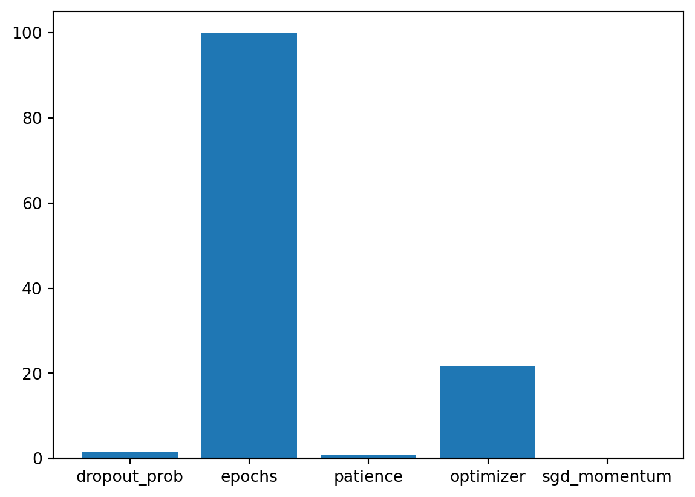
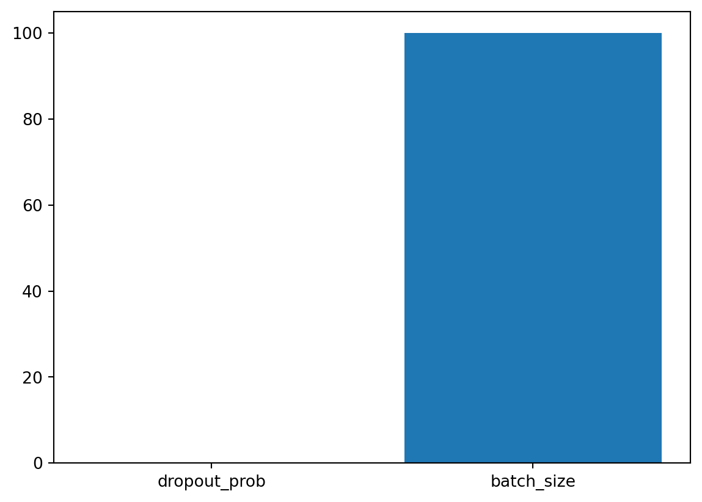
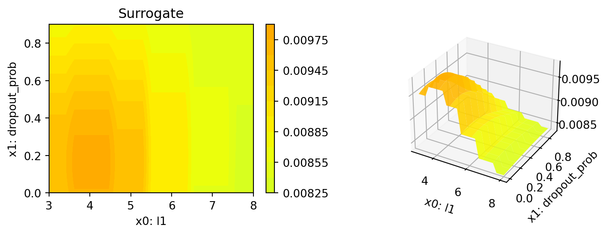

MAX_TIME = 1
INIT_SIZE = 5
DEVICE = None # "cpu" # "cuda:0"14 Hyperparameter Tuning for PyTorch With spotPython: Regression
In this tutorial, we will show how spotPython can be integrated into the PyTorch training workflow.
This document refers to the following software versions:
python: 3.10.10torch: 2.0.1torchvision: 0.15.0spotPython: 0.2.29
spotPython can be installed via pip. Alternatively, the source code can be downloaded from gitHub: https://github.com/sequential-parameter-optimization/spotPython.
!pip install spotPython14.1 Setup
Before we consider the detailed experimental setup, we select the parameters that affect run time, initial design size and the device that is used.
from spotPython.utils.device import getDevice
DEVICE = getDevice(DEVICE)
print(DEVICE)mpsimport os
import copy
import socket
from datetime import datetime
from dateutil.tz import tzlocal
start_time = datetime.now(tzlocal())
HOSTNAME = socket.gethostname().split(".")[0]
experiment_name = '24-torch' + "_" + HOSTNAME + "_" + str(MAX_TIME) + "min_" + str(INIT_SIZE) + "init_" + str(start_time).split(".", 1)[0].replace(' ', '_')
experiment_name = experiment_name.replace(':', '-')
print(experiment_name)
if not os.path.exists('./figures'):
os.makedirs('./figures')24-torch_bartz09_1min_5init_2023-06-15_05-59-4414.2 Initialization of the fun_control Dictionary
spotPython uses a Python dictionary for storing the information required for the hyperparameter tuning process. This dictionary is called fun_control and is initialized with the function fun_control_init. The function fun_control_init returns a skeleton dictionary. The dictionary is filled with the required information for the hyperparameter tuning process. It stores the hyperparameter tuning settings, e.g., the deep learning network architecture that should be tuned, the classification (or regression) problem, and the data that is used for the tuning. The dictionary is used as an input for the SPOT function.
from spotPython.utils.init import fun_control_init
fun_control = fun_control_init(task="regression",
tensorboard_path="runs/24_spot_torch_regression",
device=DEVICE)14.3 PyTorch Data Loading
# Create dataset
import pandas as pd
import numpy as np
from sklearn import datasets as sklearn_datasets
from sklearn.preprocessing import MinMaxScaler
from sklearn.model_selection import train_test_split
X, y = sklearn_datasets.make_regression(
n_samples=1000, n_features=10, noise=1, random_state=123)
y = y.reshape(-1, 1)
# Normalize the data
X_scaler = MinMaxScaler()
X_scaled = X_scaler.fit_transform(X)
y_scaler = MinMaxScaler()
y_scaled = y_scaler.fit_transform(y)
# combine the features and target into a single dataframe named train_df
train_df = pd.DataFrame(np.hstack((X_scaled, y_scaled)))
target_column = "y"
n_samples = train_df.shape[0]
n_features = train_df.shape[1] - 1
train_df.columns = [f"x{i}" for i in range(1, n_features+1)] + [target_column]
X_train, X_test, y_train, y_test = train_test_split(train_df.drop(target_column,
axis=1),
train_df[target_column],
random_state=42,
test_size=0.25)
trainset = pd.DataFrame(np.hstack((X_train, np.array(y_train).reshape(-1, 1))))
testset = pd.DataFrame(np.hstack((X_test, np.array(y_test).reshape(-1, 1))))
trainset.columns = [f"x{i}" for i in range(1, n_features+1)] + [target_column]
testset.columns = [f"x{i}" for i in range(1, n_features+1)] + [target_column]
print(train_df.shape)
print(trainset.shape)
print(testset.shape)(1000, 11)
(750, 11)
(250, 11)import torch
from spotPython.torch.dataframedataset import DataFrameDataset
dtype_x = torch.float32
dtype_y = torch.float32
train_df = DataFrameDataset(train_df, target_column=target_column,
dtype_x=dtype_x, dtype_y=dtype_y)
train = DataFrameDataset(trainset, target_column=target_column,
dtype_x=dtype_x, dtype_y=dtype_y)
test = DataFrameDataset(testset, target_column=target_column,
dtype_x=dtype_x, dtype_y=dtype_y)
n_samples = len(train)- Now we can test the data loading:
from spotPython.torch.traintest import create_train_val_data_loaders
trainloader, testloader = create_train_val_data_loaders(train, 2, True, 0)
for i, data in enumerate(trainloader, 0):
inputs, labels = data
print(inputs.shape)
print(labels.shape)
print(inputs)
print(labels)
breaktorch.Size([2, 10])
torch.Size([2])
tensor([[0.3163, 0.1814, 0.6331, 0.3031, 0.1927, 0.5964, 0.7035, 0.5347, 0.7078,
0.4439],
[0.4570, 0.6765, 0.6100, 0.3040, 0.3819, 0.6163, 0.4936, 0.8727, 0.4437,
0.3648]])
tensor([0.2249, 0.6488])- Since this works fine, we can add the data loading to the
fun_controldictionary:
# add the dataset to the fun_control
fun_control.update({"data": train_df, # full dataset,
"train": train,
"test": test,
"n_samples": n_samples,
"target_column": target_column,})14.4 Specification of the Preprocessing Model
After the training and test data are specified and added to the fun_control dictionary, spotPython allows the specification of a data preprocessing pipeline, e.g., for the scaling of the data or for the one-hot encoding of categorical variables. The preprocessing model is called prep_model (“preparation” or pre-processing) and includes steps that are not subject to the hyperparameter tuning process. The preprocessing model is specified in the fun_control dictionary. The preprocessing model can be implemented as a sklearn pipeline. The following code shows a typical preprocessing pipeline:
categorical_columns = ["cities", "colors"]
one_hot_encoder = OneHotEncoder(handle_unknown="ignore",
sparse_output=False)
prep_model = ColumnTransformer(
transformers=[
("categorical", one_hot_encoder, categorical_columns),
],
remainder=StandardScaler(),
)fun_control.update({"prep_model": None})14.5 Select algorithm and core_model_hyper_dict
14.5.1 Implementing a Configurable Neural Network With spotPython
spotPython includes the Net_lin_reg class which is implemented in the file netregression.py.
from torch import nn
import spotPython.torch.netcore as netcore
class Net_lin_reg(netcore.Net_Core):
def __init__(
self, _L_in, _L_out, l1, dropout_prob, lr_mult,
batch_size, epochs, k_folds, patience, optimizer,
sgd_momentum
):
super(Net_lin_reg, self).__init__(
lr_mult=lr_mult,
batch_size=batch_size,
epochs=epochs,
k_folds=k_folds,
patience=patience,
optimizer=optimizer,
sgd_momentum=sgd_momentum,
)
l2 = max(l1 // 2, 4)
self.fc1 = nn.Linear(_L_in, l1)
self.fc2 = nn.Linear(l1, l2)
self.fc3 = nn.Linear(l2, _L_out)
self.relu = nn.ReLU()
self.softmax = nn.Softmax(dim=1)
self.dropout1 = nn.Dropout(p=dropout_prob)
self.dropout2 = nn.Dropout(p=dropout_prob / 2)
def forward(self, x):
x = self.fc1(x)
x = self.relu(x)
x = self.dropout1(x)
x = self.fc2(x)
x = self.relu(x)
x = self.dropout2(x)
x = self.fc3(x)
return x
14.5.1.1 The Net_Core class
Net_lin_reg inherits from the class Net_Core which is implemented in the file netcore.py. It implements the additional attributes that are common to all neural network models. The Net_Core class is implemented in the file netcore.py. It implements hyperparameters as attributes, that are not used by the core_model, e.g.:
- optimizer (
optimizer), - learning rate (
lr), - batch size (
batch_size), - epochs (
epochs), - k_folds (
k_folds), and - early stopping criterion “patience” (
patience).
Users can add further attributes to the class. The class Net_Core is shown below.
from torch import nn
class Net_Core(nn.Module):
def __init__(self, lr_mult, batch_size, epochs, k_folds, patience,
optimizer, sgd_momentum):
super(Net_Core, self).__init__()
self.lr_mult = lr_mult
self.batch_size = batch_size
self.epochs = epochs
self.k_folds = k_folds
self.patience = patience
self.optimizer = optimizer
self.sgd_momentum = sgd_momentumWe see that the class Net_lin_reg has additional attributes and does not inherit from nn directly. It adds an additional class, Net_core, that takes care of additional attributes that are common to all neural network models, e.g., the learning rate multiplier lr_mult or the batch size batch_size.
spotPython’s core_model implements an instance of the Net_lin_reg class. In addition to the basic neural network model, the core_model can use these additional attributes. spotPython provides methods for handling these additional attributes to guarantee 100% compatibility with the PyTorch classes. The method add_core_model_to_fun_control adds the hyperparameters and additional attributes to the fun_control dictionary. The method is shown below.
from spotPython.torch.netregression import Net_lin_reg
from spotPython.data.torch_hyper_dict import TorchHyperDict
from spotPython.hyperparameters.values import add_core_model_to_fun_control
core_model = Net_lin_reg
fun_control = add_core_model_to_fun_control(core_model=core_model,
fun_control=fun_control,
hyper_dict=TorchHyperDict,
filename=None)14.6 The Search Space
14.6.1 Configuring the Search Space With spotPython
14.6.1.1 The hyper_dict Hyperparameters for the Selected Algorithm
spotPython uses JSON files for the specification of the hyperparameters. Users can specify their individual JSON files, or they can use the JSON files provided by spotPython. The JSON file for the core_model is called torch_hyper_dict.json.
spotPython can handle numerical, boolean, and categorical hyperparameters. They can be specified in the JSON file in a similar way as the numerical hyperparameters as shown below. Each entry in the JSON file represents one hyperparameter with the following structure: type, default, transform, lower, and upper.
"factor_hyperparameter": {
"levels": ["A", "B", "C"],
"type": "factor",
"default": "B",
"transform": "None",
"core_model_parameter_type": "str",
"lower": 0,
"upper": 2},The corresponding entries for the Net_lin_reg class are shown below.
"Net_lin_reg":
{
"_L_in": {
"type": "int",
"default": 10,
"transform": "None",
"lower": 10,
"upper": 10},
"_L_out": {
"type": "int",
"default": 1,
"transform": "None",
"lower": 1,
"upper": 1},
"l1": {
"type": "int",
"default": 3,
"transform": "transform_power_2_int",
"lower": 3,
"upper": 8},
"dropout_prob": {
"type": "float",
"default": 0.01,
"transform": "None",
"lower": 0.0,
"upper": 0.9},
"lr_mult": {
"type": "float",
"default": 1.0,
"transform": "None",
"lower": 0.1,
"upper": 10.0},
"batch_size": {
"type": "int",
"default": 4,
"transform": "transform_power_2_int",
"lower": 1,
"upper": 4},
"epochs": {
"type": "int",
"default": 4,
"transform": "transform_power_2_int",
"lower": 4,
"upper": 9},
"k_folds": {
"type": "int",
"default": 1,
"transform": "None",
"lower": 1,
"upper": 1},
"patience": {
"type": "int",
"default": 2,
"transform": "transform_power_2_int",
"lower": 1,
"upper": 5
},
"optimizer": {
"levels": ["Adadelta",
"Adagrad",
"Adam",
"AdamW",
"SparseAdam",
"Adamax",
"ASGD",
"NAdam",
"RAdam",
"RMSprop",
"Rprop",
"SGD"],
"type": "factor",
"default": "SGD",
"transform": "None",
"class_name": "torch.optim",
"core_model_parameter_type": "str",
"lower": 0,
"upper": 12},
"sgd_momentum": {
"type": "float",
"default": 0.0,
"transform": "None",
"lower": 0.0,
"upper": 1.0}
},14.7 Modifying the Hyperparameters
spotPython provides functions for modifying the hyperparameters, their bounds and factors as well as for activating and de-activating hyperparameters without re-compilation of the Python source code. These functions are described in the following.
14.7.1 Modify hyper_dict Hyperparameters for the Selected Algorithm aka core_model
After specifying the model, the corresponding hyperparameters, their types and bounds are loaded from the JSON file torch_hyper_dict.json. After loading, the user can modify the hyperparameters, e.g., the bounds. spotPython provides a simple rule for de-activating hyperparameters: If the lower and the upper bound are set to identical values, the hyperparameter is de-activated. This is useful for the hyperparameter tuning, because it allows to specify a hyperparameter in the JSON file, but to de-activate it in the fun_control dictionary. This is done in the next step.
14.7.2 Modify Hyperparameters of Type numeric and integer (boolean)
# modify the hyperparameter levels
from spotPython.hyperparameters.values import modify_hyper_parameter_bounds
fun_control = modify_hyper_parameter_bounds(fun_control, "epochs", bounds=[2, 16])
fun_control = modify_hyper_parameter_bounds(fun_control, "patience", bounds=[3, 7])14.7.3 Modify Hyperparameter of Type factor
In a similar manner as for the numerical hyperparameters, the categorical hyperparameters can be modified. New configurations can be chosen by adding or deleting levels. For example, the hyperparameter optimizer can be re-configured as follows:
In the following setting, two optimizers ("SGD" and "Adam") will be compared during the spotPython hyperparameter tuning. The hyperparameter optimizer is active.
from spotPython.hyperparameters.values import modify_hyper_parameter_levels
fun_control = modify_hyper_parameter_levels(fun_control, "optimizer",
["SGD", "Adam"])The hyperparameter optimizer can be de-activated by choosing only one value (level), here: "SGD".
fun_control = modify_hyper_parameter_levels(fun_control, "optimizer", ["SGD"])As discussed in Section 14.7.4, there are some issues with the LBFGS optimizer. Therefore, the usage of the LBFGS optimizer is not deactivated in spotPython by default. However, the LBFGS optimizer can be activated by adding it to the list of optimizers. Rprop was removed, because it does perform very poorly (as some pre-tests have shown). However, it can also be activated by adding it to the list of optimizers. Since SparseAdam does not support dense gradients, Adam was used instead. Therefore, there are 10 default optimizers:
fun_control = modify_hyper_parameter_levels(fun_control, "optimizer",
["Adadelta", "Adagrad", "Adam", "AdamW", "Adamax", "ASGD", "NAdam"])
fun_control.update({
"_L_in": n_features,
"_L_out": 1,})14.7.4 Optimizers
Table 14.1 shows some of the optimizers available in PyTorch:
| Optimizer | lr | mom | weight | damp | nest | rho | lr_sc | lr_decay | betas | lambd | alpha | mom_decay | etas | step_s |
|---|---|---|---|---|---|---|---|---|---|---|---|---|---|---|
| Adadelta | - | - | 0. | - | - | 0.9 | 1.0 | - | - | - | - | - | - | - |
| Adagrad | 1e-2 | - | 0. | - | - | - | - | 0. | - | - | - | - | - | - |
| Adam | 1e-3 | - | 0. | - | - | - | - | - | (0.9,0.999) | - | - | - | - | - |
| AdamW | 1e-3 | - | 1e-2 | - | - | - | - | - | (0.9,0.999) | - | - | - | - | - |
| SparseAdam | 1e-3 | - | - | - | - | - | - | - | (0.9,0.999) | - | - | - | - | - |
| Adamax | 2e-3 | - | 0. | - | - | - | - | - | (0.9, 0.999) | - | - | - | - | - |
| ASGD | 1e-2 | 0.9 | 0. | - | False | - | - | - | - | 1e-4 | 0.75 | - | - | - |
| LBFGS | 1. | - | - | - | - | - | - | - | - | - | - | - | - | - |
| NAdam | 2e-3 | - | 0. | - | - | - | - | - | (0.9,0.999) | - | - | 0 | - | - |
| RAdam | 1e-3 | - | 0. | - | - | - | - | - | (0.9,0.999) | - | - | - | - | - |
| RMSprop | 1e-2 | 0. | 0. | - | - | - | - | - | (0.9,0.999) | - | - | - | - | - |
| Rprop | 1e-2 | - | - | - | - | - | - | - | - | - | (0.5,1.2) | (1e-6, 50) | - | - |
| SGD | required | 0. | 0. | 0. | False | - | - | - | - | - | - | - | - | - |
spotPython implements an optimization handler that maps the optimizer names to the corresponding PyTorch optimizers.
A note on LBFGS
We recommend deactivating PyTorch’s LBFGS optimizer, because it does not perform very well. The PyTorch documentation, see https://pytorch.org/docs/stable/generated/torch.optim.LBFGS.html#torch.optim.LBFGS, states:
This is a very memory intensive optimizer (it requires additional
param_bytes * (history_size + 1)bytes). If it doesn’t fit in memory try reducing the history size, or use a different algorithm.
Furthermore, the LBFGS optimizer is not compatible with the PyTorch tutorial. The reason is that the LBFGS optimizer requires the closure function, which is not implemented in the PyTorch tutorial. Therefore, the LBFGS optimizer is recommended here.
Since there are 10 optimizers in the portfolio, it is not recommended tuning the hyperparameters that effect one single optimizer only.
A note on the learning rate
spotPython provides a multiplier for the default learning rates, lr_mult, because optimizers use different learning rates. Using a multiplier for the learning rates might enable a simultaneous tuning of the learning rates for all optimizers. However, this is not recommended, because the learning rates are not comparable across optimizers. Therefore, we recommend fixing the learning rate for all optimizers if multiple optimizers are used. This can be done by setting the lower and upper bounds of the learning rate multiplier to the same value as shown below.
Thus, the learning rate, which affects the SGD optimizer, will be set to a fixed value. We choose the default value of 1e-3 for the learning rate, because it is used in other PyTorch examples (it is also the default value used by spotPython as defined in the optimizer_handler() method). We recommend tuning the learning rate later, when a reduced set of optimizers is fixed. Here, we will demonstrate how to select in a screening phase the optimizers that should be used for the hyperparameter tuning.
For the same reason, we will fix the sgd_momentum to 0.9.
fun_control = modify_hyper_parameter_bounds(fun_control,
"lr_mult", bounds=[1e-3, 1e-3])
fun_control = modify_hyper_parameter_bounds(fun_control,
"sgd_momentum", bounds=[0.9, 0.9])14.8 Evaluation
The evaluation procedure requires the specification of two elements:
- the way how the data is split into a train and a test set and
- the loss function (and a metric).
14.8.1 Hold-out Data Split and Cross-Validation
As a default, spotPython provides a standard hold-out data split and cross validation.
14.8.1.1 Hold-out Data Split
If a hold-out data split is used, the data will be partitioned into a training, a validation, and a test data set. The split depends on the setting of the eval parameter. If eval is set to train_hold_out, one data set, usually the original training data set, is split into a new training and a validation data set. The training data set is used for training the model. The validation data set is used for the evaluation of the hyperparameter configuration and early stopping to prevent overfitting. In this case, the original test data set is not used. The following splits are performed in the hold-out setting: \(\{\text{train}_0, \text{test}\} \rightarrow \{\text{train}_1, \text{validation}_1, \text{test}\}\), where \(\text{train}_1 \cup \text{validation}_1 = \text{train}_0\).
Note
spotPython returns the hyperparameters of the machine learning and deep learning models, e.g., number of layers, learning rate, or optimizer, but not the model weights. Therefore, after the SPOT run is finished, the corresponding model with the optimized architecture has to be trained again with the best hyperparameter configuration. The training is performed on the training data set. The test data set is used for the final evaluation of the model.
Summarizing, the following splits are performed in the hold-out setting:
- Run
spotPythonwithevalset totrain_hold_outto determine the best hyperparameter configuration. - Train the model with the best hyperparameter configuration (“architecture”) on the training data set:
train_tuned(model_spot, train, "model_spot.pt").
- Test the model on the test data:
test_tuned(model_spot, test, "model_spot.pt")
These steps will be exemplified in the following sections.
In addition to this hold-out setting, spotPython provides another hold-out setting, where an explicit test data is specified by the user that will be used as the validation set. To choose this option, the eval parameter is set to test_hold_out. In this case, the training data set is used for the model training. Then, the explicitly defined test data set is used for the evaluation of the hyperparameter configuration (the validation).
14.8.1.2 Cross-Validation
The cross validation setting is used by setting the eval parameter to train_cv or test_cv. In both cases, the data set is split into \(k\) folds. The model is trained on \(k-1\) folds and evaluated on the remaining fold. This is repeated \(k\) times, so that each fold is used exactly once for evaluation. The final evaluation is performed on the test data set. The cross validation setting is useful for small data sets, because it allows to use all data for training and evaluation. However, it is computationally expensive, because the model has to be trained \(k\) times.
Note
Combinations of the above settings are possible, e.g., cross validation can be used for training and hold-out for evaluation or vice versa. Also, cross validation can be used for training and testing. Because cross validation is not used in the PyTorch tutorial (PyTorch 2023), it is not considered further here.
14.8.1.3 Overview of the Evaluation Settings
14.8.1.3.1 Settings for the Hyperparameter Tuning
Table 14.2 provides an overview of the training evaluations.
eval |
train |
test |
function | comment |
|---|---|---|---|---|
"train_hold_out" |
\(\checkmark\) | train_one_epoch(), validate_one_epoch() for early stopping |
splits the train data set internally |
|
"test_hold_out" |
\(\checkmark\) | \(\checkmark\) | train_one_epoch(), validate_one_epoch() for early stopping |
use the test data set for validate_one_epoch() |
"train_cv" |
\(\checkmark\) | evaluate_cv(net, train) |
CV using the train data set |
|
"test_cv" |
\(\checkmark\) | evaluate_cv(net, test) |
CV using the test data set . Identical to "train_cv", uses only test data. |
"train_cv"and"test_cv"usesklearn.model_selection.KFold()internally.
14.8.1.4 Settings for the Final Evaluation of the Tuned Architecture
14.8.1.4.1 Training of the Tuned Architecture
train_tuned(model, train): train the model with the best hyperparameter configuration (or simply the default) on the training data set. It splits the traindata into new train and validation sets using create_train_val_data_loaders(), which calls torch.utils.data.random_split() internally. Currently, 60% of the data is used for training and 40% for validation. The train data is used for training the model with train_one_epoch(). The validation data is used for early stopping using validate_one_epoch() on the validation data set.
14.8.1.4.2 Testing of the Tuned Architecture
test_tuned(model, test): test the model on the test data set. No data splitting is performed. The (trained) model is evaluated using the validate_one_epoch() function.
Note: During training, shuffle is set to True, whereas during testing, shuffle is set to False.
14.8.2 Loss Functions and Metrics
The key "loss_function" specifies the loss function which is used during the optimization. There are several different loss functions under PyTorch’s nn package. For example, a simple loss is MSELoss, which computes the mean-squared error between the output and the target. In this tutorial we will use CrossEntropyLoss, because it is also used in the PyTorch tutorial.
14.8.2.1 Loss Function
The loss function is specified by the key "loss_function". We will use MSE loss for the regression task.
from torch.nn import MSELoss
loss_torch = MSELoss()
fun_control.update({"loss_function": loss_torch})In addition to the loss functions, spotPython provides access to a large number of metrics.
- The key
"metric_sklearn"is used for metrics that follow thescikit-learnconventions. - The key
"river_metric"is used for the river based evaluation (Montiel et al. 2021) viaeval_oml_iter_progressive, and - the key
"metric_torch"is used for the metrics fromTorchMetrics.
TorchMetrics is a collection of more than 90 PyTorch metrics1.
from torchmetrics import MeanAbsoluteError
metric_torch = MeanAbsoluteError(device=fun_control["device"])
fun_control.update({"metric_torch": metric_torch})14.9 Calling the SPOT Function
# extract the variable types, names, and bounds
from spotPython.hyperparameters.values import (get_bound_values,
get_var_name,
get_var_type,)
var_type = get_var_type(fun_control)
var_name = get_var_name(fun_control)
fun_control.update({"var_type": var_type,
"var_name": var_name})
lower = get_bound_values(fun_control, "lower")
upper = get_bound_values(fun_control, "upper")Now, the dictionary fun_control contains all information needed for the hyperparameter tuning. Before the hyperparameter tuning is started, it is recommended to take a look at the experimental design. The method gen_design_table generates a design table as follows:
from spotPython.utils.eda import gen_design_table
print(gen_design_table(fun_control))| name | type | default | lower | upper | transform |
|--------------|--------|-----------|---------|---------|-----------------------|
| _L_in | int | 10 | 10 | 10 | None |
| _L_out | int | 1 | 1 | 1 | None |
| l1 | int | 3 | 3 | 8 | transform_power_2_int |
| dropout_prob | float | 0.01 | 0 | 0.9 | None |
| lr_mult | float | 1.0 | 0.001 | 0.001 | None |
| batch_size | int | 4 | 1 | 4 | transform_power_2_int |
| epochs | int | 4 | 2 | 16 | transform_power_2_int |
| k_folds | int | 1 | 1 | 1 | None |
| patience | int | 2 | 3 | 7 | transform_power_2_int |
| optimizer | factor | SGD | 0 | 6 | None |
| sgd_momentum | float | 0.0 | 0.9 | 0.9 | None |This allows to check if all information is available and if the information is correct. Table 14.3 shows the experimental design for the hyperparameter tuning. Hyperparameter transformations are shown in the column “transform”, e.g., the l1 default is 5, which results in the value \(2^5 = 32\) for the network, because the transformation transform_power_2_int was selected in the JSON file. The default value of the batch_size is set to 4, which results in a batch size of \(2^4 = 16\).
| name | type | default | lower | upper | transform |
|---|---|---|---|---|---|
| _L_in | int | 10 | 10 | 10 | None |
| _L_out | int | 1 | 1 | 1 | None |
| l1 | int | 3 | 3 | 8 | transform_power_2_int |
| dropout_prob | float | 0.01 | 0 | 0.9 | None |
| lr_mult | float | 1.0 | 0.001 | 0.001 | None |
| batch_size | int | 4 | 1 | 4 | transform_power_2_int |
| epochs | int | 4 | 2 | 16 | transform_power_2_int |
| k_folds | int | 1 | 1 | 1 | None |
| patience | int | 2 | 3 | 7 | transform_power_2_int |
| optimizer | factor | SGD | 0 | 6 | None |
| sgd_momentum | float | 0.0 | 0.9 | 0.9 | None |
The objective function fun_torch is selected next. It implements an interface from PyTorch’s training, validation, and testing methods to spotPython.
from spotPython.fun.hypertorch import HyperTorch
fun = HyperTorch().fun_torchfrom spotPython.hyperparameters.values import get_default_hyperparameters_as_array
hyper_dict=TorchHyperDict().load()
X_start = get_default_hyperparameters_as_array(fun_control, hyper_dict)fun_control.update({
"device": "cpu",
})The spotPython hyperparameter tuning is started by calling the Spot function. Here, we will run the tuner for approximately 30 minutes (max_time). Note: the initial design is always evaluated in the spotPython run. As a consequence, the run may take longer than specified by max_time, because the evaluation time of initial design (here: init_size, 10 points) is performed independently of max_time.
from spotPython.spot import spot
from math import inf
spot_tuner = spot.Spot(fun=fun,
lower = lower,
upper = upper,
fun_evals = inf,
fun_repeats = 1,
max_time = MAX_TIME,
noise = False,
tolerance_x = np.sqrt(np.spacing(1)),
var_type = var_type,
var_name = var_name,
infill_criterion = "y",
n_points = 1,
seed=123,
log_level = 50,
show_models= False,
show_progress= True,
fun_control = fun_control,
design_control={"init_size": INIT_SIZE,
"repeats": 1},
surrogate_control={"noise": True,
"cod_type": "norm",
"min_theta": -4,
"max_theta": 3,
"n_theta": len(var_name),
"model_fun_evals": 10_000,
"log_level": 50
})
spot_tuner.run(X_start=X_start)
config: {'_L_in': 10, '_L_out': 1, 'l1': 128, 'dropout_prob': 0.7103122166156, 'lr_mult': 0.001, 'batch_size': 4, 'epochs': 128, 'k_folds': 1, 'patience': 128, 'optimizer': 'AdamW', 'sgd_momentum': 0.9}
Epoch: 1
Loss on hold-out set: 0.3880799110730489
MeanAbsoluteError value on hold-out data: 0.5899776816368103
Epoch: 2
Loss on hold-out set: 0.3836869841814041
MeanAbsoluteError value on hold-out data: 0.5859453678131104
Epoch: 3
Loss on hold-out set: 0.37800121009349824
MeanAbsoluteError value on hold-out data: 0.5838974118232727
Epoch: 4Loss on hold-out set: 0.37562453736861545
MeanAbsoluteError value on hold-out data: 0.5799493193626404
Epoch: 5
Loss on hold-out set: 0.36837248464425404
MeanAbsoluteError value on hold-out data: 0.5729854106903076
Epoch: 6
Loss on hold-out set: 0.36849121779203414
MeanAbsoluteError value on hold-out data: 0.5718793272972107
Epoch: 7
Loss on hold-out set: 0.3593301492929459
MeanAbsoluteError value on hold-out data: 0.5673142075538635
Epoch: 8Loss on hold-out set: 0.35647780607144036
MeanAbsoluteError value on hold-out data: 0.5659938454627991
Epoch: 9
Loss on hold-out set: 0.3682290816307068
MeanAbsoluteError value on hold-out data: 0.572464644908905
Epoch: 10
Loss on hold-out set: 0.3438674708207448
MeanAbsoluteError value on hold-out data: 0.5554881691932678
Epoch: 11
Loss on hold-out set: 0.35077977160612744
MeanAbsoluteError value on hold-out data: 0.5578439235687256
Epoch: 12Loss on hold-out set: 0.32907806505759557
MeanAbsoluteError value on hold-out data: 0.5416633486747742
Epoch: 13
Loss on hold-out set: 0.3389214011033376
MeanAbsoluteError value on hold-out data: 0.5456399321556091
Epoch: 14
Loss on hold-out set: 0.33186697870492937
MeanAbsoluteError value on hold-out data: 0.5429821610450745
Epoch: 15
Loss on hold-out set: 0.32186263173818586
MeanAbsoluteError value on hold-out data: 0.5337691307067871
Epoch: 16Loss on hold-out set: 0.32638982792695365
MeanAbsoluteError value on hold-out data: 0.5339400768280029
Epoch: 17
Loss on hold-out set: 0.34150955428679786
MeanAbsoluteError value on hold-out data: 0.5488361120223999
Epoch: 18
Loss on hold-out set: 0.3181079350908597
MeanAbsoluteError value on hold-out data: 0.5279594659805298
Epoch: 19
Loss on hold-out set: 0.3101205576459567
MeanAbsoluteError value on hold-out data: 0.5216462016105652
Epoch: 20Loss on hold-out set: 0.31272549013296763
MeanAbsoluteError value on hold-out data: 0.5277438759803772
Epoch: 21
Loss on hold-out set: 0.31258161957065267
MeanAbsoluteError value on hold-out data: 0.5266361236572266
Epoch: 22
Loss on hold-out set: 0.3085262535015742
MeanAbsoluteError value on hold-out data: 0.5225566625595093
Epoch: 23
Loss on hold-out set: 0.2937054855624835
MeanAbsoluteError value on hold-out data: 0.5049911737442017
Epoch: 24Loss on hold-out set: 0.29786009723941487
MeanAbsoluteError value on hold-out data: 0.505726158618927
Epoch: 25
Loss on hold-out set: 0.29567268838485083
MeanAbsoluteError value on hold-out data: 0.5087849497795105
Epoch: 26
Loss on hold-out set: 0.2813201687733332
MeanAbsoluteError value on hold-out data: 0.4963820278644562
Epoch: 27
Loss on hold-out set: 0.2902079832553863
MeanAbsoluteError value on hold-out data: 0.5025125741958618
Epoch: 28Loss on hold-out set: 0.27412380596001945
MeanAbsoluteError value on hold-out data: 0.4855813682079315
Epoch: 29
Loss on hold-out set: 0.27381120532751085
MeanAbsoluteError value on hold-out data: 0.4837619960308075
Epoch: 30
Loss on hold-out set: 0.2753249797721704
MeanAbsoluteError value on hold-out data: 0.48615604639053345
Epoch: 31
Loss on hold-out set: 0.2756906555593014
MeanAbsoluteError value on hold-out data: 0.4903359115123749
Epoch: 32Loss on hold-out set: 0.26016402393579485
MeanAbsoluteError value on hold-out data: 0.4773153066635132
Epoch: 33
Loss on hold-out set: 0.2694820617636045
MeanAbsoluteError value on hold-out data: 0.48563048243522644
Epoch: 34
Loss on hold-out set: 0.2616444872319698
MeanAbsoluteError value on hold-out data: 0.47832727432250977
Epoch: 35
Loss on hold-out set: 0.2511261120438576
MeanAbsoluteError value on hold-out data: 0.4622211158275604
Epoch: 36Loss on hold-out set: 0.26056523924072583
MeanAbsoluteError value on hold-out data: 0.47433289885520935
Epoch: 37
Loss on hold-out set: 0.24974486788113912
MeanAbsoluteError value on hold-out data: 0.4631868898868561
Epoch: 38
Loss on hold-out set: 0.24516535783807436
MeanAbsoluteError value on hold-out data: 0.4578583240509033
Epoch: 39
Loss on hold-out set: 0.2462805862724781
MeanAbsoluteError value on hold-out data: 0.4543892443180084
Epoch: 40Loss on hold-out set: 0.23850424150625865
MeanAbsoluteError value on hold-out data: 0.4484350085258484
Epoch: 41
Loss on hold-out set: 0.2375045409301917
MeanAbsoluteError value on hold-out data: 0.44821715354919434
Epoch: 42
Loss on hold-out set: 0.2434506955742836
MeanAbsoluteError value on hold-out data: 0.4549056589603424
Epoch: 43
Loss on hold-out set: 0.23038897509376208
MeanAbsoluteError value on hold-out data: 0.44086360931396484
Epoch: 44Loss on hold-out set: 0.2311189151306947
MeanAbsoluteError value on hold-out data: 0.43871328234672546
Epoch: 45
Loss on hold-out set: 0.23182736575603485
MeanAbsoluteError value on hold-out data: 0.44097092747688293
Epoch: 46
Loss on hold-out set: 0.21953868828713893
MeanAbsoluteError value on hold-out data: 0.4279610216617584
Epoch: 47
Loss on hold-out set: 0.23960840448737145
MeanAbsoluteError value on hold-out data: 0.44631215929985046
Epoch: 48Loss on hold-out set: 0.21432177330056826
MeanAbsoluteError value on hold-out data: 0.42518240213394165
Epoch: 49
Loss on hold-out set: 0.22572503065069516
MeanAbsoluteError value on hold-out data: 0.4385136365890503
Epoch: 50
Loss on hold-out set: 0.21196399688720702
MeanAbsoluteError value on hold-out data: 0.42245790362358093
Epoch: 51
Loss on hold-out set: 0.21647593803703785
MeanAbsoluteError value on hold-out data: 0.42338305711746216
Epoch: 52Loss on hold-out set: 0.21441839839021365
MeanAbsoluteError value on hold-out data: 0.42293089628219604
Epoch: 53
Loss on hold-out set: 0.20614871313174565
MeanAbsoluteError value on hold-out data: 0.41088417172431946
Epoch: 54
Loss on hold-out set: 0.21418154728909333
MeanAbsoluteError value on hold-out data: 0.4205377697944641
Epoch: 55
Loss on hold-out set: 0.19838518684109052
MeanAbsoluteError value on hold-out data: 0.4055808186531067
Epoch: 56Loss on hold-out set: 0.19423130945612987
MeanAbsoluteError value on hold-out data: 0.4013197720050812
Epoch: 57
Loss on hold-out set: 0.19603884605069954
MeanAbsoluteError value on hold-out data: 0.40485307574272156
Epoch: 58
Loss on hold-out set: 0.191354534526666
MeanAbsoluteError value on hold-out data: 0.3967095613479614
Epoch: 59
Loss on hold-out set: 0.18607441939413547
MeanAbsoluteError value on hold-out data: 0.389576256275177
Epoch: 60Loss on hold-out set: 0.19079403246442478
MeanAbsoluteError value on hold-out data: 0.3925374746322632
Epoch: 61
Loss on hold-out set: 0.1960036384811004
MeanAbsoluteError value on hold-out data: 0.4035680592060089
Epoch: 62
Loss on hold-out set: 0.18160789246360462
MeanAbsoluteError value on hold-out data: 0.380288690328598
Epoch: 63
Loss on hold-out set: 0.1989179414510727
MeanAbsoluteError value on hold-out data: 0.3994502127170563
Epoch: 64
Loss on hold-out set: 0.19254313580691815
MeanAbsoluteError value on hold-out data: 0.39306581020355225
Epoch: 65Loss on hold-out set: 0.1771948327869177
MeanAbsoluteError value on hold-out data: 0.3773879110813141
Epoch: 66
Loss on hold-out set: 0.1760231030980746
MeanAbsoluteError value on hold-out data: 0.3762041926383972
Epoch: 67
Loss on hold-out set: 0.17199590936303139
MeanAbsoluteError value on hold-out data: 0.3691391050815582
Epoch: 68
Loss on hold-out set: 0.16509607955813407
MeanAbsoluteError value on hold-out data: 0.3647073805332184
Epoch: 69
Loss on hold-out set: 0.17139507159590722
MeanAbsoluteError value on hold-out data: 0.3691309094429016
Epoch: 70Loss on hold-out set: 0.16666551979879538
MeanAbsoluteError value on hold-out data: 0.3621125817298889
Epoch: 71
Loss on hold-out set: 0.1694364886979262
MeanAbsoluteError value on hold-out data: 0.36576178669929504
Epoch: 72
Loss on hold-out set: 0.1707458314920465
MeanAbsoluteError value on hold-out data: 0.36526861786842346
Epoch: 73
Loss on hold-out set: 0.158644323994716
MeanAbsoluteError value on hold-out data: 0.35473546385765076
Epoch: 74
Loss on hold-out set: 0.15925804947813352
MeanAbsoluteError value on hold-out data: 0.35808253288269043
Epoch: 75Loss on hold-out set: 0.14871751541271805
MeanAbsoluteError value on hold-out data: 0.3411659300327301
Epoch: 76
Loss on hold-out set: 0.15881584075589975
MeanAbsoluteError value on hold-out data: 0.35057008266448975
Epoch: 77
Loss on hold-out set: 0.15353250943124294
MeanAbsoluteError value on hold-out data: 0.3414638340473175
Epoch: 78
Loss on hold-out set: 0.13879319821794828
MeanAbsoluteError value on hold-out data: 0.3278297185897827
Epoch: 79
Loss on hold-out set: 0.1432836973418792
MeanAbsoluteError value on hold-out data: 0.3311055302619934
Epoch: 80Loss on hold-out set: 0.14388307603696981
MeanAbsoluteError value on hold-out data: 0.3319510519504547
Epoch: 81
Loss on hold-out set: 0.14630789950489997
MeanAbsoluteError value on hold-out data: 0.3349020481109619
Epoch: 82
Loss on hold-out set: 0.1358308787892262
MeanAbsoluteError value on hold-out data: 0.3195601999759674
Epoch: 83
Loss on hold-out set: 0.13304505594074725
MeanAbsoluteError value on hold-out data: 0.31500616669654846
Epoch: 84
Loss on hold-out set: 0.14229338797430197
MeanAbsoluteError value on hold-out data: 0.3295309841632843
Epoch: 85Loss on hold-out set: 0.13413121630748112
MeanAbsoluteError value on hold-out data: 0.32050973176956177
Epoch: 86
Loss on hold-out set: 0.12837606566647689
MeanAbsoluteError value on hold-out data: 0.3109428882598877
Epoch: 87
Loss on hold-out set: 0.1336614220837752
MeanAbsoluteError value on hold-out data: 0.31675392389297485
Epoch: 88
Loss on hold-out set: 0.12711885467171669
MeanAbsoluteError value on hold-out data: 0.3072037696838379
Epoch: 89
Loss on hold-out set: 0.13057974826544524
MeanAbsoluteError value on hold-out data: 0.31409522891044617
Epoch: 90Loss on hold-out set: 0.1297481312106053
MeanAbsoluteError value on hold-out data: 0.31132158637046814
Epoch: 91
Loss on hold-out set: 0.11912523386379083
MeanAbsoluteError value on hold-out data: 0.30101707577705383
Epoch: 92
Loss on hold-out set: 0.12311545960605144
MeanAbsoluteError value on hold-out data: 0.30496668815612793
Epoch: 93
Loss on hold-out set: 0.11927016124129296
MeanAbsoluteError value on hold-out data: 0.2962914705276489
Epoch: 94
Loss on hold-out set: 0.12144774296631415
MeanAbsoluteError value on hold-out data: 0.30237501859664917
Epoch: 95Loss on hold-out set: 0.11746331736445427
MeanAbsoluteError value on hold-out data: 0.2950419485569
Epoch: 96
Loss on hold-out set: 0.11121155418455601
MeanAbsoluteError value on hold-out data: 0.2861716151237488
Epoch: 97
Loss on hold-out set: 0.10882653936743736
MeanAbsoluteError value on hold-out data: 0.2833530306816101
Epoch: 98
Loss on hold-out set: 0.10903889745473862
MeanAbsoluteError value on hold-out data: 0.2800130844116211
Epoch: 99
Loss on hold-out set: 0.12341873566309611
MeanAbsoluteError value on hold-out data: 0.29833653569221497
Epoch: 100Loss on hold-out set: 0.1054092987626791
MeanAbsoluteError value on hold-out data: 0.2739351987838745
Epoch: 101
Loss on hold-out set: 0.1053611833974719
MeanAbsoluteError value on hold-out data: 0.27997511625289917
Epoch: 102
Loss on hold-out set: 0.10180222911139329
MeanAbsoluteError value on hold-out data: 0.27020105719566345
Epoch: 103
Loss on hold-out set: 0.11045179172108571
MeanAbsoluteError value on hold-out data: 0.28186503052711487
Epoch: 104
Loss on hold-out set: 0.09439728098611037
MeanAbsoluteError value on hold-out data: 0.26401928067207336
Epoch: 105Loss on hold-out set: 0.09351931383212407
MeanAbsoluteError value on hold-out data: 0.26154905557632446
Epoch: 106
Loss on hold-out set: 0.09713801949595412
MeanAbsoluteError value on hold-out data: 0.2638161778450012
Epoch: 107
Loss on hold-out set: 0.09345814928412438
MeanAbsoluteError value on hold-out data: 0.2608989179134369
Epoch: 108
Loss on hold-out set: 0.10183271319294969
MeanAbsoluteError value on hold-out data: 0.2747385799884796
Epoch: 109
Loss on hold-out set: 0.09911684604982535
MeanAbsoluteError value on hold-out data: 0.2694036066532135
Epoch: 110Loss on hold-out set: 0.09799518172939618
MeanAbsoluteError value on hold-out data: 0.2628406286239624
Epoch: 111
Loss on hold-out set: 0.10030249775697787
MeanAbsoluteError value on hold-out data: 0.26927390694618225
Epoch: 112
Loss on hold-out set: 0.089515517236044
MeanAbsoluteError value on hold-out data: 0.24437321722507477
Epoch: 113
Loss on hold-out set: 0.08700421212861935
MeanAbsoluteError value on hold-out data: 0.2446918934583664
Epoch: 114
Loss on hold-out set: 0.09243666367605329
MeanAbsoluteError value on hold-out data: 0.2530674636363983
Epoch: 115Loss on hold-out set: 0.08728596359491349
MeanAbsoluteError value on hold-out data: 0.2474481761455536
Epoch: 116
Loss on hold-out set: 0.09119456669936578
MeanAbsoluteError value on hold-out data: 0.2502688467502594
Epoch: 117
Loss on hold-out set: 0.08733472774426142
MeanAbsoluteError value on hold-out data: 0.2512621283531189
Epoch: 118
Loss on hold-out set: 0.08680794619644681
MeanAbsoluteError value on hold-out data: 0.2450418621301651
Epoch: 119
Loss on hold-out set: 0.08382196660464009
MeanAbsoluteError value on hold-out data: 0.24181099236011505
Epoch: 120Loss on hold-out set: 0.08907857824116945
MeanAbsoluteError value on hold-out data: 0.24978691339492798
Epoch: 121
Loss on hold-out set: 0.08207449068625768
MeanAbsoluteError value on hold-out data: 0.24045430123806
Epoch: 122
Loss on hold-out set: 0.09053841241945823
MeanAbsoluteError value on hold-out data: 0.24808357656002045
Epoch: 123
Loss on hold-out set: 0.07853908311575651
MeanAbsoluteError value on hold-out data: 0.23402859270572662
Epoch: 124Loss on hold-out set: 0.08898908268039425
MeanAbsoluteError value on hold-out data: 0.24805593490600586
Epoch: 125
Loss on hold-out set: 0.09254279808762172
MeanAbsoluteError value on hold-out data: 0.2544447183609009
Epoch: 126
Loss on hold-out set: 0.08263650688032309
MeanAbsoluteError value on hold-out data: 0.23900435864925385
Epoch: 127
Loss on hold-out set: 0.07984504015495379
MeanAbsoluteError value on hold-out data: 0.23947305977344513
Epoch: 128Loss on hold-out set: 0.0862145904575785
MeanAbsoluteError value on hold-out data: 0.2431158423423767
Returned to Spot: Validation loss: 0.0862145904575785
----------------------------------------------
config: {'_L_in': 10, '_L_out': 1, 'l1': 32, 'dropout_prob': 0.13021660839652088, 'lr_mult': 0.001, 'batch_size': 8, 'epochs': 256, 'k_folds': 1, 'patience': 64, 'optimizer': 'Adagrad', 'sgd_momentum': 0.9}
Epoch: 1
Loss on hold-out set: 0.4627989726631265
MeanAbsoluteError value on hold-out data: 0.6565921306610107
Epoch: 2
Loss on hold-out set: 0.4589531892224362
MeanAbsoluteError value on hold-out data: 0.6534714102745056
Epoch: 3
Loss on hold-out set: 0.4593477570696881
MeanAbsoluteError value on hold-out data: 0.6539322137832642
Epoch: 4
Loss on hold-out set: 0.46001733133667394
MeanAbsoluteError value on hold-out data: 0.6547444462776184
Epoch: 5
Loss on hold-out set: 0.4608977029198094
MeanAbsoluteError value on hold-out data: 0.6551709175109863
Epoch: 6
Loss on hold-out set: 0.4647337535494252
MeanAbsoluteError value on hold-out data: 0.6578038334846497
Epoch: 7
Loss on hold-out set: 0.4612514509966499
MeanAbsoluteError value on hold-out data: 0.654595136642456
Epoch: 8
Loss on hold-out set: 0.4579661174824363
MeanAbsoluteError value on hold-out data: 0.6533114910125732
Epoch: 9
Loss on hold-out set: 0.4593767343383086
MeanAbsoluteError value on hold-out data: 0.6537655591964722
Epoch: 10
Loss on hold-out set: 0.46053999348690633
MeanAbsoluteError value on hold-out data: 0.6547128558158875
Epoch: 11Loss on hold-out set: 0.4595827977908285
MeanAbsoluteError value on hold-out data: 0.6539943218231201
Epoch: 12
Loss on hold-out set: 0.45962194470982803
MeanAbsoluteError value on hold-out data: 0.6543705463409424
Epoch: 13
Loss on hold-out set: 0.45736330512322876
MeanAbsoluteError value on hold-out data: 0.6524419784545898
Epoch: 14
Loss on hold-out set: 0.4599130185026872
MeanAbsoluteError value on hold-out data: 0.6543874144554138
Epoch: 15
Loss on hold-out set: 0.4579157084226608
MeanAbsoluteError value on hold-out data: 0.6527398228645325
Epoch: 16
Loss on hold-out set: 0.4562674541222422
MeanAbsoluteError value on hold-out data: 0.6513288617134094
Epoch: 17
Loss on hold-out set: 0.4579960154859643
MeanAbsoluteError value on hold-out data: 0.6523417234420776
Epoch: 18
Loss on hold-out set: 0.45789690080441925
MeanAbsoluteError value on hold-out data: 0.6533842086791992
Epoch: 19
Loss on hold-out set: 0.4583052561471337
MeanAbsoluteError value on hold-out data: 0.6532690525054932
Epoch: 20
Loss on hold-out set: 0.45698324316426325
MeanAbsoluteError value on hold-out data: 0.6522902846336365
Epoch: 21
Loss on hold-out set: 0.4576420674198552
MeanAbsoluteError value on hold-out data: 0.6519546508789062
Epoch: 22Loss on hold-out set: 0.45693942826045186
MeanAbsoluteError value on hold-out data: 0.6517285108566284
Epoch: 23
Loss on hold-out set: 0.4544865826242848
MeanAbsoluteError value on hold-out data: 0.6501532793045044
Epoch: 24
Loss on hold-out set: 0.45744823860494715
MeanAbsoluteError value on hold-out data: 0.6524167656898499
Epoch: 25
Loss on hold-out set: 0.45570837823968185
MeanAbsoluteError value on hold-out data: 0.6511331796646118
Epoch: 26
Loss on hold-out set: 0.4553325913454357
MeanAbsoluteError value on hold-out data: 0.6506592631340027
Epoch: 27
Loss on hold-out set: 0.45445852452202845
MeanAbsoluteError value on hold-out data: 0.6499620676040649
Epoch: 28
Loss on hold-out set: 0.4542893304636604
MeanAbsoluteError value on hold-out data: 0.6509696245193481
Epoch: 29
Loss on hold-out set: 0.45320791398224075
MeanAbsoluteError value on hold-out data: 0.6491036415100098
Epoch: 30
Loss on hold-out set: 0.45692677090042516
MeanAbsoluteError value on hold-out data: 0.6519822478294373
Epoch: 31
Loss on hold-out set: 0.4532112212557542
MeanAbsoluteError value on hold-out data: 0.6492712497711182
Epoch: 32
Loss on hold-out set: 0.4557249985243145
MeanAbsoluteError value on hold-out data: 0.6510018706321716
Epoch: 33Loss on hold-out set: 0.4588989474271473
MeanAbsoluteError value on hold-out data: 0.6533785462379456
Epoch: 34
Loss on hold-out set: 0.45636854516832454
MeanAbsoluteError value on hold-out data: 0.6515430212020874
Epoch: 35
Loss on hold-out set: 0.4528054547937293
MeanAbsoluteError value on hold-out data: 0.6489641070365906
Epoch: 36
Loss on hold-out set: 0.45358750851530777
MeanAbsoluteError value on hold-out data: 0.6493239998817444
Epoch: 37
Loss on hold-out set: 0.4529598269023393
MeanAbsoluteError value on hold-out data: 0.6488447785377502
Epoch: 38
Loss on hold-out set: 0.45496590121796254
MeanAbsoluteError value on hold-out data: 0.6508914232254028
Epoch: 39
Loss on hold-out set: 0.4567106726922487
MeanAbsoluteError value on hold-out data: 0.6524199843406677
Epoch: 40
Loss on hold-out set: 0.45581202914840296
MeanAbsoluteError value on hold-out data: 0.6514948010444641
Epoch: 41
Loss on hold-out set: 0.4554611115079177
MeanAbsoluteError value on hold-out data: 0.6506933569908142
Epoch: 42
Loss on hold-out set: 0.4532644387922789
MeanAbsoluteError value on hold-out data: 0.6492961645126343
Epoch: 43
Loss on hold-out set: 0.45394236790506465
MeanAbsoluteError value on hold-out data: 0.6494168639183044
Epoch: 44Loss on hold-out set: 0.4535429516905232
MeanAbsoluteError value on hold-out data: 0.6494808197021484
Epoch: 45
Loss on hold-out set: 0.4547828020233857
MeanAbsoluteError value on hold-out data: 0.6497856974601746
Epoch: 46
Loss on hold-out set: 0.4545118989128816
MeanAbsoluteError value on hold-out data: 0.6500173211097717
Epoch: 47
Loss on hold-out set: 0.4523406075803857
MeanAbsoluteError value on hold-out data: 0.6484460234642029
Epoch: 48
Loss on hold-out set: 0.45267852434986516
MeanAbsoluteError value on hold-out data: 0.6489351391792297
Epoch: 49
Loss on hold-out set: 0.4535845941618869
MeanAbsoluteError value on hold-out data: 0.6492393016815186
Epoch: 50
Loss on hold-out set: 0.4537069475964496
MeanAbsoluteError value on hold-out data: 0.6499642729759216
Epoch: 51
Loss on hold-out set: 0.45489380783156347
MeanAbsoluteError value on hold-out data: 0.6506103277206421
Epoch: 52
Loss on hold-out set: 0.452504049790533
MeanAbsoluteError value on hold-out data: 0.6487504243850708
Epoch: 53
Loss on hold-out set: 0.45203583020912974
MeanAbsoluteError value on hold-out data: 0.648635745048523
Epoch: 54
Loss on hold-out set: 0.4535038831986879
MeanAbsoluteError value on hold-out data: 0.6492515206336975
Epoch: 55Loss on hold-out set: 0.45310733977117035
MeanAbsoluteError value on hold-out data: 0.6495614647865295
Epoch: 56
Loss on hold-out set: 0.453528745394004
MeanAbsoluteError value on hold-out data: 0.6494340300559998
Epoch: 57
Loss on hold-out set: 0.4530581337840934
MeanAbsoluteError value on hold-out data: 0.6490804553031921
Epoch: 58
Loss on hold-out set: 0.4540705453408392
MeanAbsoluteError value on hold-out data: 0.6495937705039978
Epoch: 59
Loss on hold-out set: 0.4543669427696027
MeanAbsoluteError value on hold-out data: 0.6501813530921936
Epoch: 60
Loss on hold-out set: 0.45246423231927974
MeanAbsoluteError value on hold-out data: 0.6484190821647644
Epoch: 61
Loss on hold-out set: 0.45014405799539464
MeanAbsoluteError value on hold-out data: 0.6469748020172119
Epoch: 62
Loss on hold-out set: 0.4557330953447442
MeanAbsoluteError value on hold-out data: 0.6506618857383728
Epoch: 63
Loss on hold-out set: 0.4508426573715712
MeanAbsoluteError value on hold-out data: 0.6475402116775513
Epoch: 64
Loss on hold-out set: 0.45314121011056396
MeanAbsoluteError value on hold-out data: 0.6491293907165527
Epoch: 65
Loss on hold-out set: 0.45261439916334656
MeanAbsoluteError value on hold-out data: 0.6486645936965942
Epoch: 66Loss on hold-out set: 0.4515979501761888
MeanAbsoluteError value on hold-out data: 0.6481348872184753
Epoch: 67
Loss on hold-out set: 0.45172497316410665
MeanAbsoluteError value on hold-out data: 0.648300290107727
Epoch: 68
Loss on hold-out set: 0.4508030885144284
MeanAbsoluteError value on hold-out data: 0.6472572088241577
Epoch: 69
Loss on hold-out set: 0.4539273004782827
MeanAbsoluteError value on hold-out data: 0.6490530967712402
Epoch: 70
Loss on hold-out set: 0.4526115687269914
MeanAbsoluteError value on hold-out data: 0.6488827466964722
Epoch: 71
Loss on hold-out set: 0.4541605852152172
MeanAbsoluteError value on hold-out data: 0.6494703888893127
Epoch: 72
Loss on hold-out set: 0.45270411042790665
MeanAbsoluteError value on hold-out data: 0.6489551663398743
Epoch: 73
Loss on hold-out set: 0.4520396590232849
MeanAbsoluteError value on hold-out data: 0.6479901075363159
Epoch: 74
Loss on hold-out set: 0.45378051306072037
MeanAbsoluteError value on hold-out data: 0.6492975354194641
Epoch: 75
Loss on hold-out set: 0.450921799007215
MeanAbsoluteError value on hold-out data: 0.6474267840385437
Epoch: 76
Loss on hold-out set: 0.4542545684074101
MeanAbsoluteError value on hold-out data: 0.650068998336792
Epoch: 77Loss on hold-out set: 0.4513097781884043
MeanAbsoluteError value on hold-out data: 0.6477612853050232
Epoch: 78
Loss on hold-out set: 0.4510274945121062
MeanAbsoluteError value on hold-out data: 0.6470417380332947
Epoch: 79
Loss on hold-out set: 0.4519781650681245
MeanAbsoluteError value on hold-out data: 0.6483672857284546
Epoch: 80
Loss on hold-out set: 0.45214405106870753
MeanAbsoluteError value on hold-out data: 0.6486579775810242
Epoch: 81
Loss on hold-out set: 0.45095630068528025
MeanAbsoluteError value on hold-out data: 0.6472180485725403
Epoch: 82
Loss on hold-out set: 0.4504508564346715
MeanAbsoluteError value on hold-out data: 0.6472318768501282
Epoch: 83
Loss on hold-out set: 0.45189395939048965
MeanAbsoluteError value on hold-out data: 0.6481188535690308
Epoch: 84
Loss on hold-out set: 0.44999781878370987
MeanAbsoluteError value on hold-out data: 0.646296501159668
Epoch: 85
Loss on hold-out set: 0.45152992872815384
MeanAbsoluteError value on hold-out data: 0.6477870941162109
Epoch: 86
Loss on hold-out set: 0.4488496145135478
MeanAbsoluteError value on hold-out data: 0.6458466053009033
Epoch: 87
Loss on hold-out set: 0.4495000760806234
MeanAbsoluteError value on hold-out data: 0.6469359993934631
Epoch: 88Loss on hold-out set: 0.4504060298204422
MeanAbsoluteError value on hold-out data: 0.6467682123184204
Epoch: 89
Loss on hold-out set: 0.4479993079838
MeanAbsoluteError value on hold-out data: 0.645456075668335
Epoch: 90
Loss on hold-out set: 0.4511445031354302
MeanAbsoluteError value on hold-out data: 0.6470165252685547
Epoch: 91
Loss on hold-out set: 0.4507835648561779
MeanAbsoluteError value on hold-out data: 0.6472745537757874
Epoch: 92
Loss on hold-out set: 0.45019401609897614
MeanAbsoluteError value on hold-out data: 0.6470003128051758
Epoch: 93
Loss on hold-out set: 0.451634932505457
MeanAbsoluteError value on hold-out data: 0.6483078002929688
Epoch: 94
Loss on hold-out set: 0.4503865140049081
MeanAbsoluteError value on hold-out data: 0.6471909284591675
Epoch: 95
Loss on hold-out set: 0.4515090365158884
MeanAbsoluteError value on hold-out data: 0.6474428176879883
Epoch: 96
Loss on hold-out set: 0.44951579680568293
MeanAbsoluteError value on hold-out data: 0.6459831595420837
Epoch: 97
Loss on hold-out set: 0.45158388583283676
MeanAbsoluteError value on hold-out data: 0.6478838920593262
Epoch: 98
Loss on hold-out set: 0.44928121017782313
MeanAbsoluteError value on hold-out data: 0.6458011269569397
Epoch: 99Loss on hold-out set: 0.4469640592211171
MeanAbsoluteError value on hold-out data: 0.6448303461074829
Epoch: 100
Loss on hold-out set: 0.44917522684523936
MeanAbsoluteError value on hold-out data: 0.6462762951850891
Epoch: 101
Loss on hold-out set: 0.4470257359115701
MeanAbsoluteError value on hold-out data: 0.6440426111221313
Epoch: 102
Loss on hold-out set: 0.44675874474801514
MeanAbsoluteError value on hold-out data: 0.6443750262260437
Epoch: 103
Loss on hold-out set: 0.4480649797539962
MeanAbsoluteError value on hold-out data: 0.6452566385269165
Epoch: 104
Loss on hold-out set: 0.44959760731772375
MeanAbsoluteError value on hold-out data: 0.6465162634849548
Epoch: 105
Loss on hold-out set: 0.44940275424405146
MeanAbsoluteError value on hold-out data: 0.6460399627685547
Epoch: 106
Loss on hold-out set: 0.44725412444064494
MeanAbsoluteError value on hold-out data: 0.6448283791542053
Epoch: 107
Loss on hold-out set: 0.4493673545749564
MeanAbsoluteError value on hold-out data: 0.646686851978302
Epoch: 108
Loss on hold-out set: 0.4491570239004336
MeanAbsoluteError value on hold-out data: 0.6460201740264893
Epoch: 109
Loss on hold-out set: 0.4494960457086563
MeanAbsoluteError value on hold-out data: 0.6462743878364563
Epoch: 110Loss on hold-out set: 0.44923827993242366
MeanAbsoluteError value on hold-out data: 0.6455119252204895
Epoch: 111
Loss on hold-out set: 0.4480784237384796
MeanAbsoluteError value on hold-out data: 0.6451811790466309
Epoch: 112
Loss on hold-out set: 0.4494582022491254
MeanAbsoluteError value on hold-out data: 0.6459540724754333
Epoch: 113
Loss on hold-out set: 0.4489768970953791
MeanAbsoluteError value on hold-out data: 0.6459988355636597
Epoch: 114
Loss on hold-out set: 0.44773849217515244
MeanAbsoluteError value on hold-out data: 0.6452873349189758
Epoch: 115
Loss on hold-out set: 0.4495871067047119
MeanAbsoluteError value on hold-out data: 0.6465311050415039
Epoch: 116
Loss on hold-out set: 0.4493013996826975
MeanAbsoluteError value on hold-out data: 0.6457881927490234
Epoch: 117
Loss on hold-out set: 0.4466182142496109
MeanAbsoluteError value on hold-out data: 0.6442474126815796
Epoch: 118
Loss on hold-out set: 0.44765500332179825
MeanAbsoluteError value on hold-out data: 0.6448273062705994
Epoch: 119
Loss on hold-out set: 0.4508525854662845
MeanAbsoluteError value on hold-out data: 0.647330105304718
Epoch: 120
Loss on hold-out set: 0.4494436853810361
MeanAbsoluteError value on hold-out data: 0.646956741809845
Epoch: 121Loss on hold-out set: 0.4461610309387508
MeanAbsoluteError value on hold-out data: 0.6438244581222534
Epoch: 122
Loss on hold-out set: 0.44799703594885376
MeanAbsoluteError value on hold-out data: 0.6448424458503723
Epoch: 123
Loss on hold-out set: 0.44731765122790085
MeanAbsoluteError value on hold-out data: 0.6447571516036987
Epoch: 124
Loss on hold-out set: 0.444920246538363
MeanAbsoluteError value on hold-out data: 0.6431748867034912
Epoch: 125
Loss on hold-out set: 0.45183343557935013
MeanAbsoluteError value on hold-out data: 0.6477536559104919
Epoch: 126
Loss on hold-out set: 0.4456331259325931
MeanAbsoluteError value on hold-out data: 0.6437221169471741
Epoch: 127
Loss on hold-out set: 0.4480566264767396
MeanAbsoluteError value on hold-out data: 0.644836962223053
Epoch: 128
Loss on hold-out set: 0.44945975353843287
MeanAbsoluteError value on hold-out data: 0.6465322971343994
Epoch: 129
Loss on hold-out set: 0.4483418966594495
MeanAbsoluteError value on hold-out data: 0.6456575989723206
Epoch: 130
Loss on hold-out set: 0.44642814209586695
MeanAbsoluteError value on hold-out data: 0.6436738967895508
Epoch: 131
Loss on hold-out set: 0.4477359221169823
MeanAbsoluteError value on hold-out data: 0.6445709466934204
Epoch: 132Loss on hold-out set: 0.4494143528373618
MeanAbsoluteError value on hold-out data: 0.646141767501831
Epoch: 133
Loss on hold-out set: 0.4477832960455041
MeanAbsoluteError value on hold-out data: 0.6449248194694519
Epoch: 134
Loss on hold-out set: 0.4475400283148414
MeanAbsoluteError value on hold-out data: 0.644883394241333
Epoch: 135
Loss on hold-out set: 0.44694959646777105
MeanAbsoluteError value on hold-out data: 0.6440098285675049
Epoch: 136
Loss on hold-out set: 0.44745009588567836
MeanAbsoluteError value on hold-out data: 0.6444754600524902
Epoch: 137
Loss on hold-out set: 0.4491337506394637
MeanAbsoluteError value on hold-out data: 0.6458517909049988
Epoch: 138
Loss on hold-out set: 0.4462098887092189
MeanAbsoluteError value on hold-out data: 0.6438659429550171
Epoch: 139
Loss on hold-out set: 0.4469732822556245
MeanAbsoluteError value on hold-out data: 0.6444832682609558
Epoch: 140
Loss on hold-out set: 0.4474699944257736
MeanAbsoluteError value on hold-out data: 0.6446747183799744
Epoch: 141
Loss on hold-out set: 0.4471552270023446
MeanAbsoluteError value on hold-out data: 0.6447279453277588
Epoch: 142
Loss on hold-out set: 0.4460928479307576
MeanAbsoluteError value on hold-out data: 0.6436082720756531
Epoch: 143Loss on hold-out set: 0.44769378947584254
MeanAbsoluteError value on hold-out data: 0.6452122926712036
Epoch: 144
Loss on hold-out set: 0.4452583836881738
MeanAbsoluteError value on hold-out data: 0.6430895328521729
Epoch: 145
Loss on hold-out set: 0.44615233650333
MeanAbsoluteError value on hold-out data: 0.6435401439666748
Epoch: 146
Loss on hold-out set: 0.44720305659269033
MeanAbsoluteError value on hold-out data: 0.6444634795188904
Epoch: 147
Loss on hold-out set: 0.4465066704310869
MeanAbsoluteError value on hold-out data: 0.6435976624488831
Epoch: 148
Loss on hold-out set: 0.44701012890589864
MeanAbsoluteError value on hold-out data: 0.6445486545562744
Epoch: 149
Loss on hold-out set: 0.4481064614496733
MeanAbsoluteError value on hold-out data: 0.6452943682670593
Epoch: 150
Loss on hold-out set: 0.4473157603489725
MeanAbsoluteError value on hold-out data: 0.6443766355514526
Epoch: 151
Loss on hold-out set: 0.44725596983181803
MeanAbsoluteError value on hold-out data: 0.6446670293807983
Epoch: 152
Loss on hold-out set: 0.44760294101740183
MeanAbsoluteError value on hold-out data: 0.6446340084075928
Epoch: 153
Loss on hold-out set: 0.4489342931069826
MeanAbsoluteError value on hold-out data: 0.6455261707305908
Epoch: 154Loss on hold-out set: 0.44462757832125616
MeanAbsoluteError value on hold-out data: 0.6422571539878845
Epoch: 155
Loss on hold-out set: 0.4439422001964168
MeanAbsoluteError value on hold-out data: 0.6425483226776123
Epoch: 156
Loss on hold-out set: 0.44435900841888626
MeanAbsoluteError value on hold-out data: 0.642622709274292
Epoch: 157
Loss on hold-out set: 0.4466083010560588
MeanAbsoluteError value on hold-out data: 0.6440661549568176
Epoch: 158
Loss on hold-out set: 0.4454694123644578
MeanAbsoluteError value on hold-out data: 0.6435724496841431
Epoch: 159
Loss on hold-out set: 0.44492243779333013
MeanAbsoluteError value on hold-out data: 0.6430906653404236
Epoch: 160
Loss on hold-out set: 0.4472875508822893
MeanAbsoluteError value on hold-out data: 0.6441663503646851
Epoch: 161
Loss on hold-out set: 0.44644741165010554
MeanAbsoluteError value on hold-out data: 0.6444502472877502
Epoch: 162
Loss on hold-out set: 0.4432135930186824
MeanAbsoluteError value on hold-out data: 0.6417235732078552
Epoch: 163
Loss on hold-out set: 0.44659182194032165
MeanAbsoluteError value on hold-out data: 0.6442509889602661
Epoch: 164
Loss on hold-out set: 0.4454674689393294
MeanAbsoluteError value on hold-out data: 0.6434155702590942
Epoch: 165Loss on hold-out set: 0.4450047337695172
MeanAbsoluteError value on hold-out data: 0.6424617767333984
Epoch: 166
Loss on hold-out set: 0.44542016245816884
MeanAbsoluteError value on hold-out data: 0.6432127356529236
Epoch: 167
Loss on hold-out set: 0.44552093587423625
MeanAbsoluteError value on hold-out data: 0.6433373689651489
Epoch: 168
Loss on hold-out set: 0.4436937476459302
MeanAbsoluteError value on hold-out data: 0.6412121057510376
Epoch: 169
Loss on hold-out set: 0.44578569970632853
MeanAbsoluteError value on hold-out data: 0.643306314945221
Epoch: 170
Loss on hold-out set: 0.44649074971675873
MeanAbsoluteError value on hold-out data: 0.6440760493278503
Epoch: 171
Loss on hold-out set: 0.44641782029678945
MeanAbsoluteError value on hold-out data: 0.6443111300468445
Epoch: 172
Loss on hold-out set: 0.44727252110054616
MeanAbsoluteError value on hold-out data: 0.6446658372879028
Epoch: 173
Loss on hold-out set: 0.4454742654373771
MeanAbsoluteError value on hold-out data: 0.6435269117355347
Epoch: 174
Loss on hold-out set: 0.44522760651613535
MeanAbsoluteError value on hold-out data: 0.6431772112846375
Epoch: 175
Loss on hold-out set: 0.4436156632084596
MeanAbsoluteError value on hold-out data: 0.641654372215271
Epoch: 176Loss on hold-out set: 0.4454385740192313
MeanAbsoluteError value on hold-out data: 0.64328932762146
Epoch: 177
Loss on hold-out set: 0.4471203943616466
MeanAbsoluteError value on hold-out data: 0.6444379687309265
Epoch: 178
Loss on hold-out set: 0.4487398831467879
MeanAbsoluteError value on hold-out data: 0.6461318135261536
Epoch: 179
Loss on hold-out set: 0.44412824668382345
MeanAbsoluteError value on hold-out data: 0.6427754163742065
Epoch: 180
Loss on hold-out set: 0.44386516825148936
MeanAbsoluteError value on hold-out data: 0.6423103213310242
Epoch: 181
Loss on hold-out set: 0.4465391463355014
MeanAbsoluteError value on hold-out data: 0.6438944935798645
Epoch: 182
Loss on hold-out set: 0.4466170488219512
MeanAbsoluteError value on hold-out data: 0.6440552473068237
Epoch: 183
Loss on hold-out set: 0.4459905898884723
MeanAbsoluteError value on hold-out data: 0.643480658531189
Epoch: 184
Loss on hold-out set: 0.4445395893172214
MeanAbsoluteError value on hold-out data: 0.6425812840461731
Epoch: 185
Loss on hold-out set: 0.44426003569050837
MeanAbsoluteError value on hold-out data: 0.6424267292022705
Epoch: 186
Loss on hold-out set: 0.44273590022011805
MeanAbsoluteError value on hold-out data: 0.6411311626434326
Epoch: 187Loss on hold-out set: 0.44620092134726674
MeanAbsoluteError value on hold-out data: 0.6434767246246338
Epoch: 188
Loss on hold-out set: 0.4455458717910867
MeanAbsoluteError value on hold-out data: 0.6436594128608704
Epoch: 189
Loss on hold-out set: 0.44562535458489466
MeanAbsoluteError value on hold-out data: 0.6434465050697327
Epoch: 190
Loss on hold-out set: 0.44387538731098175
MeanAbsoluteError value on hold-out data: 0.6418722867965698
Epoch: 191
Loss on hold-out set: 0.44489880376740504
MeanAbsoluteError value on hold-out data: 0.6430019736289978
Epoch: 192
Loss on hold-out set: 0.4452018996602611
MeanAbsoluteError value on hold-out data: 0.6431523561477661
Epoch: 193
Loss on hold-out set: 0.44444681390335683
MeanAbsoluteError value on hold-out data: 0.642634391784668
Epoch: 194
Loss on hold-out set: 0.44494262416111796
MeanAbsoluteError value on hold-out data: 0.643007218837738
Epoch: 195
Loss on hold-out set: 0.443953170588142
MeanAbsoluteError value on hold-out data: 0.6419922113418579
Epoch: 196
Loss on hold-out set: 0.4445572620943973
MeanAbsoluteError value on hold-out data: 0.6425214409828186
Epoch: 197
Loss on hold-out set: 0.44385663694457006
MeanAbsoluteError value on hold-out data: 0.6418905258178711
Epoch: 198Loss on hold-out set: 0.44591419555638967
MeanAbsoluteError value on hold-out data: 0.6438300013542175
Epoch: 199
Loss on hold-out set: 0.4439554983063748
MeanAbsoluteError value on hold-out data: 0.6418514847755432
Epoch: 200
Loss on hold-out set: 0.4451851131100404
MeanAbsoluteError value on hold-out data: 0.6431715488433838
Epoch: 201
Loss on hold-out set: 0.44343702651952444
MeanAbsoluteError value on hold-out data: 0.6414101123809814
Epoch: 202
Loss on hold-out set: 0.4440472369131289
MeanAbsoluteError value on hold-out data: 0.6423078179359436
Epoch: 203
Loss on hold-out set: 0.4447176574092162
MeanAbsoluteError value on hold-out data: 0.6428780555725098
Epoch: 204
Loss on hold-out set: 0.44440154652846486
MeanAbsoluteError value on hold-out data: 0.6419203281402588
Epoch: 205
Loss on hold-out set: 0.4421763522060294
MeanAbsoluteError value on hold-out data: 0.6404064297676086
Epoch: 206
Loss on hold-out set: 0.4457006313298878
MeanAbsoluteError value on hold-out data: 0.6436251401901245
Epoch: 207
Loss on hold-out set: 0.44454751359788997
MeanAbsoluteError value on hold-out data: 0.642621636390686
Epoch: 208
Loss on hold-out set: 0.44438493408654867
MeanAbsoluteError value on hold-out data: 0.6424214839935303
Epoch: 209Loss on hold-out set: 0.44334235081547185
MeanAbsoluteError value on hold-out data: 0.6415068507194519
Epoch: 210
Loss on hold-out set: 0.44537024199962616
MeanAbsoluteError value on hold-out data: 0.642821729183197
Epoch: 211
Loss on hold-out set: 0.44398138319191177
MeanAbsoluteError value on hold-out data: 0.6423727869987488
Epoch: 212
Loss on hold-out set: 0.44434016942977905
MeanAbsoluteError value on hold-out data: 0.6425963044166565
Epoch: 213
Loss on hold-out set: 0.4416431925798717
MeanAbsoluteError value on hold-out data: 0.6402907967567444
Epoch: 214
Loss on hold-out set: 0.44373079193265813
MeanAbsoluteError value on hold-out data: 0.6419054269790649
Epoch: 215
Loss on hold-out set: 0.44539355917980794
MeanAbsoluteError value on hold-out data: 0.6431086659431458
Epoch: 216
Loss on hold-out set: 0.4422860004399952
MeanAbsoluteError value on hold-out data: 0.6410336494445801
Epoch: 217
Loss on hold-out set: 0.443346967822627
MeanAbsoluteError value on hold-out data: 0.6411227583885193
Epoch: 218
Loss on hold-out set: 0.4438603598820536
MeanAbsoluteError value on hold-out data: 0.6418833136558533
Epoch: 219
Loss on hold-out set: 0.44261356874516133
MeanAbsoluteError value on hold-out data: 0.6411417126655579
Epoch: 220Loss on hold-out set: 0.44273753621076284
MeanAbsoluteError value on hold-out data: 0.6411751508712769
Epoch: 221
Loss on hold-out set: 0.44178157338970586
MeanAbsoluteError value on hold-out data: 0.6405621767044067
Epoch: 222
Loss on hold-out set: 0.44207231073003067
MeanAbsoluteError value on hold-out data: 0.6404234766960144
Epoch: 223
Loss on hold-out set: 0.44361892656276103
MeanAbsoluteError value on hold-out data: 0.6414068341255188
Epoch: 224
Loss on hold-out set: 0.4446931991137956
MeanAbsoluteError value on hold-out data: 0.642447829246521
Epoch: 225
Loss on hold-out set: 0.44398548963822815
MeanAbsoluteError value on hold-out data: 0.6420159935951233
Epoch: 226
Loss on hold-out set: 0.44065564635552856
MeanAbsoluteError value on hold-out data: 0.6397602558135986
Epoch: 227
Loss on hold-out set: 0.4425684339121768
MeanAbsoluteError value on hold-out data: 0.6409175395965576
Epoch: 228
Loss on hold-out set: 0.44313475489616394
MeanAbsoluteError value on hold-out data: 0.6416362524032593
Epoch: 229
Loss on hold-out set: 0.44173709577635717
MeanAbsoluteError value on hold-out data: 0.6405831575393677
Epoch: 230
Loss on hold-out set: 0.4451717091234107
MeanAbsoluteError value on hold-out data: 0.6431043744087219
Epoch: 231Loss on hold-out set: 0.44248127780462565
MeanAbsoluteError value on hold-out data: 0.6409093141555786
Epoch: 232
Loss on hold-out set: 0.4414456737668891
MeanAbsoluteError value on hold-out data: 0.6401420831680298
Epoch: 233
Loss on hold-out set: 0.4415855454771142
MeanAbsoluteError value on hold-out data: 0.6400477886199951
Epoch: 234
Loss on hold-out set: 0.44236734274186584
MeanAbsoluteError value on hold-out data: 0.6411596536636353
Epoch: 235
Loss on hold-out set: 0.4407345723164709
MeanAbsoluteError value on hold-out data: 0.6393563151359558
Epoch: 236
Loss on hold-out set: 0.4439612195680016
MeanAbsoluteError value on hold-out data: 0.6420528888702393
Epoch: 237
Loss on hold-out set: 0.4431019354807703
MeanAbsoluteError value on hold-out data: 0.6414679884910583
Epoch: 238
Loss on hold-out set: 0.44145549206357254
MeanAbsoluteError value on hold-out data: 0.6400941610336304
Epoch: 239
Loss on hold-out set: 0.4439332869492079
MeanAbsoluteError value on hold-out data: 0.6423124074935913
Epoch: 240
Loss on hold-out set: 0.44171480128639623
MeanAbsoluteError value on hold-out data: 0.6405342221260071
Epoch: 241
Loss on hold-out set: 0.44312768860867147
MeanAbsoluteError value on hold-out data: 0.6416229009628296
Epoch: 242Loss on hold-out set: 0.4426751583814621
MeanAbsoluteError value on hold-out data: 0.6409239768981934
Epoch: 243
Loss on hold-out set: 0.4426503055974057
MeanAbsoluteError value on hold-out data: 0.6409813165664673
Epoch: 244
Loss on hold-out set: 0.4426125217425196
MeanAbsoluteError value on hold-out data: 0.6410447955131531
Epoch: 245
Loss on hold-out set: 0.44307820028380346
MeanAbsoluteError value on hold-out data: 0.6418214440345764
Epoch: 246
Loss on hold-out set: 0.4421319443928568
MeanAbsoluteError value on hold-out data: 0.6402639746665955
Epoch: 247
Loss on hold-out set: 0.4418956362887433
MeanAbsoluteError value on hold-out data: 0.6409250497817993
Epoch: 248
Loss on hold-out set: 0.44191325024554606
MeanAbsoluteError value on hold-out data: 0.6407129764556885
Epoch: 249
Loss on hold-out set: 0.4434626674965808
MeanAbsoluteError value on hold-out data: 0.6419398784637451
Epoch: 250
Loss on hold-out set: 0.44221042253469167
MeanAbsoluteError value on hold-out data: 0.640393853187561
Epoch: 251
Loss on hold-out set: 0.4429532893394169
MeanAbsoluteError value on hold-out data: 0.6408767700195312
Epoch: 252
Loss on hold-out set: 0.4416337805358987
MeanAbsoluteError value on hold-out data: 0.6402255892753601
Epoch: 253Loss on hold-out set: 0.44213949849731043
MeanAbsoluteError value on hold-out data: 0.6404075026512146
Epoch: 254
Loss on hold-out set: 0.4434988028124759
MeanAbsoluteError value on hold-out data: 0.6415325403213501
Epoch: 255
Loss on hold-out set: 0.4415612009010817
MeanAbsoluteError value on hold-out data: 0.6398729681968689
Epoch: 256
Loss on hold-out set: 0.4409936603746916
MeanAbsoluteError value on hold-out data: 0.6400665044784546
Returned to Spot: Validation loss: 0.4409936603746916
----------------------------------------------
config: {'_L_in': 10, '_L_out': 1, 'l1': 8, 'dropout_prob': 0.5015226665924828, 'lr_mult': 0.001, 'batch_size': 16, 'epochs': 16384, 'k_folds': 1, 'patience': 8, 'optimizer': 'NAdam', 'sgd_momentum': 0.9}
Epoch: 1
Loss on hold-out set: 0.0907599024082485
MeanAbsoluteError value on hold-out data: 0.24761947989463806
Epoch: 2
Loss on hold-out set: 0.10860289790128407
MeanAbsoluteError value on hold-out data: 0.26934292912483215
Epoch: 3
Loss on hold-out set: 0.10374700062369045
MeanAbsoluteError value on hold-out data: 0.2640213668346405
Epoch: 4
Loss on hold-out set: 0.10466699400230457
MeanAbsoluteError value on hold-out data: 0.26435166597366333
Epoch: 5
Loss on hold-out set: 0.09770887031366951
MeanAbsoluteError value on hold-out data: 0.26091867685317993
Epoch: 6
Loss on hold-out set: 0.10279451124370098
MeanAbsoluteError value on hold-out data: 0.2613462805747986
Epoch: 7
Loss on hold-out set: 0.10051078074856808
MeanAbsoluteError value on hold-out data: 0.2552301585674286
Epoch: 8
Loss on hold-out set: 0.0946777564914603
MeanAbsoluteError value on hold-out data: 0.2504766285419464
Epoch: 9
Loss on hold-out set: 0.10294534658130847
MeanAbsoluteError value on hold-out data: 0.26373469829559326
Early stopping at epoch 8
Returned to Spot: Validation loss: 0.10294534658130847
----------------------------------------------
config: {'_L_in': 10, '_L_out': 1, 'l1': 16, 'dropout_prob': 0.26673029336651144, 'lr_mult': 0.001, 'batch_size': 8, 'epochs': 16, 'k_folds': 1, 'patience': 16, 'optimizer': 'Adamax', 'sgd_momentum': 0.9}
Epoch: 1
Loss on hold-out set: 0.5555819633759951
MeanAbsoluteError value on hold-out data: 0.7212883234024048
Epoch: 2Loss on hold-out set: 0.5540642087396822
MeanAbsoluteError value on hold-out data: 0.7214484810829163
Epoch: 3
Loss on hold-out set: 0.556898232353361
MeanAbsoluteError value on hold-out data: 0.7224522829055786
Epoch: 4
Loss on hold-out set: 0.5594656977214312
MeanAbsoluteError value on hold-out data: 0.72368985414505
Epoch: 5
Loss on hold-out set: 0.5529431826189944
MeanAbsoluteError value on hold-out data: 0.7202922701835632
Epoch: 6
Loss on hold-out set: 0.5517641094170118
MeanAbsoluteError value on hold-out data: 0.7199397683143616
Epoch: 7
Loss on hold-out set: 0.5546157179694426
MeanAbsoluteError value on hold-out data: 0.7200890183448792
Epoch: 8
Loss on hold-out set: 0.5550972231124577
MeanAbsoluteError value on hold-out data: 0.7193150520324707
Epoch: 9
Loss on hold-out set: 0.5524471347269259
MeanAbsoluteError value on hold-out data: 0.7186596989631653
Epoch: 10
Loss on hold-out set: 0.5537106959443343
MeanAbsoluteError value on hold-out data: 0.7196913957595825
Epoch: 11
Loss on hold-out set: 0.5398693155301245
MeanAbsoluteError value on hold-out data: 0.7107371687889099
Epoch: 12Loss on hold-out set: 0.5489669324536073
MeanAbsoluteError value on hold-out data: 0.7162120938301086
Epoch: 13
Loss on hold-out set: 0.5486662270207154
MeanAbsoluteError value on hold-out data: 0.717420220375061
Epoch: 14
Loss on hold-out set: 0.5455439576977178
MeanAbsoluteError value on hold-out data: 0.7140594720840454
Epoch: 15
Loss on hold-out set: 0.5542420391973696
MeanAbsoluteError value on hold-out data: 0.7209203839302063
Epoch: 16
Loss on hold-out set: 0.5465334559741774
MeanAbsoluteError value on hold-out data: 0.7153280973434448
Returned to Spot: Validation loss: 0.5465334559741774
----------------------------------------------
config: {'_L_in': 10, '_L_out': 1, 'l1': 128, 'dropout_prob': 0.8973189149831583, 'lr_mult': 0.001, 'batch_size': 2, 'epochs': 2048, 'k_folds': 1, 'patience': 32, 'optimizer': 'Adam', 'sgd_momentum': 0.9}
Epoch: 1
Loss on hold-out set: 0.35942203680829454
MeanAbsoluteError value on hold-out data: 0.5473533868789673
Epoch: 2Loss on hold-out set: 0.340117316551817
MeanAbsoluteError value on hold-out data: 0.5312947630882263
Epoch: 3
Loss on hold-out set: 0.3288393857081731
MeanAbsoluteError value on hold-out data: 0.5259130001068115
Epoch: 4
Loss on hold-out set: 0.3357589885592461
MeanAbsoluteError value on hold-out data: 0.533232569694519
Epoch: 5Loss on hold-out set: 0.3190875634054343
MeanAbsoluteError value on hold-out data: 0.5129112005233765
Epoch: 6
Loss on hold-out set: 0.3325934727489948
MeanAbsoluteError value on hold-out data: 0.5251381397247314
Epoch: 7
Loss on hold-out set: 0.3181713222960631
MeanAbsoluteError value on hold-out data: 0.5162366032600403
Epoch: 8Loss on hold-out set: 0.32848209273070095
MeanAbsoluteError value on hold-out data: 0.515327513217926
Epoch: 9
Loss on hold-out set: 0.32387858025729654
MeanAbsoluteError value on hold-out data: 0.5157452821731567
Epoch: 10
Loss on hold-out set: 0.32641185755841434
MeanAbsoluteError value on hold-out data: 0.5214706659317017
Epoch: 11Loss on hold-out set: 0.3068516902656605
MeanAbsoluteError value on hold-out data: 0.49719303846359253
Epoch: 12
Loss on hold-out set: 0.28916342412897694
MeanAbsoluteError value on hold-out data: 0.4829237461090088
Epoch: 13
Loss on hold-out set: 0.29739811081749695
MeanAbsoluteError value on hold-out data: 0.49592065811157227
Epoch: 14Loss on hold-out set: 0.3047691786661744
MeanAbsoluteError value on hold-out data: 0.4996480345726013
Epoch: 15
Loss on hold-out set: 0.3049532512660759
MeanAbsoluteError value on hold-out data: 0.49422740936279297
Epoch: 16
Loss on hold-out set: 0.29377639580518006
MeanAbsoluteError value on hold-out data: 0.48742273449897766
Epoch: 17Loss on hold-out set: 0.2914588878427943
MeanAbsoluteError value on hold-out data: 0.4858555495738983
Epoch: 18
Loss on hold-out set: 0.29059613360712927
MeanAbsoluteError value on hold-out data: 0.487634539604187
Epoch: 19
Loss on hold-out set: 0.2918362336481611
MeanAbsoluteError value on hold-out data: 0.48726415634155273
Epoch: 20Loss on hold-out set: 0.289655896712405
MeanAbsoluteError value on hold-out data: 0.4864009618759155
Epoch: 21
Loss on hold-out set: 0.27464142425606647
MeanAbsoluteError value on hold-out data: 0.4757027328014374
Epoch: 22
Loss on hold-out set: 0.2765393829656144
MeanAbsoluteError value on hold-out data: 0.4726284146308899
Epoch: 23Loss on hold-out set: 0.27149822041780375
MeanAbsoluteError value on hold-out data: 0.46224120259284973
Epoch: 24
Loss on hold-out set: 0.2678913458126287
MeanAbsoluteError value on hold-out data: 0.4624612033367157
Epoch: 25
Loss on hold-out set: 0.2523702985420823
MeanAbsoluteError value on hold-out data: 0.45226627588272095
Epoch: 26Loss on hold-out set: 0.2567014840990305
MeanAbsoluteError value on hold-out data: 0.45393162965774536
Epoch: 27
Loss on hold-out set: 0.29154734456290804
MeanAbsoluteError value on hold-out data: 0.49090439081192017
Epoch: 28
Loss on hold-out set: 0.28075619449838995
MeanAbsoluteError value on hold-out data: 0.4758870303630829
Epoch: 29Loss on hold-out set: 0.2599267060759788
MeanAbsoluteError value on hold-out data: 0.4552158713340759
Epoch: 30
Loss on hold-out set: 0.23721521511363486
MeanAbsoluteError value on hold-out data: 0.43247750401496887
Epoch: 31
Loss on hold-out set: 0.25486929510099193
MeanAbsoluteError value on hold-out data: 0.44886133074760437
Epoch: 32Loss on hold-out set: 0.24667249428108334
MeanAbsoluteError value on hold-out data: 0.44277894496917725
Epoch: 33
Loss on hold-out set: 0.23841586945268015
MeanAbsoluteError value on hold-out data: 0.43295714259147644
Epoch: 34
Loss on hold-out set: 0.23702610011639383
MeanAbsoluteError value on hold-out data: 0.42894449830055237
Epoch: 35Loss on hold-out set: 0.24268234237407646
MeanAbsoluteError value on hold-out data: 0.4402633607387543
Epoch: 36
Loss on hold-out set: 0.24817818319735427
MeanAbsoluteError value on hold-out data: 0.43655073642730713
Epoch: 37
Loss on hold-out set: 0.23161101255876324
MeanAbsoluteError value on hold-out data: 0.4279007613658905
Epoch: 38Loss on hold-out set: 0.22981314857645582
MeanAbsoluteError value on hold-out data: 0.427016943693161
Epoch: 39
Loss on hold-out set: 0.21386192453171438
MeanAbsoluteError value on hold-out data: 0.4096103012561798
Epoch: 40
Loss on hold-out set: 0.2272342791687697
MeanAbsoluteError value on hold-out data: 0.4223040044307709
Epoch: 41Loss on hold-out set: 0.2266827812915047
MeanAbsoluteError value on hold-out data: 0.4165513813495636
Epoch: 42
Loss on hold-out set: 0.22464013841934502
MeanAbsoluteError value on hold-out data: 0.42042240500450134
Epoch: 43
Loss on hold-out set: 0.21538425634770345
MeanAbsoluteError value on hold-out data: 0.40679508447647095
Epoch: 44Loss on hold-out set: 0.22766628672834485
MeanAbsoluteError value on hold-out data: 0.41749778389930725
Epoch: 45
Loss on hold-out set: 0.22404516187186044
MeanAbsoluteError value on hold-out data: 0.4167960584163666
Epoch: 46
Loss on hold-out set: 0.20977662979159503
MeanAbsoluteError value on hold-out data: 0.398589551448822
Epoch: 47Loss on hold-out set: 0.22256495270257196
MeanAbsoluteError value on hold-out data: 0.41217002272605896
Epoch: 48
Loss on hold-out set: 0.20653583007243773
MeanAbsoluteError value on hold-out data: 0.39590930938720703
Epoch: 49
Loss on hold-out set: 0.22486225354174774
MeanAbsoluteError value on hold-out data: 0.41829031705856323
Epoch: 50Loss on hold-out set: 0.21296398308865416
MeanAbsoluteError value on hold-out data: 0.39846551418304443
Epoch: 51
Loss on hold-out set: 0.20458407807163895
MeanAbsoluteError value on hold-out data: 0.3958100378513336
Epoch: 52
Loss on hold-out set: 0.19535328616853803
MeanAbsoluteError value on hold-out data: 0.38979271054267883
Epoch: 53Loss on hold-out set: 0.18599648925475776
MeanAbsoluteError value on hold-out data: 0.38307785987854004
Epoch: 54
Loss on hold-out set: 0.19595590042027955
MeanAbsoluteError value on hold-out data: 0.3857477605342865
Epoch: 55
Loss on hold-out set: 0.1949584838654846
MeanAbsoluteError value on hold-out data: 0.3878266513347626
Epoch: 56Loss on hold-out set: 0.20247651587240398
MeanAbsoluteError value on hold-out data: 0.3897246718406677
Epoch: 57
Loss on hold-out set: 0.19522921663398543
MeanAbsoluteError value on hold-out data: 0.3829149901866913
Epoch: 58
Loss on hold-out set: 0.18953906812394658
MeanAbsoluteError value on hold-out data: 0.3836454749107361
Epoch: 59Loss on hold-out set: 0.1983502767390261
MeanAbsoluteError value on hold-out data: 0.38693109154701233
Epoch: 60
Loss on hold-out set: 0.20998683478683233
MeanAbsoluteError value on hold-out data: 0.39239799976348877
Epoch: 61
Loss on hold-out set: 0.1881432940174515
MeanAbsoluteError value on hold-out data: 0.37518787384033203
Epoch: 62Loss on hold-out set: 0.1937331968266517
MeanAbsoluteError value on hold-out data: 0.38558271527290344
Epoch: 63
Loss on hold-out set: 0.17847651544647913
MeanAbsoluteError value on hold-out data: 0.3642744719982147
Epoch: 64
Loss on hold-out set: 0.17596024135292584
MeanAbsoluteError value on hold-out data: 0.3617781698703766
Epoch: 65Loss on hold-out set: 0.17375697774191698
MeanAbsoluteError value on hold-out data: 0.36626288294792175
Epoch: 66
Loss on hold-out set: 0.1912630452293282
MeanAbsoluteError value on hold-out data: 0.37759149074554443
Epoch: 67
Loss on hold-out set: 0.17724436698985907
MeanAbsoluteError value on hold-out data: 0.3535984456539154
Epoch: 68Loss on hold-out set: 0.1815174949976305
MeanAbsoluteError value on hold-out data: 0.36903032660484314
Epoch: 69
Loss on hold-out set: 0.15509856992090743
MeanAbsoluteError value on hold-out data: 0.33933332562446594
Epoch: 70
Loss on hold-out set: 0.1698333578063951
MeanAbsoluteError value on hold-out data: 0.3500637710094452
Epoch: 71Loss on hold-out set: 0.16520904455411559
MeanAbsoluteError value on hold-out data: 0.35265275835990906
Epoch: 72
Loss on hold-out set: 0.17313115367045004
MeanAbsoluteError value on hold-out data: 0.35542982816696167
Epoch: 73
Loss on hold-out set: 0.17152695803437382
MeanAbsoluteError value on hold-out data: 0.3525194525718689
Epoch: 74Loss on hold-out set: 0.1648854251243271
MeanAbsoluteError value on hold-out data: 0.3435210585594177
Epoch: 75
Loss on hold-out set: 0.17384557359308625
MeanAbsoluteError value on hold-out data: 0.34949058294296265
Epoch: 76
Loss on hold-out set: 0.1489562683357993
MeanAbsoluteError value on hold-out data: 0.3293082118034363
Epoch: 77Loss on hold-out set: 0.17002671528141947
MeanAbsoluteError value on hold-out data: 0.3535289466381073
Epoch: 78
Loss on hold-out set: 0.16128799548450237
MeanAbsoluteError value on hold-out data: 0.3403277099132538
Epoch: 79
Loss on hold-out set: 0.1608771170862019
MeanAbsoluteError value on hold-out data: 0.34000638127326965
Epoch: 80Loss on hold-out set: 0.17172873428401847
MeanAbsoluteError value on hold-out data: 0.355564683675766
Epoch: 81
Loss on hold-out set: 0.16013986746220327
MeanAbsoluteError value on hold-out data: 0.34206536412239075
Epoch: 82
Loss on hold-out set: 0.16699964294736372
MeanAbsoluteError value on hold-out data: 0.3495270609855652
Epoch: 83Loss on hold-out set: 0.15567113618017175
MeanAbsoluteError value on hold-out data: 0.3439956605434418
Epoch: 84
Loss on hold-out set: 0.13422383261960932
MeanAbsoluteError value on hold-out data: 0.3051757514476776
Epoch: 85
Loss on hold-out set: 0.16424098841923598
MeanAbsoluteError value on hold-out data: 0.34788593649864197
Epoch: 86Loss on hold-out set: 0.14712993120071285
MeanAbsoluteError value on hold-out data: 0.3263108432292938
Epoch: 87
Loss on hold-out set: 0.15233454243794162
MeanAbsoluteError value on hold-out data: 0.33332711458206177
Epoch: 88
Loss on hold-out set: 0.15584410762259115
MeanAbsoluteError value on hold-out data: 0.33454030752182007
Epoch: 89Loss on hold-out set: 0.14892084651238596
MeanAbsoluteError value on hold-out data: 0.328662246465683
Epoch: 90
Loss on hold-out set: 0.14601623078963408
MeanAbsoluteError value on hold-out data: 0.3201962411403656
Epoch: 91
Loss on hold-out set: 0.13716077289311215
MeanAbsoluteError value on hold-out data: 0.3127284348011017
Epoch: 92Loss on hold-out set: 0.14047898249700666
MeanAbsoluteError value on hold-out data: 0.31289368867874146
Epoch: 93
Loss on hold-out set: 0.1444991973368451
MeanAbsoluteError value on hold-out data: 0.32299304008483887
Epoch: 94
Loss on hold-out set: 0.15144212607216712
MeanAbsoluteError value on hold-out data: 0.3261747360229492
Epoch: 95Loss on hold-out set: 0.13740186965287043
MeanAbsoluteError value on hold-out data: 0.3165481984615326
Epoch: 96
Loss on hold-out set: 0.1335838402295485
MeanAbsoluteError value on hold-out data: 0.31013938784599304
Epoch: 97
Loss on hold-out set: 0.1502707689604722
MeanAbsoluteError value on hold-out data: 0.3266625702381134
Epoch: 98Loss on hold-out set: 0.14957713865675032
MeanAbsoluteError value on hold-out data: 0.32706141471862793
Epoch: 99
Loss on hold-out set: 0.13765214182746907
MeanAbsoluteError value on hold-out data: 0.31613442301750183
Epoch: 100
Loss on hold-out set: 0.12786531066250367
MeanAbsoluteError value on hold-out data: 0.3060765564441681
Epoch: 101Loss on hold-out set: 0.13616271160858257
MeanAbsoluteError value on hold-out data: 0.31073009967803955
Epoch: 102
Loss on hold-out set: 0.12764892609668702
MeanAbsoluteError value on hold-out data: 0.296493798494339
Epoch: 103
Loss on hold-out set: 0.13361851508370212
MeanAbsoluteError value on hold-out data: 0.3034282326698303
Epoch: 104Loss on hold-out set: 0.12137454038563494
MeanAbsoluteError value on hold-out data: 0.28970322012901306
Epoch: 105
Loss on hold-out set: 0.1356013491936028
MeanAbsoluteError value on hold-out data: 0.31113725900650024
Epoch: 106
Loss on hold-out set: 0.11262589131753581
MeanAbsoluteError value on hold-out data: 0.28187623620033264
Epoch: 107Loss on hold-out set: 0.14472605059777077
MeanAbsoluteError value on hold-out data: 0.32358163595199585
Epoch: 108
Loss on hold-out set: 0.123876127943707
MeanAbsoluteError value on hold-out data: 0.2893526554107666
Epoch: 109
Loss on hold-out set: 0.12229839983241012
MeanAbsoluteError value on hold-out data: 0.29284319281578064
Epoch: 110Loss on hold-out set: 0.13049372204579412
MeanAbsoluteError value on hold-out data: 0.3062885105609894
Epoch: 111
Loss on hold-out set: 0.12387571594988306
MeanAbsoluteError value on hold-out data: 0.2890383005142212
Epoch: 112
Loss on hold-out set: 0.11327295808121562
MeanAbsoluteError value on hold-out data: 0.2815669775009155
Epoch: 113Loss on hold-out set: 0.11762650122245152
MeanAbsoluteError value on hold-out data: 0.288284569978714
Epoch: 114
Loss on hold-out set: 0.11521096272025412
MeanAbsoluteError value on hold-out data: 0.2822805643081665
Epoch: 115
Loss on hold-out set: 0.12106607303178558
MeanAbsoluteError value on hold-out data: 0.28616422414779663
Epoch: 116Loss on hold-out set: 0.12355651274401074
MeanAbsoluteError value on hold-out data: 0.29332292079925537
Epoch: 117
Loss on hold-out set: 0.11728608721556763
MeanAbsoluteError value on hold-out data: 0.28626954555511475
Epoch: 118
Loss on hold-out set: 0.12032038739533163
MeanAbsoluteError value on hold-out data: 0.29031500220298767
Epoch: 119Loss on hold-out set: 0.12818754196943094
MeanAbsoluteError value on hold-out data: 0.3011290729045868
Epoch: 120
Loss on hold-out set: 0.1333511966051689
MeanAbsoluteError value on hold-out data: 0.3091905415058136
Epoch: 121
Loss on hold-out set: 0.1091590139331917
MeanAbsoluteError value on hold-out data: 0.27781668305397034
Epoch: 122Loss on hold-out set: 0.12181491513906319
MeanAbsoluteError value on hold-out data: 0.2912302017211914
Epoch: 123
Loss on hold-out set: 0.11089463963871822
MeanAbsoluteError value on hold-out data: 0.2732159495353699
Epoch: 124
Loss on hold-out set: 0.1021037278328246
MeanAbsoluteError value on hold-out data: 0.26803335547447205
Epoch: 125Loss on hold-out set: 0.11500476690208113
MeanAbsoluteError value on hold-out data: 0.27739861607551575
Epoch: 126
Loss on hold-out set: 0.11748044946541389
MeanAbsoluteError value on hold-out data: 0.28494641184806824
Epoch: 127
Loss on hold-out set: 0.11358133622134725
MeanAbsoluteError value on hold-out data: 0.2807934284210205
Epoch: 128Loss on hold-out set: 0.11022103113510336
MeanAbsoluteError value on hold-out data: 0.2737456262111664
Epoch: 129
Loss on hold-out set: 0.11364755001171337
MeanAbsoluteError value on hold-out data: 0.280472993850708
Epoch: 130
Loss on hold-out set: 0.11112292560438315
MeanAbsoluteError value on hold-out data: 0.2729261815547943
Epoch: 131Loss on hold-out set: 0.10050627921591512
MeanAbsoluteError value on hold-out data: 0.26512157917022705
Epoch: 132
Loss on hold-out set: 0.10828669071391535
MeanAbsoluteError value on hold-out data: 0.2710760533809662
Epoch: 133
Loss on hold-out set: 0.11690342619782314
MeanAbsoluteError value on hold-out data: 0.2823551893234253
Epoch: 134Loss on hold-out set: 0.10715428820549278
MeanAbsoluteError value on hold-out data: 0.2714904844760895
Epoch: 135
Loss on hold-out set: 0.10407921475668748
MeanAbsoluteError value on hold-out data: 0.26757198572158813
Epoch: 136
Loss on hold-out set: 0.12601793787674978
MeanAbsoluteError value on hold-out data: 0.28674396872520447
Epoch: 137Loss on hold-out set: 0.12784489011391997
MeanAbsoluteError value on hold-out data: 0.2860984206199646
Epoch: 138
Loss on hold-out set: 0.10832093603729542
MeanAbsoluteError value on hold-out data: 0.2646139860153198
Epoch: 139
Loss on hold-out set: 0.10902379850313688
MeanAbsoluteError value on hold-out data: 0.27351465821266174
Epoch: 140Loss on hold-out set: 0.10812491706960524
MeanAbsoluteError value on hold-out data: 0.2723095715045929
Epoch: 141
Loss on hold-out set: 0.10438801815500483
MeanAbsoluteError value on hold-out data: 0.2687864601612091
Epoch: 142
Loss on hold-out set: 0.10449539088644087
MeanAbsoluteError value on hold-out data: 0.2637953460216522
Epoch: 143Loss on hold-out set: 0.10966987963416613
MeanAbsoluteError value on hold-out data: 0.27203136682510376
Epoch: 144
Loss on hold-out set: 0.0995169809924361
MeanAbsoluteError value on hold-out data: 0.2614741921424866
Epoch: 145
Loss on hold-out set: 0.09745104723648788
MeanAbsoluteError value on hold-out data: 0.25474119186401367
Epoch: 146Loss on hold-out set: 0.09868114036275073
MeanAbsoluteError value on hold-out data: 0.26060736179351807
Epoch: 147
Loss on hold-out set: 0.10214638291838735
MeanAbsoluteError value on hold-out data: 0.25949224829673767
Epoch: 148
Loss on hold-out set: 0.09370269942019756
MeanAbsoluteError value on hold-out data: 0.2538761794567108
Epoch: 149Loss on hold-out set: 0.10047829707214988
MeanAbsoluteError value on hold-out data: 0.2612086236476898
Epoch: 150
Loss on hold-out set: 0.10250811297698723
MeanAbsoluteError value on hold-out data: 0.2650384306907654
Epoch: 151
Loss on hold-out set: 0.11306162872778562
MeanAbsoluteError value on hold-out data: 0.2802852392196655
Epoch: 152Loss on hold-out set: 0.09915911229212118
MeanAbsoluteError value on hold-out data: 0.2598768472671509
Epoch: 153
Loss on hold-out set: 0.108122091886277
MeanAbsoluteError value on hold-out data: 0.2716710865497589
Epoch: 154
Loss on hold-out set: 0.11257303280018581
MeanAbsoluteError value on hold-out data: 0.264741986989975
Epoch: 155Loss on hold-out set: 0.10850306998395051
MeanAbsoluteError value on hold-out data: 0.26513752341270447
Epoch: 156
Loss on hold-out set: 0.10669659160717856
MeanAbsoluteError value on hold-out data: 0.271679550409317
Epoch: 157
Loss on hold-out set: 0.10071512242662721
MeanAbsoluteError value on hold-out data: 0.25757279992103577
Epoch: 158Loss on hold-out set: 0.10535549942869693
MeanAbsoluteError value on hold-out data: 0.26586610078811646
Epoch: 159
Loss on hold-out set: 0.10030520771164447
MeanAbsoluteError value on hold-out data: 0.2569221556186676
Epoch: 160
Loss on hold-out set: 0.10361332301593697
MeanAbsoluteError value on hold-out data: 0.26323434710502625
Epoch: 161Loss on hold-out set: 0.1035293353368373
MeanAbsoluteError value on hold-out data: 0.2631157636642456
Epoch: 162
Loss on hold-out set: 0.10177684444390858
MeanAbsoluteError value on hold-out data: 0.2630542516708374
Epoch: 163
Loss on hold-out set: 0.09976425169191012
MeanAbsoluteError value on hold-out data: 0.2658640444278717
Epoch: 164Loss on hold-out set: 0.10808157974854112
MeanAbsoluteError value on hold-out data: 0.269523024559021
Epoch: 165
Loss on hold-out set: 0.11317426273909707
MeanAbsoluteError value on hold-out data: 0.2825244069099426
Epoch: 166
Loss on hold-out set: 0.0928951215154181
MeanAbsoluteError value on hold-out data: 0.24613481760025024
Epoch: 167Loss on hold-out set: 0.10246243470969299
MeanAbsoluteError value on hold-out data: 0.26763007044792175
Epoch: 168
Loss on hold-out set: 0.1026789629967728
MeanAbsoluteError value on hold-out data: 0.26824951171875
Epoch: 169
Loss on hold-out set: 0.09321827076423991
MeanAbsoluteError value on hold-out data: 0.24754276871681213
Epoch: 170Loss on hold-out set: 0.09705553084767113
MeanAbsoluteError value on hold-out data: 0.2551393508911133
Epoch: 171
Loss on hold-out set: 0.09775005352683365
MeanAbsoluteError value on hold-out data: 0.2540559768676758
Epoch: 172
Loss on hold-out set: 0.10172915168261776
MeanAbsoluteError value on hold-out data: 0.2600668966770172
Epoch: 173Loss on hold-out set: 0.09290545317111537
MeanAbsoluteError value on hold-out data: 0.25384628772735596
Epoch: 174
Loss on hold-out set: 0.0944040242691214
MeanAbsoluteError value on hold-out data: 0.2519071400165558
Epoch: 175
Loss on hold-out set: 0.08100815595438084
MeanAbsoluteError value on hold-out data: 0.23731131851673126
Epoch: 176Loss on hold-out set: 0.09681892585160919
MeanAbsoluteError value on hold-out data: 0.2513824999332428
Epoch: 177
Loss on hold-out set: 0.09306872028391808
MeanAbsoluteError value on hold-out data: 0.2511293888092041
Epoch: 178
Loss on hold-out set: 0.1157253296355096
MeanAbsoluteError value on hold-out data: 0.27343544363975525
Epoch: 179Loss on hold-out set: 0.0870953202546419
MeanAbsoluteError value on hold-out data: 0.23618169128894806
Epoch: 180
Loss on hold-out set: 0.10462116401176899
MeanAbsoluteError value on hold-out data: 0.2608072757720947
Epoch: 181
Loss on hold-out set: 0.10727453477370243
MeanAbsoluteError value on hold-out data: 0.26881644129753113
Epoch: 182Loss on hold-out set: 0.10238373705564299
MeanAbsoluteError value on hold-out data: 0.2632840871810913
Epoch: 183
Loss on hold-out set: 0.10366135513099531
MeanAbsoluteError value on hold-out data: 0.26454928517341614
Epoch: 184
Loss on hold-out set: 0.08551485699446251
MeanAbsoluteError value on hold-out data: 0.23792852461338043
Epoch: 185Loss on hold-out set: 0.10159660036287581
MeanAbsoluteError value on hold-out data: 0.25938475131988525
Epoch: 186
Loss on hold-out set: 0.1068465962074697
MeanAbsoluteError value on hold-out data: 0.27154839038848877
Epoch: 187
Loss on hold-out set: 0.08486659216978296
MeanAbsoluteError value on hold-out data: 0.23020921647548676
Epoch: 188Loss on hold-out set: 0.0984190525712135
MeanAbsoluteError value on hold-out data: 0.2594861686229706
Epoch: 189
Loss on hold-out set: 0.09891394621867221
MeanAbsoluteError value on hold-out data: 0.2513481676578522
Epoch: 190
Loss on hold-out set: 0.10134982038289309
MeanAbsoluteError value on hold-out data: 0.25807029008865356
Epoch: 191Loss on hold-out set: 0.09101210748155912
MeanAbsoluteError value on hold-out data: 0.2523293197154999
Epoch: 192
Loss on hold-out set: 0.09606388407448928
MeanAbsoluteError value on hold-out data: 0.2545988857746124
Epoch: 193
Loss on hold-out set: 0.10236769631699039
MeanAbsoluteError value on hold-out data: 0.2602272927761078
Epoch: 194Loss on hold-out set: 0.08585137002364111
MeanAbsoluteError value on hold-out data: 0.23038868606090546
Epoch: 195
Loss on hold-out set: 0.09980433501147976
MeanAbsoluteError value on hold-out data: 0.2552485764026642
Epoch: 196
Loss on hold-out set: 0.09635448274590695
MeanAbsoluteError value on hold-out data: 0.2510274648666382
Epoch: 197Loss on hold-out set: 0.10223913447659773
MeanAbsoluteError value on hold-out data: 0.2605172097682953
Epoch: 198
Loss on hold-out set: 0.09489625854378876
MeanAbsoluteError value on hold-out data: 0.254561185836792
Epoch: 199
Loss on hold-out set: 0.0868308769466239
MeanAbsoluteError value on hold-out data: 0.2401658147573471
Epoch: 200Loss on hold-out set: 0.08554651412181556
MeanAbsoluteError value on hold-out data: 0.24150747060775757
Epoch: 201
Loss on hold-out set: 0.08309459253136689
MeanAbsoluteError value on hold-out data: 0.22918586432933807
Epoch: 202
Loss on hold-out set: 0.10159056303285373
MeanAbsoluteError value on hold-out data: 0.26179012656211853
Epoch: 203Loss on hold-out set: 0.0802979029873677
MeanAbsoluteError value on hold-out data: 0.22802868485450745
Epoch: 204
Loss on hold-out set: 0.10086305494691866
MeanAbsoluteError value on hold-out data: 0.2549743056297302
Epoch: 205
Loss on hold-out set: 0.09130810380641681
MeanAbsoluteError value on hold-out data: 0.24415336549282074
Epoch: 206Loss on hold-out set: 0.09874599172306868
MeanAbsoluteError value on hold-out data: 0.2598705589771271
Epoch: 207
Loss on hold-out set: 0.09546209547358254
MeanAbsoluteError value on hold-out data: 0.24915343523025513
Epoch: 208
Loss on hold-out set: 0.08752690909275164
MeanAbsoluteError value on hold-out data: 0.2387186735868454
Epoch: 209Loss on hold-out set: 0.09195197360755022
MeanAbsoluteError value on hold-out data: 0.24200940132141113
Epoch: 210
Loss on hold-out set: 0.09661983530871415
MeanAbsoluteError value on hold-out data: 0.2523827850818634
Epoch: 211
Loss on hold-out set: 0.09746486369651393
MeanAbsoluteError value on hold-out data: 0.24535971879959106
Epoch: 212Loss on hold-out set: 0.09593248407618375
MeanAbsoluteError value on hold-out data: 0.24527201056480408
Epoch: 213
Loss on hold-out set: 0.08762997447357823
MeanAbsoluteError value on hold-out data: 0.24818865954875946
Epoch: 214
Loss on hold-out set: 0.09062037191334336
MeanAbsoluteError value on hold-out data: 0.2487483024597168
Epoch: 215Loss on hold-out set: 0.08981889275378005
MeanAbsoluteError value on hold-out data: 0.24424625933170319
Epoch: 216
Loss on hold-out set: 0.08029537183271411
MeanAbsoluteError value on hold-out data: 0.22789987921714783
Epoch: 217
Loss on hold-out set: 0.09135659327497705
MeanAbsoluteError value on hold-out data: 0.24170203506946564
Epoch: 218Loss on hold-out set: 0.09148098391635964
MeanAbsoluteError value on hold-out data: 0.2430833876132965
Epoch: 219
Loss on hold-out set: 0.10050653902503351
MeanAbsoluteError value on hold-out data: 0.2615955173969269
Epoch: 220
Loss on hold-out set: 0.09528928042234232
MeanAbsoluteError value on hold-out data: 0.24324889481067657
Epoch: 221Loss on hold-out set: 0.0922065845564551
MeanAbsoluteError value on hold-out data: 0.2450760453939438
Epoch: 222
Loss on hold-out set: 0.09155014637392014
MeanAbsoluteError value on hold-out data: 0.25402215123176575
Epoch: 223
Loss on hold-out set: 0.09702969212356645
MeanAbsoluteError value on hold-out data: 0.256540447473526
Epoch: 224Loss on hold-out set: 0.10398892153083579
MeanAbsoluteError value on hold-out data: 0.2546880543231964
Epoch: 225
Loss on hold-out set: 0.0905076963895893
MeanAbsoluteError value on hold-out data: 0.242879718542099
Epoch: 226
Loss on hold-out set: 0.09558403013089749
MeanAbsoluteError value on hold-out data: 0.24483685195446014
Epoch: 227Loss on hold-out set: 0.08162066148128361
MeanAbsoluteError value on hold-out data: 0.2303251326084137
Epoch: 228
Loss on hold-out set: 0.10206926486736241
MeanAbsoluteError value on hold-out data: 0.2560073733329773
Epoch: 229
Loss on hold-out set: 0.07413971603848041
MeanAbsoluteError value on hold-out data: 0.219350203871727
Epoch: 230Loss on hold-out set: 0.09404376904810002
MeanAbsoluteError value on hold-out data: 0.2447337657213211
Epoch: 231
Loss on hold-out set: 0.07021813147468492
MeanAbsoluteError value on hold-out data: 0.21451835334300995
Epoch: 232
Loss on hold-out set: 0.10799305157735944
MeanAbsoluteError value on hold-out data: 0.27033549547195435
Epoch: 233Loss on hold-out set: 0.09353746463195421
MeanAbsoluteError value on hold-out data: 0.24237845838069916
Epoch: 234
Loss on hold-out set: 0.09533997783049321
MeanAbsoluteError value on hold-out data: 0.2515796720981598
Epoch: 235
Loss on hold-out set: 0.087083221412225
MeanAbsoluteError value on hold-out data: 0.2318393439054489
Epoch: 236Loss on hold-out set: 0.09121541720582173
MeanAbsoluteError value on hold-out data: 0.24456067383289337
Epoch: 237
Loss on hold-out set: 0.0929722089949064
MeanAbsoluteError value on hold-out data: 0.23718376457691193
Epoch: 238
Loss on hold-out set: 0.08488025765870892
MeanAbsoluteError value on hold-out data: 0.22975881397724152
Epoch: 239Loss on hold-out set: 0.10443284192471765
MeanAbsoluteError value on hold-out data: 0.26233816146850586
Epoch: 240
Loss on hold-out set: 0.09751650258889034
MeanAbsoluteError value on hold-out data: 0.25210845470428467
Epoch: 241
Loss on hold-out set: 0.08799825655529275
MeanAbsoluteError value on hold-out data: 0.23622667789459229
Epoch: 242Loss on hold-out set: 0.09737830657317924
MeanAbsoluteError value on hold-out data: 0.25393882393836975
Epoch: 243
Loss on hold-out set: 0.09241264024244931
MeanAbsoluteError value on hold-out data: 0.2452748566865921
Epoch: 244
Loss on hold-out set: 0.09117106129454139
MeanAbsoluteError value on hold-out data: 0.23803527653217316
Epoch: 245Loss on hold-out set: 0.08925814898218959
MeanAbsoluteError value on hold-out data: 0.24430857598781586
Epoch: 246
Loss on hold-out set: 0.10177093826040315
MeanAbsoluteError value on hold-out data: 0.2575643062591553
Epoch: 247
Loss on hold-out set: 0.0777476977884847
MeanAbsoluteError value on hold-out data: 0.2174939215183258
Epoch: 248Loss on hold-out set: 0.08332410309485264
MeanAbsoluteError value on hold-out data: 0.2338300347328186
Epoch: 249
Loss on hold-out set: 0.08193271123959373
MeanAbsoluteError value on hold-out data: 0.22591537237167358
Epoch: 250
Loss on hold-out set: 0.08771158823510632
MeanAbsoluteError value on hold-out data: 0.2387746423482895
Epoch: 251Loss on hold-out set: 0.08126815342189123
MeanAbsoluteError value on hold-out data: 0.22467567026615143
Epoch: 252
Loss on hold-out set: 0.09404783456469885
MeanAbsoluteError value on hold-out data: 0.2411993145942688
Epoch: 253
Loss on hold-out set: 0.08702320758835412
MeanAbsoluteError value on hold-out data: 0.2345535010099411
Epoch: 254Loss on hold-out set: 0.0999036842243125
MeanAbsoluteError value on hold-out data: 0.2553742825984955
Epoch: 255
Loss on hold-out set: 0.09006271986135592
MeanAbsoluteError value on hold-out data: 0.23417551815509796
Epoch: 256
Loss on hold-out set: 0.08867481812136248
MeanAbsoluteError value on hold-out data: 0.24698998034000397
Epoch: 257Loss on hold-out set: 0.07442789652695259
MeanAbsoluteError value on hold-out data: 0.22076138854026794
Epoch: 258
Loss on hold-out set: 0.07324298803966182
MeanAbsoluteError value on hold-out data: 0.2221785932779312
Epoch: 259
Loss on hold-out set: 0.09793501357703159
MeanAbsoluteError value on hold-out data: 0.2547050416469574
Epoch: 260Loss on hold-out set: 0.09600132483212898
MeanAbsoluteError value on hold-out data: 0.24808631837368011
Epoch: 261
Loss on hold-out set: 0.0877704827322547
MeanAbsoluteError value on hold-out data: 0.24204887449741364
Epoch: 262
Loss on hold-out set: 0.08901351906902467
MeanAbsoluteError value on hold-out data: 0.2341025471687317
Epoch: 263Loss on hold-out set: 0.0800885943544563
MeanAbsoluteError value on hold-out data: 0.22656016051769257
Early stopping at epoch 262
Returned to Spot: Validation loss: 0.0800885943544563
----------------------------------------------
config: {'_L_in': 10, '_L_out': 1, 'l1': 128, 'dropout_prob': 0.8941737037376589, 'lr_mult': 0.001, 'batch_size': 2, 'epochs': 2048, 'k_folds': 1, 'patience': 32, 'optimizer': 'Adam', 'sgd_momentum': 0.9}
Epoch: 1
Loss on hold-out set: 0.6092797444264094
MeanAbsoluteError value on hold-out data: 0.735221803188324
Epoch: 2
Loss on hold-out set: 0.6252139050265153
MeanAbsoluteError value on hold-out data: 0.7479813694953918
Epoch: 3Loss on hold-out set: 0.6169953216363986
MeanAbsoluteError value on hold-out data: 0.7423505187034607
Epoch: 4
Loss on hold-out set: 0.6043034598231316
MeanAbsoluteError value on hold-out data: 0.7324802279472351
Epoch: 5
Loss on hold-out set: 0.593123180915912
MeanAbsoluteError value on hold-out data: 0.7228860259056091
Epoch: 6Loss on hold-out set: 0.6306304063399633
MeanAbsoluteError value on hold-out data: 0.7507378458976746
Epoch: 7
Loss on hold-out set: 0.6268791493028403
MeanAbsoluteError value on hold-out data: 0.7491353750228882
Epoch: 8
Loss on hold-out set: 0.6119830322017272
MeanAbsoluteError value on hold-out data: 0.7376520037651062
Epoch: 9Loss on hold-out set: 0.5535879143079122
MeanAbsoluteError value on hold-out data: 0.702744722366333
Epoch: 10
Loss on hold-out set: 0.5660805068040887
MeanAbsoluteError value on hold-out data: 0.7106385231018066
Epoch: 11
Loss on hold-out set: 0.5772583024700483
MeanAbsoluteError value on hold-out data: 0.7124667167663574
Epoch: 12Loss on hold-out set: 0.5899955174823602
MeanAbsoluteError value on hold-out data: 0.7205853462219238
Epoch: 13
Loss on hold-out set: 0.5785451020797093
MeanAbsoluteError value on hold-out data: 0.7146211862564087
Epoch: 14
Loss on hold-out set: 0.5509399648259083
MeanAbsoluteError value on hold-out data: 0.7001301050186157
Epoch: 15Loss on hold-out set: 0.5669047906498115
MeanAbsoluteError value on hold-out data: 0.7074636220932007
Epoch: 16
Loss on hold-out set: 0.5356857539961736
MeanAbsoluteError value on hold-out data: 0.6848175525665283
Epoch: 17
Loss on hold-out set: 0.5295113852868477
MeanAbsoluteError value on hold-out data: 0.6805733442306519
Epoch: 18Loss on hold-out set: 0.5307178633411725
MeanAbsoluteError value on hold-out data: 0.6794905662536621
Epoch: 19
Loss on hold-out set: 0.5253999585906665
MeanAbsoluteError value on hold-out data: 0.6801208853721619
Epoch: 20
Loss on hold-out set: 0.5115564171969891
MeanAbsoluteError value on hold-out data: 0.6736929416656494
Epoch: 21Loss on hold-out set: 0.5512571655710539
MeanAbsoluteError value on hold-out data: 0.6966819763183594
Epoch: 22
Loss on hold-out set: 0.5329030809303125
MeanAbsoluteError value on hold-out data: 0.679682731628418
Epoch: 23
Loss on hold-out set: 0.5224943852921327
MeanAbsoluteError value on hold-out data: 0.676544189453125
Epoch: 24Loss on hold-out set: 0.48807271003723146
MeanAbsoluteError value on hold-out data: 0.6553690433502197
Epoch: 25
Loss on hold-out set: 0.5167311435192823
MeanAbsoluteError value on hold-out data: 0.6660130620002747
Epoch: 26
Loss on hold-out set: 0.5177141772387162
MeanAbsoluteError value on hold-out data: 0.6755843162536621
Epoch: 27Loss on hold-out set: 0.49164313269158205
MeanAbsoluteError value on hold-out data: 0.6576112508773804
Epoch: 28
Loss on hold-out set: 0.48059559663447243
MeanAbsoluteError value on hold-out data: 0.6471665501594543
Epoch: 29
Loss on hold-out set: 0.47651040559013685
MeanAbsoluteError value on hold-out data: 0.6451191902160645
Epoch: 30Loss on hold-out set: 0.48794069776932397
MeanAbsoluteError value on hold-out data: 0.6519941091537476
Epoch: 31
Loss on hold-out set: 0.48096685404578843
MeanAbsoluteError value on hold-out data: 0.6445003151893616
Epoch: 32
Loss on hold-out set: 0.48326448261737825
MeanAbsoluteError value on hold-out data: 0.6446928381919861
Epoch: 33Loss on hold-out set: 0.45480635846654577
MeanAbsoluteError value on hold-out data: 0.6273816227912903
Epoch: 34
Loss on hold-out set: 0.4497255781789621
MeanAbsoluteError value on hold-out data: 0.622063398361206
Epoch: 35
Loss on hold-out set: 0.4619014692058166
MeanAbsoluteError value on hold-out data: 0.6351042985916138
Epoch: 36Loss on hold-out set: 0.4573685630659262
MeanAbsoluteError value on hold-out data: 0.6295377612113953
Epoch: 37
Loss on hold-out set: 0.4284983143707116
MeanAbsoluteError value on hold-out data: 0.612689733505249
Epoch: 38
Loss on hold-out set: 0.4615280417104562
MeanAbsoluteError value on hold-out data: 0.6241000294685364
Epoch: 39Loss on hold-out set: 0.42544095593194164
MeanAbsoluteError value on hold-out data: 0.6086981892585754
Epoch: 40
Loss on hold-out set: 0.4626134578883648
MeanAbsoluteError value on hold-out data: 0.6320423483848572
Epoch: 41
Loss on hold-out set: 0.4431185081849496
MeanAbsoluteError value on hold-out data: 0.616335928440094
Epoch: 42Loss on hold-out set: 0.4345830073952675
MeanAbsoluteError value on hold-out data: 0.6046192646026611
Epoch: 43
Loss on hold-out set: 0.4229515016078949
MeanAbsoluteError value on hold-out data: 0.6034857630729675
Epoch: 44
Loss on hold-out set: 0.42025726914405825
MeanAbsoluteError value on hold-out data: 0.5941047072410583
Epoch: 45Loss on hold-out set: 0.41616627094646297
MeanAbsoluteError value on hold-out data: 0.5928467512130737
Epoch: 46
Loss on hold-out set: 0.4303734613209963
MeanAbsoluteError value on hold-out data: 0.6097280383110046
Epoch: 47
Loss on hold-out set: 0.4399117068698009
MeanAbsoluteError value on hold-out data: 0.6127111911773682
Epoch: 48Loss on hold-out set: 0.38362244366668163
MeanAbsoluteError value on hold-out data: 0.570936918258667
Epoch: 49
Loss on hold-out set: 0.425918795162191
MeanAbsoluteError value on hold-out data: 0.6023797392845154
Epoch: 50
Loss on hold-out set: 0.37944095775485037
MeanAbsoluteError value on hold-out data: 0.5657235383987427
Epoch: 51Loss on hold-out set: 0.41909450207526483
MeanAbsoluteError value on hold-out data: 0.5988107919692993
Epoch: 52
Loss on hold-out set: 0.38058179163684447
MeanAbsoluteError value on hold-out data: 0.5681595206260681
Epoch: 53
Loss on hold-out set: 0.38593288699785866
MeanAbsoluteError value on hold-out data: 0.5740458965301514
Epoch: 54Loss on hold-out set: 0.3818231924623251
MeanAbsoluteError value on hold-out data: 0.5708422660827637
Epoch: 55
Loss on hold-out set: 0.37087017672757305
MeanAbsoluteError value on hold-out data: 0.5588675737380981
Epoch: 56
Loss on hold-out set: 0.3573351814846198
MeanAbsoluteError value on hold-out data: 0.5470030307769775
Epoch: 57Loss on hold-out set: 0.3434672603507837
MeanAbsoluteError value on hold-out data: 0.542571485042572
Epoch: 58
Loss on hold-out set: 0.35915327524145446
MeanAbsoluteError value on hold-out data: 0.5502406358718872
Epoch: 59
Loss on hold-out set: 0.362757097814853
MeanAbsoluteError value on hold-out data: 0.5469200611114502
Epoch: 60Loss on hold-out set: 0.34862515702843666
MeanAbsoluteError value on hold-out data: 0.5439870357513428
Epoch: 61
Loss on hold-out set: 0.35205483246594665
MeanAbsoluteError value on hold-out data: 0.5397988557815552
Epoch: 62
Loss on hold-out set: 0.3416006386093795
MeanAbsoluteError value on hold-out data: 0.5357463359832764
Epoch: 63Loss on hold-out set: 0.360205436895291
MeanAbsoluteError value on hold-out data: 0.5493037700653076
Epoch: 64
Loss on hold-out set: 0.37136754327764115
MeanAbsoluteError value on hold-out data: 0.5640350580215454
Epoch: 65
Loss on hold-out set: 0.3257768782724937
MeanAbsoluteError value on hold-out data: 0.5197075009346008
Epoch: 66Loss on hold-out set: 0.3183700472985705
MeanAbsoluteError value on hold-out data: 0.5180015563964844
Epoch: 67
Loss on hold-out set: 0.3064657030813396
MeanAbsoluteError value on hold-out data: 0.501442015171051
Epoch: 68
Loss on hold-out set: 0.3315387768919269
MeanAbsoluteError value on hold-out data: 0.5204872488975525
Epoch: 69Loss on hold-out set: 0.3213877599189679
MeanAbsoluteError value on hold-out data: 0.5176078081130981
Epoch: 70
Loss on hold-out set: 0.32324237955734136
MeanAbsoluteError value on hold-out data: 0.5120276808738708
Epoch: 71
Loss on hold-out set: 0.3242294270793597
MeanAbsoluteError value on hold-out data: 0.519134521484375
Epoch: 72Loss on hold-out set: 0.3297145739042511
MeanAbsoluteError value on hold-out data: 0.5156093239784241
Epoch: 73
Loss on hold-out set: 0.3148142039217055
MeanAbsoluteError value on hold-out data: 0.5133469700813293
Epoch: 74
Loss on hold-out set: 0.3068324515471856
MeanAbsoluteError value on hold-out data: 0.5004062652587891
Epoch: 75Loss on hold-out set: 0.2933913297081987
MeanAbsoluteError value on hold-out data: 0.49451735615730286
Epoch: 76
Loss on hold-out set: 0.3148229472587506
MeanAbsoluteError value on hold-out data: 0.5052622556686401
Epoch: 77
Loss on hold-out set: 0.3124183105987807
MeanAbsoluteError value on hold-out data: 0.5068725347518921
Epoch: 78Loss on hold-out set: 0.2927109773736447
MeanAbsoluteError value on hold-out data: 0.4815131723880768
Epoch: 79
Loss on hold-out set: 0.2910944478089611
MeanAbsoluteError value on hold-out data: 0.4837327003479004
Epoch: 80
Loss on hold-out set: 0.28482427101582286
MeanAbsoluteError value on hold-out data: 0.48100516200065613
Epoch: 81Loss on hold-out set: 0.255353768489634
MeanAbsoluteError value on hold-out data: 0.4441581666469574
Epoch: 82
Loss on hold-out set: 0.28620949341449886
MeanAbsoluteError value on hold-out data: 0.4771195352077484
Epoch: 83
Loss on hold-out set: 0.27753106674800315
MeanAbsoluteError value on hold-out data: 0.47622033953666687
Epoch: 84Loss on hold-out set: 0.2872464527872701
MeanAbsoluteError value on hold-out data: 0.4758186340332031
Epoch: 85
Loss on hold-out set: 0.27936273060700234
MeanAbsoluteError value on hold-out data: 0.47478607296943665
Epoch: 86
Loss on hold-out set: 0.28135068562813104
MeanAbsoluteError value on hold-out data: 0.4790174961090088
Epoch: 87Loss on hold-out set: 0.268540409989655
MeanAbsoluteError value on hold-out data: 0.4588207006454468
Epoch: 88
Loss on hold-out set: 0.29486672264523806
MeanAbsoluteError value on hold-out data: 0.4817069470882416
Epoch: 89
Loss on hold-out set: 0.26274818256652605
MeanAbsoluteError value on hold-out data: 0.4546467065811157
Epoch: 90Loss on hold-out set: 0.27618946696942054
MeanAbsoluteError value on hold-out data: 0.47169172763824463
Epoch: 91
Loss on hold-out set: 0.2568877574180563
MeanAbsoluteError value on hold-out data: 0.4547283351421356
Epoch: 92
Loss on hold-out set: 0.2625684273809505
MeanAbsoluteError value on hold-out data: 0.4504115879535675
Epoch: 93Loss on hold-out set: 0.24136565074014166
MeanAbsoluteError value on hold-out data: 0.4346344470977783
Epoch: 94
Loss on hold-out set: 0.2431881833340352
MeanAbsoluteError value on hold-out data: 0.43469518423080444
Epoch: 95
Loss on hold-out set: 0.26168598445132374
MeanAbsoluteError value on hold-out data: 0.44678643345832825
Epoch: 96Loss on hold-out set: 0.2357846260551984
MeanAbsoluteError value on hold-out data: 0.4227188527584076
Epoch: 97
Loss on hold-out set: 0.24118846137697497
MeanAbsoluteError value on hold-out data: 0.4355393350124359
Epoch: 98
Loss on hold-out set: 0.23401787146305045
MeanAbsoluteError value on hold-out data: 0.4264860153198242
Epoch: 99Loss on hold-out set: 0.2628121180801342
MeanAbsoluteError value on hold-out data: 0.45335590839385986
Epoch: 100
Loss on hold-out set: 0.23090530426707118
MeanAbsoluteError value on hold-out data: 0.4227588176727295
Epoch: 101
Loss on hold-out set: 0.2481928726270174
MeanAbsoluteError value on hold-out data: 0.43762511014938354
Epoch: 102Loss on hold-out set: 0.2371425759367412
MeanAbsoluteError value on hold-out data: 0.4289780557155609
Epoch: 103
Loss on hold-out set: 0.23892016130809982
MeanAbsoluteError value on hold-out data: 0.43181344866752625
Epoch: 104
Loss on hold-out set: 0.22248011558006206
MeanAbsoluteError value on hold-out data: 0.41746649146080017
Epoch: 105Loss on hold-out set: 0.23059281295999728
MeanAbsoluteError value on hold-out data: 0.4215588867664337
Epoch: 106
Loss on hold-out set: 0.21838034548796714
MeanAbsoluteError value on hold-out data: 0.4029487371444702
Epoch: 107
Loss on hold-out set: 0.21990225184553613
MeanAbsoluteError value on hold-out data: 0.40839922428131104
Epoch: 108Loss on hold-out set: 0.2023099168362872
MeanAbsoluteError value on hold-out data: 0.3893437087535858
Epoch: 109
Loss on hold-out set: 0.21456891510635615
MeanAbsoluteError value on hold-out data: 0.40147995948791504
Epoch: 110
Loss on hold-out set: 0.20247146303455035
MeanAbsoluteError value on hold-out data: 0.39099937677383423
Epoch: 111Loss on hold-out set: 0.20842790705365283
MeanAbsoluteError value on hold-out data: 0.393929123878479
Epoch: 112
Loss on hold-out set: 0.21008238877169788
MeanAbsoluteError value on hold-out data: 0.4006597101688385
Epoch: 113
Loss on hold-out set: 0.21634326549867788
MeanAbsoluteError value on hold-out data: 0.407402366399765
Epoch: 114Loss on hold-out set: 0.21707706163947782
MeanAbsoluteError value on hold-out data: 0.40155139565467834
Epoch: 115
Loss on hold-out set: 0.20621493414665262
MeanAbsoluteError value on hold-out data: 0.39383184909820557
Epoch: 116
Loss on hold-out set: 0.19600173471185067
MeanAbsoluteError value on hold-out data: 0.3818179965019226
Epoch: 117Loss on hold-out set: 0.20354320403964568
MeanAbsoluteError value on hold-out data: 0.3922022879123688
Epoch: 118
Loss on hold-out set: 0.18981659584057828
MeanAbsoluteError value on hold-out data: 0.3794736862182617
Epoch: 119
Loss on hold-out set: 0.20937593007770677
MeanAbsoluteError value on hold-out data: 0.39442914724349976
Epoch: 120Loss on hold-out set: 0.1923049230252703
MeanAbsoluteError value on hold-out data: 0.3877710700035095
Epoch: 121
Loss on hold-out set: 0.18493319551926107
MeanAbsoluteError value on hold-out data: 0.3668733835220337
Epoch: 122
Loss on hold-out set: 0.20633006950219474
MeanAbsoluteError value on hold-out data: 0.39187178015708923
Epoch: 123Loss on hold-out set: 0.18566461597879727
MeanAbsoluteError value on hold-out data: 0.36166077852249146
Epoch: 124
Loss on hold-out set: 0.1832149511653309
MeanAbsoluteError value on hold-out data: 0.36804524064064026
Epoch: 125
Loss on hold-out set: 0.19267334413404266
MeanAbsoluteError value on hold-out data: 0.37318480014801025
Epoch: 126Loss on hold-out set: 0.1806177544996414
MeanAbsoluteError value on hold-out data: 0.36181947588920593
Epoch: 127
Loss on hold-out set: 0.1822307922846327
MeanAbsoluteError value on hold-out data: 0.36949291825294495
Epoch: 128
Loss on hold-out set: 0.18956777266905797
MeanAbsoluteError value on hold-out data: 0.3679845333099365
Epoch: 129Loss on hold-out set: 0.19075591767517228
MeanAbsoluteError value on hold-out data: 0.36986127495765686
Epoch: 130
Loss on hold-out set: 0.17182010455677907
MeanAbsoluteError value on hold-out data: 0.35150131583213806
Epoch: 131
Loss on hold-out set: 0.18131672617979347
MeanAbsoluteError value on hold-out data: 0.3679136335849762
Epoch: 132Loss on hold-out set: 0.16570507530122996
MeanAbsoluteError value on hold-out data: 0.3519062399864197
Epoch: 133
Loss on hold-out set: 0.17122932986084682
MeanAbsoluteError value on hold-out data: 0.35133272409439087
Epoch: 134
Loss on hold-out set: 0.17267855714696148
MeanAbsoluteError value on hold-out data: 0.3538814187049866
Epoch: 135Loss on hold-out set: 0.14941454908034454
MeanAbsoluteError value on hold-out data: 0.3311252295970917
Epoch: 136
Loss on hold-out set: 0.16239871056071328
MeanAbsoluteError value on hold-out data: 0.3358157277107239
Epoch: 137
Loss on hold-out set: 0.1719312709585453
MeanAbsoluteError value on hold-out data: 0.355365514755249
Epoch: 138Loss on hold-out set: 0.16336392629581192
MeanAbsoluteError value on hold-out data: 0.33444103598594666
Epoch: 139
Loss on hold-out set: 0.1831935465351368
MeanAbsoluteError value on hold-out data: 0.3619583249092102
Epoch: 140
Loss on hold-out set: 0.16711582879070191
MeanAbsoluteError value on hold-out data: 0.34871265292167664
Epoch: 141Loss on hold-out set: 0.16435480381439752
MeanAbsoluteError value on hold-out data: 0.33741888403892517
Epoch: 142
Loss on hold-out set: 0.1707935170425723
MeanAbsoluteError value on hold-out data: 0.35266032814979553
Epoch: 143
Loss on hold-out set: 0.16456656720334042
MeanAbsoluteError value on hold-out data: 0.3332984447479248
Epoch: 144Loss on hold-out set: 0.14553915120040378
MeanAbsoluteError value on hold-out data: 0.3260967433452606
Epoch: 145
Loss on hold-out set: 0.1617712262214627
MeanAbsoluteError value on hold-out data: 0.3380987346172333
Epoch: 146
Loss on hold-out set: 0.16666443177809317
MeanAbsoluteError value on hold-out data: 0.3498612940311432
Epoch: 147Loss on hold-out set: 0.14959406814615553
MeanAbsoluteError value on hold-out data: 0.3298910856246948
Epoch: 148
Loss on hold-out set: 0.14579603141212524
MeanAbsoluteError value on hold-out data: 0.320661336183548
Epoch: 149
Loss on hold-out set: 0.14921755488282845
MeanAbsoluteError value on hold-out data: 0.3263871371746063
Epoch: 150Loss on hold-out set: 0.13905596874727053
MeanAbsoluteError value on hold-out data: 0.308691143989563
Epoch: 151
Loss on hold-out set: 0.15830944856240725
MeanAbsoluteError value on hold-out data: 0.33644118905067444
Epoch: 152
Loss on hold-out set: 0.1524787088483572
MeanAbsoluteError value on hold-out data: 0.33552899956703186
Epoch: 153Loss on hold-out set: 0.15514301101056238
MeanAbsoluteError value on hold-out data: 0.32895728945732117
Epoch: 154
Loss on hold-out set: 0.14678748417568083
MeanAbsoluteError value on hold-out data: 0.32654762268066406
Epoch: 155
Loss on hold-out set: 0.1446841979661258
MeanAbsoluteError value on hold-out data: 0.3194190561771393
Epoch: 156Loss on hold-out set: 0.13453042154743647
MeanAbsoluteError value on hold-out data: 0.29950129985809326
Epoch: 157
Loss on hold-out set: 0.1368563998878623
MeanAbsoluteError value on hold-out data: 0.30520495772361755
Epoch: 158
Loss on hold-out set: 0.14822875382611528
MeanAbsoluteError value on hold-out data: 0.324532151222229
Epoch: 159Loss on hold-out set: 0.15180579933570698
MeanAbsoluteError value on hold-out data: 0.3296441435813904
Epoch: 160
Loss on hold-out set: 0.14939323871629312
MeanAbsoluteError value on hold-out data: 0.3195478320121765
Epoch: 161
Loss on hold-out set: 0.14210320755839348
MeanAbsoluteError value on hold-out data: 0.31314677000045776
Epoch: 162Loss on hold-out set: 0.1324589574189546
MeanAbsoluteError value on hold-out data: 0.3006356358528137
Epoch: 163
Loss on hold-out set: 0.14296881408818687
MeanAbsoluteError value on hold-out data: 0.31706905364990234
Epoch: 164
Loss on hold-out set: 0.1390774669071349
MeanAbsoluteError value on hold-out data: 0.3077169358730316
Epoch: 165Loss on hold-out set: 0.12986988760894747
MeanAbsoluteError value on hold-out data: 0.3068736791610718
Epoch: 166
Loss on hold-out set: 0.1442980692004009
MeanAbsoluteError value on hold-out data: 0.3159750699996948
Epoch: 167
Loss on hold-out set: 0.13395696219056843
MeanAbsoluteError value on hold-out data: 0.31104007363319397
Epoch: 168Loss on hold-out set: 0.1293982978044854
MeanAbsoluteError value on hold-out data: 0.29706016182899475
Epoch: 169
Loss on hold-out set: 0.13091147698588126
MeanAbsoluteError value on hold-out data: 0.29830092191696167
Epoch: 170
Loss on hold-out set: 0.14163064129262543
MeanAbsoluteError value on hold-out data: 0.31534403562545776
Epoch: 171Loss on hold-out set: 0.13452841292407053
MeanAbsoluteError value on hold-out data: 0.30332934856414795
Epoch: 172
Loss on hold-out set: 0.12893682377102475
MeanAbsoluteError value on hold-out data: 0.2972424626350403
Epoch: 173
Loss on hold-out set: 0.12414802142729361
MeanAbsoluteError value on hold-out data: 0.28858938813209534
Epoch: 174Loss on hold-out set: 0.13073896465430151
MeanAbsoluteError value on hold-out data: 0.2957199513912201
Epoch: 175
Loss on hold-out set: 0.1388825770234689
MeanAbsoluteError value on hold-out data: 0.30314692854881287
Epoch: 176
Loss on hold-out set: 0.13438146860416358
MeanAbsoluteError value on hold-out data: 0.3034878671169281
Epoch: 177Loss on hold-out set: 0.14018097519622338
MeanAbsoluteError value on hold-out data: 0.31378376483917236
Epoch: 178
Loss on hold-out set: 0.14569199509414224
MeanAbsoluteError value on hold-out data: 0.3140948712825775
Epoch: 179
Loss on hold-out set: 0.12223341701086611
MeanAbsoluteError value on hold-out data: 0.2875300943851471
Epoch: 180Loss on hold-out set: 0.12802706429055738
MeanAbsoluteError value on hold-out data: 0.29078951478004456
Epoch: 181
Loss on hold-out set: 0.11765267673996277
MeanAbsoluteError value on hold-out data: 0.28107398748397827
Epoch: 182
Loss on hold-out set: 0.12138738076668233
MeanAbsoluteError value on hold-out data: 0.2924133241176605
Epoch: 183Loss on hold-out set: 0.13456517158076167
MeanAbsoluteError value on hold-out data: 0.30516549944877625
Epoch: 184
Loss on hold-out set: 0.12323771110153757
MeanAbsoluteError value on hold-out data: 0.2901429831981659
Epoch: 185
Loss on hold-out set: 0.12997359291650354
MeanAbsoluteError value on hold-out data: 0.29987841844558716
Epoch: 186Loss on hold-out set: 0.11112675958565281
MeanAbsoluteError value on hold-out data: 0.2714468240737915
Epoch: 187
Loss on hold-out set: 0.1233990285693047
MeanAbsoluteError value on hold-out data: 0.29297155141830444
Epoch: 188
Loss on hold-out set: 0.12467859138657028
MeanAbsoluteError value on hold-out data: 0.29067572951316833
Epoch: 189Loss on hold-out set: 0.11561460139385114
MeanAbsoluteError value on hold-out data: 0.2814320921897888
Epoch: 190
Loss on hold-out set: 0.10702503674683006
MeanAbsoluteError value on hold-out data: 0.2682780921459198
Epoch: 191
Loss on hold-out set: 0.11870015875125925
MeanAbsoluteError value on hold-out data: 0.28101983666419983
Epoch: 192Loss on hold-out set: 0.12994380115531384
MeanAbsoluteError value on hold-out data: 0.29277655482292175
Epoch: 193
Loss on hold-out set: 0.12441150189843028
MeanAbsoluteError value on hold-out data: 0.2874244749546051
Epoch: 194
Loss on hold-out set: 0.1170346553515022
MeanAbsoluteError value on hold-out data: 0.2815093696117401
Epoch: 195Loss on hold-out set: 0.12402973317308351
MeanAbsoluteError value on hold-out data: 0.29110464453697205
Epoch: 196
Loss on hold-out set: 0.11100082461877415
MeanAbsoluteError value on hold-out data: 0.2726960778236389
Epoch: 197
Loss on hold-out set: 0.12442110761223982
MeanAbsoluteError value on hold-out data: 0.29151543974876404
Epoch: 198Loss on hold-out set: 0.11905467564084878
MeanAbsoluteError value on hold-out data: 0.2772753834724426
Epoch: 199
Loss on hold-out set: 0.11170080007985234
MeanAbsoluteError value on hold-out data: 0.27187830209732056
Epoch: 200
Loss on hold-out set: 0.11827823230647481
MeanAbsoluteError value on hold-out data: 0.27912166714668274
Epoch: 201Loss on hold-out set: 0.1273876304489871
MeanAbsoluteError value on hold-out data: 0.2912565767765045
Epoch: 202
Loss on hold-out set: 0.11441332788012612
MeanAbsoluteError value on hold-out data: 0.27606791257858276
Epoch: 203
Loss on hold-out set: 0.11732313039537985
MeanAbsoluteError value on hold-out data: 0.2804623544216156
Epoch: 204Loss on hold-out set: 0.1052548195363488
MeanAbsoluteError value on hold-out data: 0.26462191343307495
Epoch: 205
Loss on hold-out set: 0.1037378652083377
MeanAbsoluteError value on hold-out data: 0.2644864022731781
Epoch: 206
Loss on hold-out set: 0.11351324831911673
MeanAbsoluteError value on hold-out data: 0.27195534110069275
Epoch: 207Loss on hold-out set: 0.117408575299584
MeanAbsoluteError value on hold-out data: 0.28666576743125916
Epoch: 208
Loss on hold-out set: 0.11630733806795131
MeanAbsoluteError value on hold-out data: 0.27779433131217957
Epoch: 209
Loss on hold-out set: 0.11941406763081129
MeanAbsoluteError value on hold-out data: 0.28898417949676514
Epoch: 210Loss on hold-out set: 0.10203547740238719
MeanAbsoluteError value on hold-out data: 0.25968343019485474
Epoch: 211
Loss on hold-out set: 0.11376385914695372
MeanAbsoluteError value on hold-out data: 0.27381497621536255
Epoch: 212
Loss on hold-out set: 0.10762641798860083
MeanAbsoluteError value on hold-out data: 0.2720147371292114
Epoch: 213Loss on hold-out set: 0.11157778111456233
MeanAbsoluteError value on hold-out data: 0.2710396945476532
Epoch: 214
Loss on hold-out set: 0.12616038509693075
MeanAbsoluteError value on hold-out data: 0.2953992784023285
Epoch: 215
Loss on hold-out set: 0.12358418749082678
MeanAbsoluteError value on hold-out data: 0.2884238362312317
Epoch: 216Loss on hold-out set: 0.11261017877686148
MeanAbsoluteError value on hold-out data: 0.2735517621040344
Epoch: 217
Loss on hold-out set: 0.10661012568026006
MeanAbsoluteError value on hold-out data: 0.26306188106536865
Epoch: 218
Loss on hold-out set: 0.11410644911772883
MeanAbsoluteError value on hold-out data: 0.28086844086647034
Epoch: 219Loss on hold-out set: 0.09814537869448638
MeanAbsoluteError value on hold-out data: 0.25657013058662415
Epoch: 220
Loss on hold-out set: 0.110827275220848
MeanAbsoluteError value on hold-out data: 0.2700057029724121
Epoch: 221
Loss on hold-out set: 0.1115623736285003
MeanAbsoluteError value on hold-out data: 0.269846111536026
Epoch: 222Loss on hold-out set: 0.11293645952828228
MeanAbsoluteError value on hold-out data: 0.27556946873664856
Epoch: 223
Loss on hold-out set: 0.12128427668843263
MeanAbsoluteError value on hold-out data: 0.2844138443470001
Epoch: 224
Loss on hold-out set: 0.11593177580400758
MeanAbsoluteError value on hold-out data: 0.28207769989967346
Epoch: 225Loss on hold-out set: 0.1098499128218585
MeanAbsoluteError value on hold-out data: 0.2693658173084259
Epoch: 226
Loss on hold-out set: 0.12257650067874541
MeanAbsoluteError value on hold-out data: 0.2881489098072052
Epoch: 227
Loss on hold-out set: 0.10459783508908004
MeanAbsoluteError value on hold-out data: 0.25916165113449097
Epoch: 228Loss on hold-out set: 0.10454357961692343
MeanAbsoluteError value on hold-out data: 0.2603591978549957
Epoch: 229
Loss on hold-out set: 0.10579852929183592
MeanAbsoluteError value on hold-out data: 0.26861849427223206
Epoch: 230
Loss on hold-out set: 0.11216929766655084
MeanAbsoluteError value on hold-out data: 0.2642347812652588
Epoch: 231Loss on hold-out set: 0.09793799663486424
MeanAbsoluteError value on hold-out data: 0.254209965467453
Epoch: 232
Loss on hold-out set: 0.0994921269978416
MeanAbsoluteError value on hold-out data: 0.2580265998840332
Epoch: 233
Loss on hold-out set: 0.10993614310010646
MeanAbsoluteError value on hold-out data: 0.2726841866970062
Epoch: 234Loss on hold-out set: 0.11940068406440939
MeanAbsoluteError value on hold-out data: 0.2860063314437866
Epoch: 235
Loss on hold-out set: 0.09977136691566557
MeanAbsoluteError value on hold-out data: 0.2539578378200531
Epoch: 236
Loss on hold-out set: 0.10793695023749024
MeanAbsoluteError value on hold-out data: 0.266926646232605
Epoch: 237Loss on hold-out set: 0.10396265209186822
MeanAbsoluteError value on hold-out data: 0.2653251588344574
Epoch: 238
Loss on hold-out set: 0.09698769961988243
MeanAbsoluteError value on hold-out data: 0.25559747219085693
Epoch: 239
Loss on hold-out set: 0.10933795867681814
MeanAbsoluteError value on hold-out data: 0.270397812128067
Epoch: 240Loss on hold-out set: 0.12070848843470837
MeanAbsoluteError value on hold-out data: 0.28686249256134033
Epoch: 241
Loss on hold-out set: 0.11311898909974843
MeanAbsoluteError value on hold-out data: 0.27308160066604614
Epoch: 242
Loss on hold-out set: 0.09608247455587843
MeanAbsoluteError value on hold-out data: 0.25195223093032837
Epoch: 243Loss on hold-out set: 0.10653069351625163
MeanAbsoluteError value on hold-out data: 0.26486891508102417
Epoch: 244
Loss on hold-out set: 0.11213087675472101
MeanAbsoluteError value on hold-out data: 0.2723686397075653
Epoch: 245
Loss on hold-out set: 0.10119126121785181
MeanAbsoluteError value on hold-out data: 0.2580011487007141
Epoch: 246Loss on hold-out set: 0.10710555158594313
MeanAbsoluteError value on hold-out data: 0.2634083926677704
Epoch: 247
Loss on hold-out set: 0.1097838488019382
MeanAbsoluteError value on hold-out data: 0.27352288365364075
Epoch: 248
Loss on hold-out set: 0.0928323593950093
MeanAbsoluteError value on hold-out data: 0.24971280992031097
Epoch: 249Loss on hold-out set: 0.10237539400967459
MeanAbsoluteError value on hold-out data: 0.2591789960861206
Epoch: 250
Loss on hold-out set: 0.10270137551939115
MeanAbsoluteError value on hold-out data: 0.26178404688835144
Epoch: 251
Loss on hold-out set: 0.11320523696873958
MeanAbsoluteError value on hold-out data: 0.27131593227386475
Epoch: 252Loss on hold-out set: 0.09344288539025002
MeanAbsoluteError value on hold-out data: 0.24887937307357788
Epoch: 253
Loss on hold-out set: 0.10080159158523505
MeanAbsoluteError value on hold-out data: 0.25651681423187256
Epoch: 254
Loss on hold-out set: 0.09952241350411593
MeanAbsoluteError value on hold-out data: 0.25471633672714233
Epoch: 255Loss on hold-out set: 0.11188829597985205
MeanAbsoluteError value on hold-out data: 0.26121315360069275
Epoch: 256
Loss on hold-out set: 0.11157296582202737
MeanAbsoluteError value on hold-out data: 0.2741689383983612
Epoch: 257
Loss on hold-out set: 0.10693139626295306
MeanAbsoluteError value on hold-out data: 0.2586847245693207
Epoch: 258Loss on hold-out set: 0.10253511922589192
MeanAbsoluteError value on hold-out data: 0.2632488012313843
Epoch: 259
Loss on hold-out set: 0.09878493816572397
MeanAbsoluteError value on hold-out data: 0.2501940131187439
Epoch: 260
Loss on hold-out set: 0.10756558999690848
MeanAbsoluteError value on hold-out data: 0.26451513171195984
Epoch: 261Loss on hold-out set: 0.0957344484476683
MeanAbsoluteError value on hold-out data: 0.24153712391853333
Epoch: 262
Loss on hold-out set: 0.0998890501773955
MeanAbsoluteError value on hold-out data: 0.25346696376800537
Epoch: 263
Loss on hold-out set: 0.1025741405839411
MeanAbsoluteError value on hold-out data: 0.2505628168582916
Epoch: 264Loss on hold-out set: 0.11263571697714117
MeanAbsoluteError value on hold-out data: 0.2624308168888092
Epoch: 265
Loss on hold-out set: 0.09514570575517912
MeanAbsoluteError value on hold-out data: 0.24312980473041534
Epoch: 266
Loss on hold-out set: 0.09444879973734108
MeanAbsoluteError value on hold-out data: 0.2557958662509918
Epoch: 267Loss on hold-out set: 0.10773611680022441
MeanAbsoluteError value on hold-out data: 0.25973981618881226
Epoch: 268
Loss on hold-out set: 0.10204802326547603
MeanAbsoluteError value on hold-out data: 0.2606217861175537
Epoch: 269
Loss on hold-out set: 0.10537981502711773
MeanAbsoluteError value on hold-out data: 0.2634865939617157
Epoch: 270Loss on hold-out set: 0.12040448564725617
MeanAbsoluteError value on hold-out data: 0.28431135416030884
Epoch: 271
Loss on hold-out set: 0.10517760288824017
MeanAbsoluteError value on hold-out data: 0.26414674520492554
Epoch: 272
Loss on hold-out set: 0.1012012026963445
MeanAbsoluteError value on hold-out data: 0.2622660994529724
Epoch: 273Loss on hold-out set: 0.10065333780056486
MeanAbsoluteError value on hold-out data: 0.2499065399169922
Epoch: 274
Loss on hold-out set: 0.11135984077079532
MeanAbsoluteError value on hold-out data: 0.2738182842731476
Epoch: 275
Loss on hold-out set: 0.0949684236291796
MeanAbsoluteError value on hold-out data: 0.25055187940597534
Epoch: 276Loss on hold-out set: 0.10502542970275196
MeanAbsoluteError value on hold-out data: 0.26307055354118347
Epoch: 277
Loss on hold-out set: 0.1084093532897532
MeanAbsoluteError value on hold-out data: 0.26594460010528564
Epoch: 278
Loss on hold-out set: 0.10748029934475198
MeanAbsoluteError value on hold-out data: 0.26291629672050476
Epoch: 279Loss on hold-out set: 0.08760224367006837
MeanAbsoluteError value on hold-out data: 0.23794907331466675
Epoch: 280
Loss on hold-out set: 0.09017044020971904
MeanAbsoluteError value on hold-out data: 0.23657330870628357
Epoch: 281
Loss on hold-out set: 0.09996001053814932
MeanAbsoluteError value on hold-out data: 0.2538253962993622
Epoch: 282Loss on hold-out set: 0.10718361851371204
MeanAbsoluteError value on hold-out data: 0.259360671043396
Epoch: 283
Loss on hold-out set: 0.0950390564436869
MeanAbsoluteError value on hold-out data: 0.24873362481594086
Epoch: 284
Loss on hold-out set: 0.11007666932302528
MeanAbsoluteError value on hold-out data: 0.26567062735557556
Epoch: 285Loss on hold-out set: 0.09455608140910045
MeanAbsoluteError value on hold-out data: 0.2481108158826828
Epoch: 286
Loss on hold-out set: 0.10700388830698405
MeanAbsoluteError value on hold-out data: 0.26076266169548035
Epoch: 287
Loss on hold-out set: 0.10029199966132486
MeanAbsoluteError value on hold-out data: 0.2490522712469101
Epoch: 288Loss on hold-out set: 0.09684204175854878
MeanAbsoluteError value on hold-out data: 0.24821129441261292
Epoch: 289
Loss on hold-out set: 0.10775551912762846
MeanAbsoluteError value on hold-out data: 0.2651016116142273
Epoch: 290
Loss on hold-out set: 0.08830466168622175
MeanAbsoluteError value on hold-out data: 0.23658724129199982
Epoch: 291Loss on hold-out set: 0.10247778885435158
MeanAbsoluteError value on hold-out data: 0.2553093135356903
Epoch: 292
Loss on hold-out set: 0.11475749734090641
MeanAbsoluteError value on hold-out data: 0.27823343873023987
Epoch: 293
Loss on hold-out set: 0.09877235082016947
MeanAbsoluteError value on hold-out data: 0.2523566782474518
Epoch: 294Loss on hold-out set: 0.09167593136119345
MeanAbsoluteError value on hold-out data: 0.25344789028167725
Epoch: 295
Loss on hold-out set: 0.08824003827525302
MeanAbsoluteError value on hold-out data: 0.24452310800552368
Epoch: 296
Loss on hold-out set: 0.10261189106696596
MeanAbsoluteError value on hold-out data: 0.26267775893211365
Epoch: 297Loss on hold-out set: 0.10781884406334333
MeanAbsoluteError value on hold-out data: 0.2683103382587433
Epoch: 298
Loss on hold-out set: 0.10426949493276576
MeanAbsoluteError value on hold-out data: 0.2586097717285156
Epoch: 299
Loss on hold-out set: 0.10537566358533998
MeanAbsoluteError value on hold-out data: 0.2557260990142822
Epoch: 300Loss on hold-out set: 0.08738622416703341
MeanAbsoluteError value on hold-out data: 0.24414344131946564
Epoch: 301
Loss on hold-out set: 0.09665848407357772
MeanAbsoluteError value on hold-out data: 0.245344340801239
Epoch: 302
Loss on hold-out set: 0.08282973314907091
MeanAbsoluteError value on hold-out data: 0.22727198898792267
Epoch: 303Loss on hold-out set: 0.09989605954460179
MeanAbsoluteError value on hold-out data: 0.2557981312274933
Epoch: 304
Loss on hold-out set: 0.0925513205890699
MeanAbsoluteError value on hold-out data: 0.24605034291744232
Epoch: 305
Loss on hold-out set: 0.10034550740616396
MeanAbsoluteError value on hold-out data: 0.25274527072906494
Epoch: 306Loss on hold-out set: 0.11117899555092056
MeanAbsoluteError value on hold-out data: 0.26835957169532776
Epoch: 307
Loss on hold-out set: 0.11202395385790927
MeanAbsoluteError value on hold-out data: 0.27055710554122925
Epoch: 308
Loss on hold-out set: 0.10808761098557929
MeanAbsoluteError value on hold-out data: 0.26208776235580444
Epoch: 309Loss on hold-out set: 0.09936847148589247
MeanAbsoluteError value on hold-out data: 0.2573624849319458
Epoch: 310
Loss on hold-out set: 0.0977121713272451
MeanAbsoluteError value on hold-out data: 0.24702222645282745
Epoch: 311
Loss on hold-out set: 0.1058589113674437
MeanAbsoluteError value on hold-out data: 0.26486942172050476
Epoch: 312Loss on hold-out set: 0.10776058464388673
MeanAbsoluteError value on hold-out data: 0.2638428211212158
Epoch: 313
Loss on hold-out set: 0.10241565763407076
MeanAbsoluteError value on hold-out data: 0.25814372301101685
Epoch: 314
Loss on hold-out set: 0.10158040363069934
MeanAbsoluteError value on hold-out data: 0.2581714987754822
Epoch: 315Loss on hold-out set: 0.09905272210430363
MeanAbsoluteError value on hold-out data: 0.24983125925064087
Epoch: 316
Loss on hold-out set: 0.09869196314190049
MeanAbsoluteError value on hold-out data: 0.25106459856033325
Epoch: 317
Loss on hold-out set: 0.08492101464148921
MeanAbsoluteError value on hold-out data: 0.23470449447631836
Epoch: 318Loss on hold-out set: 0.08082625684110704
MeanAbsoluteError value on hold-out data: 0.23300544917583466
Epoch: 319
Loss on hold-out set: 0.09998670940170996
MeanAbsoluteError value on hold-out data: 0.2526736855506897
Epoch: 320
Loss on hold-out set: 0.10330127284435245
MeanAbsoluteError value on hold-out data: 0.2530248165130615
Epoch: 321Loss on hold-out set: 0.08889454584297103
MeanAbsoluteError value on hold-out data: 0.23512178659439087
Epoch: 322
Loss on hold-out set: 0.09904408855965206
MeanAbsoluteError value on hold-out data: 0.24953068792819977
Epoch: 323
Loss on hold-out set: 0.09806190613967677
MeanAbsoluteError value on hold-out data: 0.2511763870716095
Epoch: 324Loss on hold-out set: 0.11064364952306883
MeanAbsoluteError value on hold-out data: 0.26591789722442627
Epoch: 325
Loss on hold-out set: 0.10611489981097597
MeanAbsoluteError value on hold-out data: 0.25993797183036804
Epoch: 326
Loss on hold-out set: 0.1017166347114835
MeanAbsoluteError value on hold-out data: 0.2555135488510132
Epoch: 327Loss on hold-out set: 0.08625796181246793
MeanAbsoluteError value on hold-out data: 0.23895512521266937
Epoch: 328
Loss on hold-out set: 0.0859048586069063
MeanAbsoluteError value on hold-out data: 0.23900479078292847
Epoch: 329
Loss on hold-out set: 0.09173768926567087
MeanAbsoluteError value on hold-out data: 0.2451430708169937
Epoch: 330Loss on hold-out set: 0.10071083870483562
MeanAbsoluteError value on hold-out data: 0.25503429770469666
Epoch: 331
Loss on hold-out set: 0.10285029636928812
MeanAbsoluteError value on hold-out data: 0.25369587540626526
Epoch: 332
Loss on hold-out set: 0.10915245198654398
MeanAbsoluteError value on hold-out data: 0.2658632695674896
Epoch: 333Loss on hold-out set: 0.09434498528406644
MeanAbsoluteError value on hold-out data: 0.2512151598930359
Epoch: 334
Loss on hold-out set: 0.09711567693312342
MeanAbsoluteError value on hold-out data: 0.24561317265033722
Epoch: 335
Loss on hold-out set: 0.09787947815394242
MeanAbsoluteError value on hold-out data: 0.2490416020154953
Epoch: 336Loss on hold-out set: 0.101184158573548
MeanAbsoluteError value on hold-out data: 0.26090437173843384
Epoch: 337
Loss on hold-out set: 0.09833413654846178
MeanAbsoluteError value on hold-out data: 0.24916350841522217
Epoch: 338
Loss on hold-out set: 0.08373180114664137
MeanAbsoluteError value on hold-out data: 0.2346848100423813
Epoch: 339Loss on hold-out set: 0.09779657736418206
MeanAbsoluteError value on hold-out data: 0.25268253684043884
Epoch: 340
Loss on hold-out set: 0.1041769944767778
MeanAbsoluteError value on hold-out data: 0.2615896761417389
Epoch: 341
Loss on hold-out set: 0.09335110782441916
MeanAbsoluteError value on hold-out data: 0.24314476549625397
Epoch: 342Loss on hold-out set: 0.09935948323924094
MeanAbsoluteError value on hold-out data: 0.25608178973197937
Epoch: 343
Loss on hold-out set: 0.09963900986612619
MeanAbsoluteError value on hold-out data: 0.2600635886192322
Epoch: 344
Loss on hold-out set: 0.09135411145563314
MeanAbsoluteError value on hold-out data: 0.24105992913246155
Epoch: 345Loss on hold-out set: 0.09921329752464468
MeanAbsoluteError value on hold-out data: 0.25551357865333557
Epoch: 346
Loss on hold-out set: 0.07318983603734523
MeanAbsoluteError value on hold-out data: 0.21736004948616028
Epoch: 347
Loss on hold-out set: 0.11195757158939766
MeanAbsoluteError value on hold-out data: 0.26756972074508667
Epoch: 348Loss on hold-out set: 0.09966473340561303
MeanAbsoluteError value on hold-out data: 0.25599175691604614
Epoch: 349
Loss on hold-out set: 0.10932659663764449
MeanAbsoluteError value on hold-out data: 0.26033493876457214
Epoch: 350
Loss on hold-out set: 0.09074653106178933
MeanAbsoluteError value on hold-out data: 0.2423654943704605
Epoch: 351Loss on hold-out set: 0.10148459664313123
MeanAbsoluteError value on hold-out data: 0.24934455752372742
Epoch: 352
Loss on hold-out set: 0.09969751699788806
MeanAbsoluteError value on hold-out data: 0.2503238022327423
Epoch: 353
Loss on hold-out set: 0.09501732416101731
MeanAbsoluteError value on hold-out data: 0.24920687079429626
Epoch: 354Loss on hold-out set: 0.08880804930406157
MeanAbsoluteError value on hold-out data: 0.2403876781463623
Epoch: 355
Loss on hold-out set: 0.09059457238220299
MeanAbsoluteError value on hold-out data: 0.2421310693025589
Epoch: 356
Loss on hold-out set: 0.0927249404283551
MeanAbsoluteError value on hold-out data: 0.2420823872089386
Epoch: 357Loss on hold-out set: 0.07854535228728006
MeanAbsoluteError value on hold-out data: 0.22445891797542572
Epoch: 358
Loss on hold-out set: 0.09739767363450179
MeanAbsoluteError value on hold-out data: 0.25648584961891174
Epoch: 359
Loss on hold-out set: 0.09340052747633308
MeanAbsoluteError value on hold-out data: 0.24761049449443817
Epoch: 360Loss on hold-out set: 0.09756276916828938
MeanAbsoluteError value on hold-out data: 0.24980947375297546
Epoch: 361
Loss on hold-out set: 0.08028327326532841
MeanAbsoluteError value on hold-out data: 0.22423797845840454
Epoch: 362
Loss on hold-out set: 0.10220092518255114
MeanAbsoluteError value on hold-out data: 0.2481101006269455
Epoch: 363Loss on hold-out set: 0.09796740549926956
MeanAbsoluteError value on hold-out data: 0.2546393871307373
Epoch: 364
Loss on hold-out set: 0.09693305348744616
MeanAbsoluteError value on hold-out data: 0.2445785254240036
Epoch: 365
Loss on hold-out set: 0.0945350938901538
MeanAbsoluteError value on hold-out data: 0.24791938066482544
Epoch: 366Loss on hold-out set: 0.10337185089786848
MeanAbsoluteError value on hold-out data: 0.25611430406570435
Epoch: 367
Loss on hold-out set: 0.0924411107879132
MeanAbsoluteError value on hold-out data: 0.24887405335903168
Epoch: 368
Loss on hold-out set: 0.10371094587705253
MeanAbsoluteError value on hold-out data: 0.2529853880405426
Epoch: 369Loss on hold-out set: 0.11040098678381885
MeanAbsoluteError value on hold-out data: 0.26649895310401917
Epoch: 370
Loss on hold-out set: 0.09963117587224891
MeanAbsoluteError value on hold-out data: 0.24891260266304016
Epoch: 371
Loss on hold-out set: 0.09739644156036471
MeanAbsoluteError value on hold-out data: 0.24881510436534882
Epoch: 372Loss on hold-out set: 0.09486391849136756
MeanAbsoluteError value on hold-out data: 0.24813519418239594
Epoch: 373
Loss on hold-out set: 0.08762856728862971
MeanAbsoluteError value on hold-out data: 0.2406335175037384
Epoch: 374
Loss on hold-out set: 0.07840883122116793
MeanAbsoluteError value on hold-out data: 0.22102010250091553
Epoch: 375Loss on hold-out set: 0.08073819870022514
MeanAbsoluteError value on hold-out data: 0.2251976579427719
Epoch: 376
Loss on hold-out set: 0.09052288512835124
MeanAbsoluteError value on hold-out data: 0.2344832420349121
Epoch: 377
Loss on hold-out set: 0.0997913699860995
MeanAbsoluteError value on hold-out data: 0.24682092666625977
Epoch: 378Loss on hold-out set: 0.09770269146111484
MeanAbsoluteError value on hold-out data: 0.24954809248447418
Early stopping at epoch 377
Returned to Spot: Validation loss: 0.09770269146111484
----------------------------------------------
spotPython tuning: 0.0800885943544563 [######----] 56.62%
config: {'_L_in': 10, '_L_out': 1, 'l1': 128, 'dropout_prob': 0.7135267315833492, 'lr_mult': 0.001, 'batch_size': 4, 'epochs': 128, 'k_folds': 1, 'patience': 128, 'optimizer': 'AdamW', 'sgd_momentum': 0.9}
Epoch: 1
Loss on hold-out set: 0.3869756199916204
MeanAbsoluteError value on hold-out data: 0.5870682597160339
Epoch: 2
Loss on hold-out set: 0.38313414047161737
MeanAbsoluteError value on hold-out data: 0.5820286870002747
Epoch: 3
Loss on hold-out set: 0.3906909700234731
MeanAbsoluteError value on hold-out data: 0.5906230807304382
Epoch: 4Loss on hold-out set: 0.3827437058091164
MeanAbsoluteError value on hold-out data: 0.5804731845855713
Epoch: 5
Loss on hold-out set: 0.3830435069402059
MeanAbsoluteError value on hold-out data: 0.5821036100387573
Epoch: 6
Loss on hold-out set: 0.3705615818500519
MeanAbsoluteError value on hold-out data: 0.5722843408584595
Epoch: 7
Loss on hold-out set: 0.3831476257244746
MeanAbsoluteError value on hold-out data: 0.5831624865531921
Epoch: 8
Loss on hold-out set: 0.3615207358201345
MeanAbsoluteError value on hold-out data: 0.5643625855445862
Epoch: 9Loss on hold-out set: 0.37241503775119783
MeanAbsoluteError value on hold-out data: 0.5778858661651611
Epoch: 10
Loss on hold-out set: 0.36311961660782494
MeanAbsoluteError value on hold-out data: 0.5636604428291321
Epoch: 11
Loss on hold-out set: 0.3416154684623082
MeanAbsoluteError value on hold-out data: 0.546600878238678
Epoch: 12
Loss on hold-out set: 0.3564212131500244
MeanAbsoluteError value on hold-out data: 0.5608441233634949
Epoch: 13
Loss on hold-out set: 0.3534911479552587
MeanAbsoluteError value on hold-out data: 0.554561197757721
Epoch: 14Loss on hold-out set: 0.34345155527194343
MeanAbsoluteError value on hold-out data: 0.5482335686683655
Epoch: 15
Loss on hold-out set: 0.3479899846514066
MeanAbsoluteError value on hold-out data: 0.5528331995010376
Epoch: 16
Loss on hold-out set: 0.3463412819306056
MeanAbsoluteError value on hold-out data: 0.5526225566864014
Epoch: 17
Loss on hold-out set: 0.3250648838281631
MeanAbsoluteError value on hold-out data: 0.5319401025772095
Epoch: 18
Loss on hold-out set: 0.3255272462964058
MeanAbsoluteError value on hold-out data: 0.5324758887290955
Epoch: 19Loss on hold-out set: 0.3282787432273229
MeanAbsoluteError value on hold-out data: 0.5365384221076965
Epoch: 20
Loss on hold-out set: 0.3291706364353498
MeanAbsoluteError value on hold-out data: 0.5347241759300232
Epoch: 21
Loss on hold-out set: 0.3334917724132538
MeanAbsoluteError value on hold-out data: 0.5377479791641235
Epoch: 22
Loss on hold-out set: 0.3209902127583822
MeanAbsoluteError value on hold-out data: 0.5262932777404785
Epoch: 23
Loss on hold-out set: 0.30595049654444056
MeanAbsoluteError value on hold-out data: 0.5156698822975159
Epoch: 24Loss on hold-out set: 0.3114659249782562
MeanAbsoluteError value on hold-out data: 0.5175855159759521
Epoch: 25
Loss on hold-out set: 0.297397866944472
MeanAbsoluteError value on hold-out data: 0.5091090798377991
Epoch: 26
Loss on hold-out set: 0.29587476551532743
MeanAbsoluteError value on hold-out data: 0.5052630305290222
Epoch: 27
Loss on hold-out set: 0.30521112461884814
MeanAbsoluteError value on hold-out data: 0.5161533951759338
Epoch: 28
Loss on hold-out set: 0.304279192785422
MeanAbsoluteError value on hold-out data: 0.5089150667190552
Epoch: 29Loss on hold-out set: 0.2994864018758138
MeanAbsoluteError value on hold-out data: 0.5069103240966797
Epoch: 30
Loss on hold-out set: 0.2976625599463781
MeanAbsoluteError value on hold-out data: 0.5057229399681091
Epoch: 31
Loss on hold-out set: 0.28092212080955503
MeanAbsoluteError value on hold-out data: 0.4907175600528717
Epoch: 32
Loss on hold-out set: 0.298759198486805
MeanAbsoluteError value on hold-out data: 0.5107173919677734
Epoch: 33
Loss on hold-out set: 0.29305677781502404
MeanAbsoluteError value on hold-out data: 0.5034879446029663
Epoch: 34Loss on hold-out set: 0.29342260549465815
MeanAbsoluteError value on hold-out data: 0.5016157031059265
Epoch: 35
Loss on hold-out set: 0.27411746472120285
MeanAbsoluteError value on hold-out data: 0.4836919605731964
Epoch: 36
Loss on hold-out set: 0.2853075847029686
MeanAbsoluteError value on hold-out data: 0.49342748522758484
Epoch: 37
Loss on hold-out set: 0.2718330389261246
MeanAbsoluteError value on hold-out data: 0.47869592905044556
Epoch: 38
Loss on hold-out set: 0.2654052045941353
MeanAbsoluteError value on hold-out data: 0.4733573794364929
Epoch: 39Loss on hold-out set: 0.26779606511195503
MeanAbsoluteError value on hold-out data: 0.4768977761268616
Epoch: 40
Loss on hold-out set: 0.2669440055886904
MeanAbsoluteError value on hold-out data: 0.47624388337135315
Epoch: 41
Loss on hold-out set: 0.2694266374905904
MeanAbsoluteError value on hold-out data: 0.4792735278606415
Epoch: 42
Loss on hold-out set: 0.2569913506507874
MeanAbsoluteError value on hold-out data: 0.4686296582221985
Epoch: 43
Loss on hold-out set: 0.2596273785829544
MeanAbsoluteError value on hold-out data: 0.4691150486469269
Epoch: 44Loss on hold-out set: 0.24682560354471206
MeanAbsoluteError value on hold-out data: 0.4571458399295807
Epoch: 45
Loss on hold-out set: 0.25502285530169805
MeanAbsoluteError value on hold-out data: 0.46080470085144043
Epoch: 46
Loss on hold-out set: 0.24449285392959913
MeanAbsoluteError value on hold-out data: 0.45041128993034363
Epoch: 47
Loss on hold-out set: 0.24736673146486282
MeanAbsoluteError value on hold-out data: 0.45714065432548523
Epoch: 48
Loss on hold-out set: 0.25246167689561844
MeanAbsoluteError value on hold-out data: 0.46010899543762207
Epoch: 49Loss on hold-out set: 0.23893017957607904
MeanAbsoluteError value on hold-out data: 0.44388553500175476
Epoch: 50
Loss on hold-out set: 0.22690321306387584
MeanAbsoluteError value on hold-out data: 0.4364560544490814
Epoch: 51
Loss on hold-out set: 0.23262501100699107
MeanAbsoluteError value on hold-out data: 0.44028300046920776
Epoch: 52
Loss on hold-out set: 0.2418971021970113
MeanAbsoluteError value on hold-out data: 0.4471893906593323
Epoch: 53
Loss on hold-out set: 0.2319105086227258
MeanAbsoluteError value on hold-out data: 0.43450552225112915
Epoch: 54Loss on hold-out set: 0.2151485891143481
MeanAbsoluteError value on hold-out data: 0.4192073345184326
Epoch: 55
Loss on hold-out set: 0.21055910115440687
MeanAbsoluteError value on hold-out data: 0.4218425452709198
Epoch: 56
Loss on hold-out set: 0.21049771050612132
MeanAbsoluteError value on hold-out data: 0.417337566614151
Epoch: 57
Loss on hold-out set: 0.23432016770044964
MeanAbsoluteError value on hold-out data: 0.4409906566143036
Epoch: 58
Loss on hold-out set: 0.2164562034110228
MeanAbsoluteError value on hold-out data: 0.4216163158416748
Epoch: 59Loss on hold-out set: 0.21254760513703028
MeanAbsoluteError value on hold-out data: 0.4171876907348633
Epoch: 60
Loss on hold-out set: 0.20591877897580466
MeanAbsoluteError value on hold-out data: 0.4149273931980133
Epoch: 61
Loss on hold-out set: 0.2137659126520157
MeanAbsoluteError value on hold-out data: 0.41922417283058167
Epoch: 62
Loss on hold-out set: 0.20737884908914567
MeanAbsoluteError value on hold-out data: 0.4130358099937439
Epoch: 63
Loss on hold-out set: 0.20009706631302834
MeanAbsoluteError value on hold-out data: 0.40343111753463745
Epoch: 64Loss on hold-out set: 0.1958049263060093
MeanAbsoluteError value on hold-out data: 0.39097821712493896
Epoch: 65
Loss on hold-out set: 0.19227868886043628
MeanAbsoluteError value on hold-out data: 0.38735613226890564
Epoch: 66
Loss on hold-out set: 0.19808255324761073
MeanAbsoluteError value on hold-out data: 0.4015730321407318
Epoch: 67
Loss on hold-out set: 0.19545658101638158
MeanAbsoluteError value on hold-out data: 0.39829179644584656
Epoch: 68
Loss on hold-out set: 0.19100918566187222
MeanAbsoluteError value on hold-out data: 0.39029014110565186
Epoch: 69Loss on hold-out set: 0.19314903035759926
MeanAbsoluteError value on hold-out data: 0.39322444796562195
Epoch: 70
Loss on hold-out set: 0.19346959655483564
MeanAbsoluteError value on hold-out data: 0.3892301321029663
Epoch: 71
Loss on hold-out set: 0.1900162475804488
MeanAbsoluteError value on hold-out data: 0.3880562484264374
Epoch: 72
Loss on hold-out set: 0.19600291873017947
MeanAbsoluteError value on hold-out data: 0.3986428678035736
Epoch: 73
Loss on hold-out set: 0.1750566628575325
MeanAbsoluteError value on hold-out data: 0.37301361560821533
Epoch: 74Loss on hold-out set: 0.17688922877113025
MeanAbsoluteError value on hold-out data: 0.37185800075531006
Epoch: 75
Loss on hold-out set: 0.1690332696090142
MeanAbsoluteError value on hold-out data: 0.3657897710800171
Epoch: 76
Loss on hold-out set: 0.1749995634953181
MeanAbsoluteError value on hold-out data: 0.37585771083831787
Epoch: 77
Loss on hold-out set: 0.16371362486233315
MeanAbsoluteError value on hold-out data: 0.35611769556999207
Epoch: 78
Loss on hold-out set: 0.16637839968005816
MeanAbsoluteError value on hold-out data: 0.35835030674934387
Epoch: 79Loss on hold-out set: 0.17788092826803525
MeanAbsoluteError value on hold-out data: 0.37445178627967834
Epoch: 80
Loss on hold-out set: 0.16605780221521854
MeanAbsoluteError value on hold-out data: 0.36173465847969055
Epoch: 81
Loss on hold-out set: 0.1621774427096049
MeanAbsoluteError value on hold-out data: 0.3594120442867279
Epoch: 82
Loss on hold-out set: 0.1653184154133002
MeanAbsoluteError value on hold-out data: 0.35824349522590637
Epoch: 83
Loss on hold-out set: 0.17046693911155064
MeanAbsoluteError value on hold-out data: 0.3633912205696106
Epoch: 84Loss on hold-out set: 0.15943498025337854
MeanAbsoluteError value on hold-out data: 0.3490849733352661
Epoch: 85
Loss on hold-out set: 0.14815448619425298
MeanAbsoluteError value on hold-out data: 0.33296552300453186
Epoch: 86
Loss on hold-out set: 0.15260865289717912
MeanAbsoluteError value on hold-out data: 0.3377334177494049
Epoch: 87
Loss on hold-out set: 0.1601749376455943
MeanAbsoluteError value on hold-out data: 0.35260093212127686
Epoch: 88
Loss on hold-out set: 0.15377231419086457
MeanAbsoluteError value on hold-out data: 0.3440048098564148
Epoch: 89Loss on hold-out set: 0.15071369368582965
MeanAbsoluteError value on hold-out data: 0.33814525604248047
Epoch: 90
Loss on hold-out set: 0.15570017072061698
MeanAbsoluteError value on hold-out data: 0.34425511956214905
Epoch: 91
Loss on hold-out set: 0.15076902526120345
MeanAbsoluteError value on hold-out data: 0.33209431171417236
Epoch: 92
Loss on hold-out set: 0.1467506339897712
MeanAbsoluteError value on hold-out data: 0.33648020029067993
Epoch: 93
Loss on hold-out set: 0.16019500623146693
MeanAbsoluteError value on hold-out data: 0.34666094183921814
Epoch: 94Loss on hold-out set: 0.14654857084155082
MeanAbsoluteError value on hold-out data: 0.32720711827278137
Epoch: 95
Loss on hold-out set: 0.13435004904866218
MeanAbsoluteError value on hold-out data: 0.31809550523757935
Epoch: 96
Loss on hold-out set: 0.13349472482999167
MeanAbsoluteError value on hold-out data: 0.3145252764225006
Epoch: 97
Loss on hold-out set: 0.13434532813727856
MeanAbsoluteError value on hold-out data: 0.3195493519306183
Epoch: 98
Loss on hold-out set: 0.13138174841801326
MeanAbsoluteError value on hold-out data: 0.3172186315059662
Epoch: 99Loss on hold-out set: 0.12474809244275092
MeanAbsoluteError value on hold-out data: 0.3036729693412781
Epoch: 100
Loss on hold-out set: 0.1286641858021418
MeanAbsoluteError value on hold-out data: 0.308639794588089
Epoch: 101
Loss on hold-out set: 0.1189276294534405
MeanAbsoluteError value on hold-out data: 0.29511377215385437
Epoch: 102
Loss on hold-out set: 0.12927589024106662
MeanAbsoluteError value on hold-out data: 0.30656683444976807
Epoch: 103
Loss on hold-out set: 0.1158743541687727
MeanAbsoluteError value on hold-out data: 0.2820979356765747
Epoch: 104Loss on hold-out set: 0.11820991722246012
MeanAbsoluteError value on hold-out data: 0.2980431914329529
Epoch: 105
Loss on hold-out set: 0.12251925345510245
MeanAbsoluteError value on hold-out data: 0.29504626989364624
Epoch: 106
Loss on hold-out set: 0.11218651612599691
MeanAbsoluteError value on hold-out data: 0.28777819871902466
Epoch: 107
Loss on hold-out set: 0.11998797796666621
MeanAbsoluteError value on hold-out data: 0.2978927195072174
Epoch: 108
Loss on hold-out set: 0.1134148528923591
MeanAbsoluteError value on hold-out data: 0.29213693737983704
Epoch: 109Loss on hold-out set: 0.11728699127833049
MeanAbsoluteError value on hold-out data: 0.2941322326660156
Epoch: 110
Loss on hold-out set: 0.12247113092492024
MeanAbsoluteError value on hold-out data: 0.293978214263916
Epoch: 111
Loss on hold-out set: 0.10924962304532528
MeanAbsoluteError value on hold-out data: 0.2820943593978882
Epoch: 112
Loss on hold-out set: 0.10735259465873241
MeanAbsoluteError value on hold-out data: 0.2749733626842499
Epoch: 113
Loss on hold-out set: 0.10723513007164001
MeanAbsoluteError value on hold-out data: 0.2795497477054596
Epoch: 114Loss on hold-out set: 0.11348840991655985
MeanAbsoluteError value on hold-out data: 0.28201863169670105
Epoch: 115
Loss on hold-out set: 0.10368381564815839
MeanAbsoluteError value on hold-out data: 0.2694663405418396
Epoch: 116
Loss on hold-out set: 0.10201366027196249
MeanAbsoluteError value on hold-out data: 0.26623353362083435
Epoch: 117
Loss on hold-out set: 0.09643271669745446
MeanAbsoluteError value on hold-out data: 0.25793516635894775
Epoch: 118
Loss on hold-out set: 0.10216283114006122
MeanAbsoluteError value on hold-out data: 0.2681961953639984
Epoch: 119Loss on hold-out set: 0.10593739688396454
MeanAbsoluteError value on hold-out data: 0.27138879895210266
Epoch: 120
Loss on hold-out set: 0.09387460425496101
MeanAbsoluteError value on hold-out data: 0.2504810690879822
Epoch: 121
Loss on hold-out set: 0.09489070390661558
MeanAbsoluteError value on hold-out data: 0.2611473500728607
Epoch: 122
Loss on hold-out set: 0.0950024422009786
MeanAbsoluteError value on hold-out data: 0.2627328336238861
Epoch: 123
Loss on hold-out set: 0.09121562522525589
MeanAbsoluteError value on hold-out data: 0.25149184465408325
Epoch: 124Loss on hold-out set: 0.09430642290661732
MeanAbsoluteError value on hold-out data: 0.24901829659938812
Epoch: 125
Loss on hold-out set: 0.10134427398443221
MeanAbsoluteError value on hold-out data: 0.2713977098464966
Epoch: 126
Loss on hold-out set: 0.10126182333255808
MeanAbsoluteError value on hold-out data: 0.2669573426246643
Epoch: 127
Loss on hold-out set: 0.09552455986539522
MeanAbsoluteError value on hold-out data: 0.2555724084377289
Epoch: 128
Loss on hold-out set: 0.09144544609511893
MeanAbsoluteError value on hold-out data: 0.24809971451759338
Returned to Spot: Validation loss: 0.09144544609511893
----------------------------------------------spotPython tuning: 0.0800885943544563 [#######---] 67.71%
config: {'_L_in': 10, '_L_out': 1, 'l1': 128, 'dropout_prob': 0.6872970752802665, 'lr_mult': 0.001, 'batch_size': 4, 'epochs': 128, 'k_folds': 1, 'patience': 128, 'optimizer': 'AdamW', 'sgd_momentum': 0.9}
Epoch: 1
Loss on hold-out set: 0.3093730019529661
MeanAbsoluteError value on hold-out data: 0.5163847208023071
Epoch: 2Loss on hold-out set: 0.3043309567372004
MeanAbsoluteError value on hold-out data: 0.5128142833709717
Epoch: 3
Loss on hold-out set: 0.2892606331904729
MeanAbsoluteError value on hold-out data: 0.49284306168556213
Epoch: 4Loss on hold-out set: 0.2956153804063797
MeanAbsoluteError value on hold-out data: 0.506260097026825
Epoch: 5
Loss on hold-out set: 0.2982572265466054
MeanAbsoluteError value on hold-out data: 0.5000772476196289
Epoch: 6Loss on hold-out set: 0.2903728391726812
MeanAbsoluteError value on hold-out data: 0.5022059082984924
Epoch: 7
Loss on hold-out set: 0.2867248164614042
MeanAbsoluteError value on hold-out data: 0.49675309658050537
Epoch: 8Loss on hold-out set: 0.2833206707239151
MeanAbsoluteError value on hold-out data: 0.48824548721313477
Epoch: 9
Loss on hold-out set: 0.28698371509710946
MeanAbsoluteError value on hold-out data: 0.49150294065475464
Epoch: 10
Loss on hold-out set: 0.27008480340242386
MeanAbsoluteError value on hold-out data: 0.4800601601600647Epoch: 11
Loss on hold-out set: 0.2763152082761129
MeanAbsoluteError value on hold-out data: 0.48124343156814575
Epoch: 12
Loss on hold-out set: 0.27962409416834516
MeanAbsoluteError value on hold-out data: 0.4877188503742218
Epoch: 13Loss on hold-out set: 0.2752793069680532
MeanAbsoluteError value on hold-out data: 0.4836302101612091
Epoch: 14
Loss on hold-out set: 0.2650074648857117
MeanAbsoluteError value on hold-out data: 0.4742633104324341
Epoch: 15Loss on hold-out set: 0.27022735511263213
MeanAbsoluteError value on hold-out data: 0.47723668813705444
Epoch: 16
Loss on hold-out set: 0.26510672355691595
MeanAbsoluteError value on hold-out data: 0.46879512071609497
Epoch: 17
Loss on hold-out set: 0.26533392737309136
MeanAbsoluteError value on hold-out data: 0.4708438217639923
Epoch: 18Loss on hold-out set: 0.24797597100337346
MeanAbsoluteError value on hold-out data: 0.45472976565361023
Epoch: 19
Loss on hold-out set: 0.2636282495657603
MeanAbsoluteError value on hold-out data: 0.4684503674507141
Epoch: 20Loss on hold-out set: 0.24650216301282246
MeanAbsoluteError value on hold-out data: 0.4509059190750122
Epoch: 21
Loss on hold-out set: 0.2462476028005282
MeanAbsoluteError value on hold-out data: 0.45154622197151184
Epoch: 22Loss on hold-out set: 0.26354690353075666
MeanAbsoluteError value on hold-out data: 0.466514527797699
Epoch: 23
Loss on hold-out set: 0.2398198905090491
MeanAbsoluteError value on hold-out data: 0.4494021236896515
Epoch: 24Loss on hold-out set: 0.23737950752178827
MeanAbsoluteError value on hold-out data: 0.44630351662635803
Epoch: 25
Loss on hold-out set: 0.22785047550996146
MeanAbsoluteError value on hold-out data: 0.4335591495037079
Epoch: 26Loss on hold-out set: 0.2198425723860661
MeanAbsoluteError value on hold-out data: 0.42470577359199524
Epoch: 27
Loss on hold-out set: 0.23363647247354188
MeanAbsoluteError value on hold-out data: 0.439311683177948
Epoch: 28Loss on hold-out set: 0.22323018004496892
MeanAbsoluteError value on hold-out data: 0.43381693959236145
Epoch: 29
Loss on hold-out set: 0.22316028734048207
MeanAbsoluteError value on hold-out data: 0.4279538094997406
Epoch: 30
Loss on hold-out set: 0.2244773550828298
MeanAbsoluteError value on hold-out data: 0.429585725069046
Epoch: 31Loss on hold-out set: 0.22087402363618214
MeanAbsoluteError value on hold-out data: 0.41916054487228394
Epoch: 32
Loss on hold-out set: 0.2150897400577863
MeanAbsoluteError value on hold-out data: 0.41463977098464966
Epoch: 33Loss on hold-out set: 0.21376403542856376
MeanAbsoluteError value on hold-out data: 0.4174366891384125
Epoch: 34
Loss on hold-out set: 0.20941990574200947
MeanAbsoluteError value on hold-out data: 0.40838131308555603
Epoch: 35Loss on hold-out set: 0.213296466867129
MeanAbsoluteError value on hold-out data: 0.41091400384902954
Epoch: 36
Loss on hold-out set: 0.2040355108429988
MeanAbsoluteError value on hold-out data: 0.4051058888435364
Epoch: 37
Loss on hold-out set: 0.19671465237935384
MeanAbsoluteError value on hold-out data: 0.39892664551734924
Epoch: 38Loss on hold-out set: 0.20732417086760202
MeanAbsoluteError value on hold-out data: 0.4086630046367645
Epoch: 39
Loss on hold-out set: 0.20723472811281682
MeanAbsoluteError value on hold-out data: 0.4072141647338867
Epoch: 40Loss on hold-out set: 0.19073714718222617
MeanAbsoluteError value on hold-out data: 0.3875740170478821
Epoch: 41
Loss on hold-out set: 0.19302094886700313
MeanAbsoluteError value on hold-out data: 0.3902650773525238
Epoch: 42
Loss on hold-out set: 0.1810104578733444
MeanAbsoluteError value on hold-out data: 0.38195082545280457
Epoch: 43Loss on hold-out set: 0.17722262879212697
MeanAbsoluteError value on hold-out data: 0.37704339623451233
Epoch: 44
Loss on hold-out set: 0.17555132006605467
MeanAbsoluteError value on hold-out data: 0.37133336067199707
Epoch: 45Loss on hold-out set: 0.18518391162157058
MeanAbsoluteError value on hold-out data: 0.38185837864875793
Epoch: 46
Loss on hold-out set: 0.1775117226690054
MeanAbsoluteError value on hold-out data: 0.37295350432395935
Epoch: 47
Loss on hold-out set: 0.1755660196642081
MeanAbsoluteError value on hold-out data: 0.37099820375442505
Epoch: 48Loss on hold-out set: 0.16435564746459325
MeanAbsoluteError value on hold-out data: 0.355783075094223
Epoch: 49
Loss on hold-out set: 0.17605029804011185
MeanAbsoluteError value on hold-out data: 0.37331533432006836
Epoch: 50Loss on hold-out set: 0.17001703863342604
MeanAbsoluteError value on hold-out data: 0.363822340965271
Epoch: 51
Loss on hold-out set: 0.16834478030602137
MeanAbsoluteError value on hold-out data: 0.3602946400642395
Epoch: 52Loss on hold-out set: 0.1688321003317833
MeanAbsoluteError value on hold-out data: 0.358140230178833
Epoch: 53
Loss on hold-out set: 0.1690439114222924
MeanAbsoluteError value on hold-out data: 0.36147579550743103
Epoch: 54
Loss on hold-out set: 0.17233786692221958
MeanAbsoluteError value on hold-out data: 0.36319273710250854
Epoch: 55Loss on hold-out set: 0.15612428764502206
MeanAbsoluteError value on hold-out data: 0.34534478187561035
Epoch: 56
Loss on hold-out set: 0.15970078493158021
MeanAbsoluteError value on hold-out data: 0.3480951189994812
Epoch: 57Loss on hold-out set: 0.14833041434486707
MeanAbsoluteError value on hold-out data: 0.33384695649147034
Epoch: 58
Loss on hold-out set: 0.1547037283082803
MeanAbsoluteError value on hold-out data: 0.33957478404045105
Epoch: 59
Loss on hold-out set: 0.15590120861927667
MeanAbsoluteError value on hold-out data: 0.34220293164253235
Epoch: 60Loss on hold-out set: 0.14528140726188818
MeanAbsoluteError value on hold-out data: 0.329572856426239
Epoch: 61
Loss on hold-out set: 0.1407043079038461
MeanAbsoluteError value on hold-out data: 0.3287371098995209
Epoch: 62Loss on hold-out set: 0.14064204399784405
MeanAbsoluteError value on hold-out data: 0.3256448805332184
Epoch: 63
Loss on hold-out set: 0.14086911151806514
MeanAbsoluteError value on hold-out data: 0.3317888379096985
Epoch: 64
Loss on hold-out set: 0.14231873807807763
MeanAbsoluteError value on hold-out data: 0.3299867808818817
Epoch: 65Loss on hold-out set: 0.1405111609896024
MeanAbsoluteError value on hold-out data: 0.32386481761932373
Epoch: 66
Loss on hold-out set: 0.14093283583720526
MeanAbsoluteError value on hold-out data: 0.3251991868019104
Epoch: 67Loss on hold-out set: 0.14125210255384446
MeanAbsoluteError value on hold-out data: 0.3283649682998657
Epoch: 68
Loss on hold-out set: 0.1310523422062397
MeanAbsoluteError value on hold-out data: 0.3146977424621582
Epoch: 69
Loss on hold-out set: 0.13187499749163786
MeanAbsoluteError value on hold-out data: 0.3083782196044922Epoch: 70
Loss on hold-out set: 0.12808902685840926
MeanAbsoluteError value on hold-out data: 0.30536088347435
Epoch: 71Loss on hold-out set: 0.13056844539940357
MeanAbsoluteError value on hold-out data: 0.3074202835559845
Epoch: 72
Loss on hold-out set: 0.1273248118410508
MeanAbsoluteError value on hold-out data: 0.30493399500846863
Epoch: 73
Loss on hold-out set: 0.12665398235122363
MeanAbsoluteError value on hold-out data: 0.30516472458839417
Epoch: 74Loss on hold-out set: 0.12638736044367155
MeanAbsoluteError value on hold-out data: 0.30006399750709534
Epoch: 75
Loss on hold-out set: 0.12005186726649603
MeanAbsoluteError value on hold-out data: 0.29853153228759766
Epoch: 76Loss on hold-out set: 0.12208623925844829
MeanAbsoluteError value on hold-out data: 0.2982252538204193
Epoch: 77
Loss on hold-out set: 0.12079677678644657
MeanAbsoluteError value on hold-out data: 0.2959551215171814
Epoch: 78
Loss on hold-out set: 0.10747716079155605
MeanAbsoluteError value on hold-out data: 0.2764030992984772
Epoch: 79Loss on hold-out set: 0.10953840747475624
MeanAbsoluteError value on hold-out data: 0.2865781784057617
Epoch: 80
Loss on hold-out set: 0.10935370010634263
MeanAbsoluteError value on hold-out data: 0.28362318873405457
Epoch: 81Loss on hold-out set: 0.11928601277371248
MeanAbsoluteError value on hold-out data: 0.2880234718322754
Epoch: 82
Loss on hold-out set: 0.11854493162284295
MeanAbsoluteError value on hold-out data: 0.2969725430011749
Epoch: 83
Loss on hold-out set: 0.10517810409267743
MeanAbsoluteError value on hold-out data: 0.27639082074165344
Epoch: 84Loss on hold-out set: 0.11008137544617057
MeanAbsoluteError value on hold-out data: 0.28012001514434814
Epoch: 85
Loss on hold-out set: 0.1039415238921841
MeanAbsoluteError value on hold-out data: 0.26928946375846863
Epoch: 86Loss on hold-out set: 0.10163634361078341
MeanAbsoluteError value on hold-out data: 0.2660697400569916
Epoch: 87
Loss on hold-out set: 0.1091098544249932
MeanAbsoluteError value on hold-out data: 0.270637184381485
Epoch: 88
Loss on hold-out set: 0.10200368742148082
MeanAbsoluteError value on hold-out data: 0.26451191306114197
Epoch: 89Loss on hold-out set: 0.1000593410183986
MeanAbsoluteError value on hold-out data: 0.2684409022331238
Epoch: 90
Loss on hold-out set: 0.10720110350598891
MeanAbsoluteError value on hold-out data: 0.27091628313064575
Epoch: 91Loss on hold-out set: 0.10280907599255443
MeanAbsoluteError value on hold-out data: 0.26310276985168457
Epoch: 92
Loss on hold-out set: 0.10491369916747013
MeanAbsoluteError value on hold-out data: 0.27053147554397583
Epoch: 93
Loss on hold-out set: 0.09874883926163117
MeanAbsoluteError value on hold-out data: 0.2670591473579407
Epoch: 94Loss on hold-out set: 0.10284560178716977
MeanAbsoluteError value on hold-out data: 0.2678760588169098
Epoch: 95
Loss on hold-out set: 0.08599148411303759
MeanAbsoluteError value on hold-out data: 0.24770614504814148
Epoch: 96Loss on hold-out set: 0.09390623973061642
MeanAbsoluteError value on hold-out data: 0.2582496702671051
Epoch: 97
Loss on hold-out set: 0.09833253871028622
MeanAbsoluteError value on hold-out data: 0.26200324296951294
Epoch: 98
Loss on hold-out set: 0.08606096401810646
MeanAbsoluteError value on hold-out data: 0.2406795769929886
Epoch: 99Loss on hold-out set: 0.09668089436988035
MeanAbsoluteError value on hold-out data: 0.2590382695198059
Epoch: 100
Loss on hold-out set: 0.0866709676819543
MeanAbsoluteError value on hold-out data: 0.23808886110782623
Epoch: 101Loss on hold-out set: 0.08305572015543779
MeanAbsoluteError value on hold-out data: 0.24122609198093414
Epoch: 102
Loss on hold-out set: 0.08929613741735618
MeanAbsoluteError value on hold-out data: 0.24686568975448608
Epoch: 103
Loss on hold-out set: 0.08168599487592777
MeanAbsoluteError value on hold-out data: 0.23282310366630554
Epoch: 104Loss on hold-out set: 0.08819124396890402
MeanAbsoluteError value on hold-out data: 0.23965975642204285
Epoch: 105
Loss on hold-out set: 0.08362914698198437
MeanAbsoluteError value on hold-out data: 0.24069923162460327
Epoch: 106Loss on hold-out set: 0.07802170542844881
MeanAbsoluteError value on hold-out data: 0.22414584457874298
Epoch: 107
Loss on hold-out set: 0.08144638801614444
MeanAbsoluteError value on hold-out data: 0.23551124334335327
Epoch: 108
Loss on hold-out set: 0.07860119260847569
MeanAbsoluteError value on hold-out data: 0.2280121147632599
Epoch: 109Loss on hold-out set: 0.08298396760597825
MeanAbsoluteError value on hold-out data: 0.2384718507528305
Epoch: 110
Loss on hold-out set: 0.0778092085570097
MeanAbsoluteError value on hold-out data: 0.2322790026664734
Epoch: 111Loss on hold-out set: 0.07890863329172135
MeanAbsoluteError value on hold-out data: 0.22819264233112335
Epoch: 112
Loss on hold-out set: 0.08328013386577368
MeanAbsoluteError value on hold-out data: 0.237274169921875
Epoch: 113
Loss on hold-out set: 0.07420680133004984
MeanAbsoluteError value on hold-out data: 0.22451630234718323
Epoch: 114Loss on hold-out set: 0.07956076804548502
MeanAbsoluteError value on hold-out data: 0.2344481647014618
Epoch: 115
Loss on hold-out set: 0.07017390753918638
MeanAbsoluteError value on hold-out data: 0.2166406810283661
Epoch: 116Loss on hold-out set: 0.07663844416538874
MeanAbsoluteError value on hold-out data: 0.22669216990470886
Epoch: 117
Loss on hold-out set: 0.0744463819762071
MeanAbsoluteError value on hold-out data: 0.21890632808208466
Epoch: 118
Loss on hold-out set: 0.0728543790554007
MeanAbsoluteError value on hold-out data: 0.22035939991474152
Epoch: 119Loss on hold-out set: 0.07349796436727046
MeanAbsoluteError value on hold-out data: 0.22258326411247253
Epoch: 120
Loss on hold-out set: 0.07524941165621082
MeanAbsoluteError value on hold-out data: 0.22681327164173126
Epoch: 121Loss on hold-out set: 0.0727734740326802
MeanAbsoluteError value on hold-out data: 0.2178013175725937
Epoch: 122
Loss on hold-out set: 0.06819305568002164
MeanAbsoluteError value on hold-out data: 0.20833991467952728
Epoch: 123
Loss on hold-out set: 0.06812061826388041
MeanAbsoluteError value on hold-out data: 0.21062560379505157
Epoch: 124Loss on hold-out set: 0.07322782378643751
MeanAbsoluteError value on hold-out data: 0.22108067572116852
Epoch: 125
Loss on hold-out set: 0.07005781129002571
MeanAbsoluteError value on hold-out data: 0.21741162240505219
Epoch: 126Loss on hold-out set: 0.06706245828419924
MeanAbsoluteError value on hold-out data: 0.20643749833106995
Epoch: 127
Loss on hold-out set: 0.07251376112302145
MeanAbsoluteError value on hold-out data: 0.22158604860305786
Epoch: 128
Loss on hold-out set: 0.06696127450714509
MeanAbsoluteError value on hold-out data: 0.21114708483219147
Returned to Spot: Validation loss: 0.06696127450714509
----------------------------------------------spotPython tuning: 0.06696127450714509 [########--] 78.80%
config: {'_L_in': 10, '_L_out': 1, 'l1': 128, 'dropout_prob': 0.5252411128304804, 'lr_mult': 0.001, 'batch_size': 4, 'epochs': 128, 'k_folds': 1, 'patience': 128, 'optimizer': 'AdamW', 'sgd_momentum': 0.9}
Epoch: 1Loss on hold-out set: 0.2635013208786647
MeanAbsoluteError value on hold-out data: 0.479971319437027
Epoch: 2
Loss on hold-out set: 0.2593793775637945
MeanAbsoluteError value on hold-out data: 0.4751169979572296
Epoch: 3
Loss on hold-out set: 0.25128434111674625
MeanAbsoluteError value on hold-out data: 0.46925705671310425
Epoch: 4Loss on hold-out set: 0.2548475821812948
MeanAbsoluteError value on hold-out data: 0.47130101919174194
Epoch: 5
Loss on hold-out set: 0.24688415020704269
MeanAbsoluteError value on hold-out data: 0.46639537811279297
Epoch: 6Loss on hold-out set: 0.24667746697862944
MeanAbsoluteError value on hold-out data: 0.4630577564239502
Epoch: 7
Loss on hold-out set: 0.23475457241137823
MeanAbsoluteError value on hold-out data: 0.44877028465270996
Epoch: 8
Loss on hold-out set: 0.2320116427540779
MeanAbsoluteError value on hold-out data: 0.4470086097717285
Epoch: 9Loss on hold-out set: 0.23451914191246032
MeanAbsoluteError value on hold-out data: 0.45043569803237915
Epoch: 10
Loss on hold-out set: 0.22582463115453721
MeanAbsoluteError value on hold-out data: 0.440849244594574
Epoch: 11Loss on hold-out set: 0.2333037029703458
MeanAbsoluteError value on hold-out data: 0.44878870248794556
Epoch: 12
Loss on hold-out set: 0.21374910538395245
MeanAbsoluteError value on hold-out data: 0.4290929138660431
Epoch: 13
Loss on hold-out set: 0.2188911708196004
MeanAbsoluteError value on hold-out data: 0.4318825900554657
Epoch: 14Loss on hold-out set: 0.21271408041318257
MeanAbsoluteError value on hold-out data: 0.4275589883327484
Epoch: 15
Loss on hold-out set: 0.21449944814046223
MeanAbsoluteError value on hold-out data: 0.4265899658203125
Epoch: 16Loss on hold-out set: 0.2092850827674071
MeanAbsoluteError value on hold-out data: 0.42211002111434937
Epoch: 17
Loss on hold-out set: 0.20493940432866414
MeanAbsoluteError value on hold-out data: 0.41466718912124634
Epoch: 18
Loss on hold-out set: 0.1976477434237798
MeanAbsoluteError value on hold-out data: 0.40514999628067017
Epoch: 19Loss on hold-out set: 0.20016110613942145
MeanAbsoluteError value on hold-out data: 0.4088449478149414
Epoch: 20
Loss on hold-out set: 0.19388459424177806
MeanAbsoluteError value on hold-out data: 0.4049430787563324
Epoch: 21Loss on hold-out set: 0.18500346193710962
MeanAbsoluteError value on hold-out data: 0.39550530910491943
Epoch: 22
Loss on hold-out set: 0.18796198318401972
MeanAbsoluteError value on hold-out data: 0.3953830599784851
Epoch: 23
Loss on hold-out set: 0.17877769316236178
MeanAbsoluteError value on hold-out data: 0.3866729438304901
Epoch: 24Loss on hold-out set: 0.18619969854752222
MeanAbsoluteError value on hold-out data: 0.3932362496852875
Epoch: 25
Loss on hold-out set: 0.17280966639518738
MeanAbsoluteError value on hold-out data: 0.377464234828949
Epoch: 26Loss on hold-out set: 0.17806998620430628
MeanAbsoluteError value on hold-out data: 0.3848539888858795
Epoch: 27
Loss on hold-out set: 0.17569886629780135
MeanAbsoluteError value on hold-out data: 0.38205036520957947
Epoch: 28
Loss on hold-out set: 0.1713029460608959
MeanAbsoluteError value on hold-out data: 0.3756510615348816
Epoch: 29Loss on hold-out set: 0.16547263875603677
MeanAbsoluteError value on hold-out data: 0.36767908930778503
Epoch: 30
Loss on hold-out set: 0.1692646616200606
MeanAbsoluteError value on hold-out data: 0.37181854248046875
Epoch: 31Loss on hold-out set: 0.15985325286785762
MeanAbsoluteError value on hold-out data: 0.36465293169021606
Epoch: 32
Loss on hold-out set: 0.16219363994896413
MeanAbsoluteError value on hold-out data: 0.3656635582447052
Epoch: 33
Loss on hold-out set: 0.16270208487908044
MeanAbsoluteError value on hold-out data: 0.36274173855781555
Epoch: 34Loss on hold-out set: 0.155665252233545
MeanAbsoluteError value on hold-out data: 0.3537687361240387
Epoch: 35
Loss on hold-out set: 0.155173355837663
MeanAbsoluteError value on hold-out data: 0.35567763447761536
Epoch: 36Loss on hold-out set: 0.15566179253160953
MeanAbsoluteError value on hold-out data: 0.3538636267185211
Epoch: 37
Loss on hold-out set: 0.14743970066308976
MeanAbsoluteError value on hold-out data: 0.34539541602134705
Epoch: 38
Loss on hold-out set: 0.1451820057630539
MeanAbsoluteError value on hold-out data: 0.34210970997810364
Epoch: 39Loss on hold-out set: 0.13924171425402165
MeanAbsoluteError value on hold-out data: 0.33370426297187805
Epoch: 40
Loss on hold-out set: 0.14451856171091398
MeanAbsoluteError value on hold-out data: 0.3416542112827301
Epoch: 41Loss on hold-out set: 0.1302067215492328
MeanAbsoluteError value on hold-out data: 0.32197555899620056
Epoch: 42
Loss on hold-out set: 0.13349131102363268
MeanAbsoluteError value on hold-out data: 0.32359859347343445
Epoch: 43
Loss on hold-out set: 0.1266732486585776
MeanAbsoluteError value on hold-out data: 0.31763583421707153
Epoch: 44Loss on hold-out set: 0.13253302534421285
MeanAbsoluteError value on hold-out data: 0.3232727348804474
Epoch: 45
Loss on hold-out set: 0.12709495916962624
MeanAbsoluteError value on hold-out data: 0.31583172082901
Epoch: 46Loss on hold-out set: 0.1275240768243869
MeanAbsoluteError value on hold-out data: 0.31358009576797485
Epoch: 47
Loss on hold-out set: 0.12337811963011822
MeanAbsoluteError value on hold-out data: 0.3090101480484009
Epoch: 48
Loss on hold-out set: 0.11811547147730986
MeanAbsoluteError value on hold-out data: 0.30135583877563477
Epoch: 49Loss on hold-out set: 0.11331404949227969
MeanAbsoluteError value on hold-out data: 0.29726627469062805
Epoch: 50
Loss on hold-out set: 0.1195528511951367
MeanAbsoluteError value on hold-out data: 0.30134546756744385
Epoch: 51Loss on hold-out set: 0.11175416048616171
MeanAbsoluteError value on hold-out data: 0.2950301170349121
Epoch: 52
Loss on hold-out set: 0.11181936360895633
MeanAbsoluteError value on hold-out data: 0.2932000160217285
Epoch: 53Loss on hold-out set: 0.10890007187922796
MeanAbsoluteError value on hold-out data: 0.28715211153030396
Epoch: 54
Loss on hold-out set: 0.11120939628531536
MeanAbsoluteError value on hold-out data: 0.2886425852775574
Epoch: 55Loss on hold-out set: 0.10887354719142119
MeanAbsoluteError value on hold-out data: 0.2805563807487488
Epoch: 56
Loss on hold-out set: 0.10344864533593258
MeanAbsoluteError value on hold-out data: 0.2795654535293579
Epoch: 57Loss on hold-out set: 0.0965714746961991
MeanAbsoluteError value on hold-out data: 0.26713594794273376
Epoch: 58
Loss on hold-out set: 0.1018772548933824
MeanAbsoluteError value on hold-out data: 0.2759571671485901
Epoch: 59
Loss on hold-out set: 0.09961865367988745
MeanAbsoluteError value on hold-out data: 0.2724776566028595
Epoch: 60Loss on hold-out set: 0.09895426987359922
MeanAbsoluteError value on hold-out data: 0.2701159417629242
Epoch: 61
Loss on hold-out set: 0.09215714697726071
MeanAbsoluteError value on hold-out data: 0.25785335898399353
Epoch: 62Loss on hold-out set: 0.09574323879554868
MeanAbsoluteError value on hold-out data: 0.2681463360786438
Epoch: 63
Loss on hold-out set: 0.08903963334858417
MeanAbsoluteError value on hold-out data: 0.25491827726364136
Epoch: 64
Loss on hold-out set: 0.08646201601872841
MeanAbsoluteError value on hold-out data: 0.24891649186611176
Epoch: 65Loss on hold-out set: 0.08604182699074348
MeanAbsoluteError value on hold-out data: 0.24990658462047577
Epoch: 66
Loss on hold-out set: 0.08979712460190058
MeanAbsoluteError value on hold-out data: 0.2558192312717438
Epoch: 67Loss on hold-out set: 0.08801769281427066
MeanAbsoluteError value on hold-out data: 0.25591784715652466
Epoch: 68
Loss on hold-out set: 0.09033511425058047
MeanAbsoluteError value on hold-out data: 0.25314420461654663
Epoch: 69
Loss on hold-out set: 0.08009708101550737
MeanAbsoluteError value on hold-out data: 0.23584891855716705
Epoch: 70Loss on hold-out set: 0.08215375461305181
MeanAbsoluteError value on hold-out data: 0.24046602845191956
Epoch: 71Loss on hold-out set: 0.07885155086716016
MeanAbsoluteError value on hold-out data: 0.23486541211605072
Epoch: 72
Loss on hold-out set: 0.07684332869326074
MeanAbsoluteError value on hold-out data: 0.2300887554883957
Epoch: 73
Loss on hold-out set: 0.076019918260475
MeanAbsoluteError value on hold-out data: 0.22896479070186615
Epoch: 74Loss on hold-out set: 0.07494671192020178
MeanAbsoluteError value on hold-out data: 0.22935114800930023
Epoch: 75Loss on hold-out set: 0.07236433725804091
MeanAbsoluteError value on hold-out data: 0.22079508006572723
Epoch: 76
Loss on hold-out set: 0.0737537012497584
MeanAbsoluteError value on hold-out data: 0.22682294249534607
Epoch: 77
Loss on hold-out set: 0.06532424308359623
MeanAbsoluteError value on hold-out data: 0.21409937739372253
Epoch: 78
Loss on hold-out set: 0.06875808468709389
MeanAbsoluteError value on hold-out data: 0.21651944518089294
Epoch: 79Loss on hold-out set: 0.07181884995351236
MeanAbsoluteError value on hold-out data: 0.22433766722679138
Epoch: 80Loss on hold-out set: 0.06852930568158627
MeanAbsoluteError value on hold-out data: 0.21596264839172363
Epoch: 81
Loss on hold-out set: 0.06857993476092815
MeanAbsoluteError value on hold-out data: 0.21373839676380157
Epoch: 82
Loss on hold-out set: 0.06677640572190285
MeanAbsoluteError value on hold-out data: 0.21250949800014496
Epoch: 83
Loss on hold-out set: 0.06549795098913212
MeanAbsoluteError value on hold-out data: 0.21346469223499298
Epoch: 84Loss on hold-out set: 0.06327593960178395MeanAbsoluteError value on hold-out data: 0.2101280391216278
Epoch: 85
Loss on hold-out set: 0.06412599558631579
MeanAbsoluteError value on hold-out data: 0.20715530216693878
Epoch: 86
Loss on hold-out set: 0.06766407878448566
MeanAbsoluteError value on hold-out data: 0.21332459151744843
Epoch: 87
Loss on hold-out set: 0.06368203685929377
MeanAbsoluteError value on hold-out data: 0.20729418098926544
Epoch: 88
Loss on hold-out set: 0.05666155653074384
MeanAbsoluteError value on hold-out data: 0.19562605023384094
Epoch: 89Loss on hold-out set: 0.053633391093462705
MeanAbsoluteError value on hold-out data: 0.18920518457889557
Epoch: 90
Loss on hold-out set: 0.057612722590565685
MeanAbsoluteError value on hold-out data: 0.19791217148303986
Epoch: 91
Loss on hold-out set: 0.05162541115035613
MeanAbsoluteError value on hold-out data: 0.18763355910778046
Epoch: 92
Loss on hold-out set: 0.059441778833667434
MeanAbsoluteError value on hold-out data: 0.20336101949214935
Epoch: 93
Loss on hold-out set: 0.05635029090568423
MeanAbsoluteError value on hold-out data: 0.1915336549282074
Epoch: 94Loss on hold-out set: 0.04775271443029245
MeanAbsoluteError value on hold-out data: 0.180833637714386
Epoch: 95
Loss on hold-out set: 0.054517797405521075
MeanAbsoluteError value on hold-out data: 0.18655820190906525
Epoch: 96
Loss on hold-out set: 0.05171272729833921
MeanAbsoluteError value on hold-out data: 0.1877531111240387
Epoch: 97
Loss on hold-out set: 0.053856865186244246
MeanAbsoluteError value on hold-out data: 0.1875869780778885
Epoch: 98
Loss on hold-out set: 0.05104046472037832
MeanAbsoluteError value on hold-out data: 0.18053534626960754
Epoch: 99Loss on hold-out set: 0.05182227627684673
MeanAbsoluteError value on hold-out data: 0.19037264585494995
Epoch: 100
Loss on hold-out set: 0.04903062644104163
MeanAbsoluteError value on hold-out data: 0.18178553879261017
Epoch: 101
Loss on hold-out set: 0.048388442808451754
MeanAbsoluteError value on hold-out data: 0.17761030793190002
Epoch: 102
Loss on hold-out set: 0.04856813476420939
MeanAbsoluteError value on hold-out data: 0.17713838815689087
Epoch: 103
Loss on hold-out set: 0.051205978865424794
MeanAbsoluteError value on hold-out data: 0.18671873211860657
Epoch: 104Loss on hold-out set: 0.04682874931643406
MeanAbsoluteError value on hold-out data: 0.1755015254020691
Epoch: 105
Loss on hold-out set: 0.04900848327204585
MeanAbsoluteError value on hold-out data: 0.1796758770942688
Epoch: 106
Loss on hold-out set: 0.04870067108732959
MeanAbsoluteError value on hold-out data: 0.17869362235069275
Epoch: 107
Loss on hold-out set: 0.04440015239020189
MeanAbsoluteError value on hold-out data: 0.16839070618152618
Epoch: 108
Loss on hold-out set: 0.04626780560084929
MeanAbsoluteError value on hold-out data: 0.17204980552196503
Epoch: 109Loss on hold-out set: 0.046247685191531974
MeanAbsoluteError value on hold-out data: 0.1730698198080063
Epoch: 110
Loss on hold-out set: 0.046187324052055674
MeanAbsoluteError value on hold-out data: 0.17561113834381104
Epoch: 111
Loss on hold-out set: 0.04825203123812874
MeanAbsoluteError value on hold-out data: 0.1737978607416153
Epoch: 112
Loss on hold-out set: 0.04543189679582914
MeanAbsoluteError value on hold-out data: 0.1694442182779312
Epoch: 113
Loss on hold-out set: 0.04560430628558
MeanAbsoluteError value on hold-out data: 0.16889603435993195
Epoch: 114Loss on hold-out set: 0.04472786628330747
MeanAbsoluteError value on hold-out data: 0.17384807765483856
Epoch: 115
Loss on hold-out set: 0.04430019474277894
MeanAbsoluteError value on hold-out data: 0.16936467587947845
Epoch: 116
Loss on hold-out set: 0.04092795062189301
MeanAbsoluteError value on hold-out data: 0.16380727291107178
Epoch: 117
Loss on hold-out set: 0.04118863672328492
MeanAbsoluteError value on hold-out data: 0.15853825211524963
Epoch: 118
Loss on hold-out set: 0.040608120902131
MeanAbsoluteError value on hold-out data: 0.16039541363716125
Epoch: 119Loss on hold-out set: 0.041709505217149855
MeanAbsoluteError value on hold-out data: 0.16655294597148895
Epoch: 120
Loss on hold-out set: 0.04429606245830655
MeanAbsoluteError value on hold-out data: 0.1700417399406433
Epoch: 121
Loss on hold-out set: 0.04259021884140869
MeanAbsoluteError value on hold-out data: 0.1653982251882553
Epoch: 122
Loss on hold-out set: 0.04301686386888226
MeanAbsoluteError value on hold-out data: 0.1613122820854187
Epoch: 123
Loss on hold-out set: 0.04237945056054741
MeanAbsoluteError value on hold-out data: 0.16540229320526123
Epoch: 124Loss on hold-out set: 0.04100692452241977
MeanAbsoluteError value on hold-out data: 0.1613406389951706
Epoch: 125
Loss on hold-out set: 0.03733738190184037
MeanAbsoluteError value on hold-out data: 0.15597224235534668
Epoch: 126
Loss on hold-out set: 0.03741471623303369
MeanAbsoluteError value on hold-out data: 0.1568743884563446
Epoch: 127
Loss on hold-out set: 0.040717475190758703
MeanAbsoluteError value on hold-out data: 0.16316409409046173
Epoch: 128
Loss on hold-out set: 0.040394650309657054
MeanAbsoluteError value on hold-out data: 0.1641305536031723
Returned to Spot: Validation loss: 0.040394650309657054
----------------------------------------------spotPython tuning: 0.040394650309657054 [#########-] 89.98%
config: {'_L_in': 10, '_L_out': 1, 'l1': 128, 'dropout_prob': 0.16343155599701642, 'lr_mult': 0.001, 'batch_size': 4, 'epochs': 128, 'k_folds': 1, 'patience': 128, 'optimizer': 'AdamW', 'sgd_momentum': 0.9}
Epoch: 1
Loss on hold-out set: 0.18669108813007673
MeanAbsoluteError value on hold-out data: 0.39615553617477417
Epoch: 2
Loss on hold-out set: 0.18589762563506762
MeanAbsoluteError value on hold-out data: 0.3948878049850464
Epoch: 3
Loss on hold-out set: 0.18437372033794722
MeanAbsoluteError value on hold-out data: 0.3925729990005493
Epoch: 4
Loss on hold-out set: 0.17808965727686882
MeanAbsoluteError value on hold-out data: 0.3859124779701233
Epoch: 5Loss on hold-out set: 0.17559666881958644
MeanAbsoluteError value on hold-out data: 0.3819428086280823
Epoch: 6
Loss on hold-out set: 0.17389261906345685
MeanAbsoluteError value on hold-out data: 0.37977930903434753
Epoch: 7
Loss on hold-out set: 0.17078580766916274
MeanAbsoluteError value on hold-out data: 0.37617242336273193
Epoch: 8
Loss on hold-out set: 0.16927964275081953
MeanAbsoluteError value on hold-out data: 0.3741391897201538
Epoch: 9
Loss on hold-out set: 0.1659952910244465
MeanAbsoluteError value on hold-out data: 0.37045586109161377
Epoch: 10Loss on hold-out set: 0.1603252813220024
MeanAbsoluteError value on hold-out data: 0.3639180660247803
Epoch: 11
Loss on hold-out set: 0.16000037245452403
MeanAbsoluteError value on hold-out data: 0.3618090748786926
Epoch: 12
Loss on hold-out set: 0.1588505470752716
MeanAbsoluteError value on hold-out data: 0.36204537749290466
Epoch: 13
Loss on hold-out set: 0.15498818223675093
MeanAbsoluteError value on hold-out data: 0.3559843599796295
Epoch: 14
Loss on hold-out set: 0.15333570808172226
MeanAbsoluteError value on hold-out data: 0.3535970151424408
Epoch: 15Loss on hold-out set: 0.15189454729358356
MeanAbsoluteError value on hold-out data: 0.3511638939380646
Epoch: 16
Loss on hold-out set: 0.14913595922291278
MeanAbsoluteError value on hold-out data: 0.3483405113220215
Epoch: 17
Loss on hold-out set: 0.14464758279422918
MeanAbsoluteError value on hold-out data: 0.3423997461795807
Epoch: 18
Loss on hold-out set: 0.1430986241499583
MeanAbsoluteError value on hold-out data: 0.3402748107910156
Epoch: 19
Loss on hold-out set: 0.13958272953828177
MeanAbsoluteError value on hold-out data: 0.3345904052257538
Epoch: 20Loss on hold-out set: 0.13744721656044323
MeanAbsoluteError value on hold-out data: 0.33258557319641113
Epoch: 21
Loss on hold-out set: 0.13465398631989955
MeanAbsoluteError value on hold-out data: 0.32839956879615784
Epoch: 22
Loss on hold-out set: 0.1323085835079352
MeanAbsoluteError value on hold-out data: 0.3252319395542145
Epoch: 23
Loss on hold-out set: 0.12963979914784432
MeanAbsoluteError value on hold-out data: 0.321574330329895
Epoch: 24
Loss on hold-out set: 0.12732306788365047
MeanAbsoluteError value on hold-out data: 0.31717967987060547
Epoch: 25Loss on hold-out set: 0.1255515613158544
MeanAbsoluteError value on hold-out data: 0.3149213194847107
Epoch: 26
Loss on hold-out set: 0.1224898711591959
MeanAbsoluteError value on hold-out data: 0.31111547350883484
Epoch: 27
Loss on hold-out set: 0.11960337422788143
MeanAbsoluteError value on hold-out data: 0.3057972192764282
Epoch: 28
Loss on hold-out set: 0.11782273481289546
MeanAbsoluteError value on hold-out data: 0.3041980564594269
Epoch: 29
Loss on hold-out set: 0.11467898751298587
MeanAbsoluteError value on hold-out data: 0.30063217878341675
Epoch: 30Loss on hold-out set: 0.1140014531215032
MeanAbsoluteError value on hold-out data: 0.2983565926551819
Epoch: 31
Loss on hold-out set: 0.11038443607588609
MeanAbsoluteError value on hold-out data: 0.2933163642883301
Epoch: 32
Loss on hold-out set: 0.10893003102391959
MeanAbsoluteError value on hold-out data: 0.29096558690071106
Epoch: 33
Loss on hold-out set: 0.10769404145578543
MeanAbsoluteError value on hold-out data: 0.28817740082740784
Epoch: 34
Loss on hold-out set: 0.10563814048965772
MeanAbsoluteError value on hold-out data: 0.28539445996284485
Epoch: 35Loss on hold-out set: 0.10142973692466815
MeanAbsoluteError value on hold-out data: 0.27889198064804077
Epoch: 36
Loss on hold-out set: 0.10070148691534996
MeanAbsoluteError value on hold-out data: 0.2775111794471741
Epoch: 37
Loss on hold-out set: 0.09955558499942223
MeanAbsoluteError value on hold-out data: 0.2747519314289093
Epoch: 38
Loss on hold-out set: 0.09539372141162554
MeanAbsoluteError value on hold-out data: 0.26722097396850586
Epoch: 39
Loss on hold-out set: 0.09245328726867835
MeanAbsoluteError value on hold-out data: 0.26373299956321716
Epoch: 40Loss on hold-out set: 0.09267232803006967
MeanAbsoluteError value on hold-out data: 0.26429328322410583
Epoch: 41
Loss on hold-out set: 0.08880806729818384
MeanAbsoluteError value on hold-out data: 0.25795042514801025
Epoch: 42
Loss on hold-out set: 0.0894575858488679
MeanAbsoluteError value on hold-out data: 0.25775858759880066
Epoch: 43
Loss on hold-out set: 0.08437781562407812
MeanAbsoluteError value on hold-out data: 0.25135156512260437
Epoch: 44
Loss on hold-out set: 0.08550942907730738
MeanAbsoluteError value on hold-out data: 0.25164762139320374
Epoch: 45Loss on hold-out set: 0.08331248474617799
MeanAbsoluteError value on hold-out data: 0.2479211986064911
Epoch: 46
Loss on hold-out set: 0.08171022387842337
MeanAbsoluteError value on hold-out data: 0.24526359140872955
Epoch: 47
Loss on hold-out set: 0.07813216861337423
MeanAbsoluteError value on hold-out data: 0.23789110779762268
Epoch: 48
Loss on hold-out set: 0.07682195692012707
MeanAbsoluteError value on hold-out data: 0.23570683598518372
Epoch: 49
Loss on hold-out set: 0.07472024315968157
MeanAbsoluteError value on hold-out data: 0.23331013321876526
Epoch: 50Loss on hold-out set: 0.07216364827627937
MeanAbsoluteError value on hold-out data: 0.22839218378067017
Epoch: 51
Loss on hold-out set: 0.0710804018502434
MeanAbsoluteError value on hold-out data: 0.2263496071100235
Epoch: 52
Loss on hold-out set: 0.07031039477636417
MeanAbsoluteError value on hold-out data: 0.22316040098667145
Epoch: 53
Loss on hold-out set: 0.06895541642792523
MeanAbsoluteError value on hold-out data: 0.22190739214420319
Epoch: 54
Loss on hold-out set: 0.06638235338653127
MeanAbsoluteError value on hold-out data: 0.2161777764558792
Epoch: 55Loss on hold-out set: 0.06430478832994899
MeanAbsoluteError value on hold-out data: 0.21353866159915924
Epoch: 56
Loss on hold-out set: 0.06313725400095184
MeanAbsoluteError value on hold-out data: 0.211651012301445
Epoch: 57
Loss on hold-out set: 0.06267830402279893
MeanAbsoluteError value on hold-out data: 0.21037624776363373
Epoch: 58
Loss on hold-out set: 0.061010961290448903
MeanAbsoluteError value on hold-out data: 0.20554755628108978
Epoch: 59
Loss on hold-out set: 0.05887546905626853
MeanAbsoluteError value on hold-out data: 0.20431308448314667
Epoch: 60Loss on hold-out set: 0.056461512794097266
MeanAbsoluteError value on hold-out data: 0.1994888186454773
Epoch: 61
Loss on hold-out set: 0.05565481768921018
MeanAbsoluteError value on hold-out data: 0.1974475383758545
Epoch: 62
Loss on hold-out set: 0.05507119580482443
MeanAbsoluteError value on hold-out data: 0.19607779383659363
Epoch: 63
Loss on hold-out set: 0.05476851986721158
MeanAbsoluteError value on hold-out data: 0.196028470993042
Epoch: 64
Loss on hold-out set: 0.052519595362246034
MeanAbsoluteError value on hold-out data: 0.1901305466890335
Epoch: 65Loss on hold-out set: 0.053234470722575984
MeanAbsoluteError value on hold-out data: 0.18963147699832916
Epoch: 66
Loss on hold-out set: 0.049935822977374
MeanAbsoluteError value on hold-out data: 0.1844327598810196
Epoch: 67
Loss on hold-out set: 0.047801838566859566
MeanAbsoluteError value on hold-out data: 0.17805862426757812
Epoch: 68
Loss on hold-out set: 0.04637363961587349
MeanAbsoluteError value on hold-out data: 0.17807161808013916
Epoch: 69
Loss on hold-out set: 0.04744552372644345
MeanAbsoluteError value on hold-out data: 0.17996296286582947
Epoch: 70Loss on hold-out set: 0.04480662712206443
MeanAbsoluteError value on hold-out data: 0.17463774979114532
Epoch: 71
Loss on hold-out set: 0.04374726469938954
MeanAbsoluteError value on hold-out data: 0.17090027034282684
Epoch: 72
Loss on hold-out set: 0.04193584790453315
MeanAbsoluteError value on hold-out data: 0.1674395054578781
Epoch: 73
Loss on hold-out set: 0.043119663391262296
MeanAbsoluteError value on hold-out data: 0.16949845850467682
Epoch: 74
Loss on hold-out set: 0.040818812350432075
MeanAbsoluteError value on hold-out data: 0.16504129767417908
Epoch: 75Loss on hold-out set: 0.03964812502885858
MeanAbsoluteError value on hold-out data: 0.16349762678146362
Epoch: 76
Loss on hold-out set: 0.04019248845676581
MeanAbsoluteError value on hold-out data: 0.16517476737499237
Epoch: 77
Loss on hold-out set: 0.03967009207233787
MeanAbsoluteError value on hold-out data: 0.1618732511997223
Epoch: 78
Loss on hold-out set: 0.03809533555681507
MeanAbsoluteError value on hold-out data: 0.15879255533218384
Epoch: 79
Loss on hold-out set: 0.038045286219567064
MeanAbsoluteError value on hold-out data: 0.15656998753547668
Epoch: 80Loss on hold-out set: 0.036074635423719886
MeanAbsoluteError value on hold-out data: 0.15672698616981506
Epoch: 81
Loss on hold-out set: 0.034253137689083814
MeanAbsoluteError value on hold-out data: 0.1502525359392166
Epoch: 82
Loss on hold-out set: 0.03607516969554126
MeanAbsoluteError value on hold-out data: 0.15392452478408813
Epoch: 83
Loss on hold-out set: 0.036486981430401404
MeanAbsoluteError value on hold-out data: 0.153493732213974
Epoch: 84
Loss on hold-out set: 0.033216136277963715
MeanAbsoluteError value on hold-out data: 0.1470402181148529
Epoch: 85Loss on hold-out set: 0.03392506419060131
MeanAbsoluteError value on hold-out data: 0.1476212441921234
Epoch: 86
Loss on hold-out set: 0.032279409334684414
MeanAbsoluteError value on hold-out data: 0.14573466777801514
Epoch: 87
Loss on hold-out set: 0.03340025421697646
MeanAbsoluteError value on hold-out data: 0.14467650651931763
Epoch: 88
Loss on hold-out set: 0.03133754008915275
MeanAbsoluteError value on hold-out data: 0.14475755393505096
Epoch: 89
Loss on hold-out set: 0.033290586477766435
MeanAbsoluteError value on hold-out data: 0.14758041501045227
Epoch: 90Loss on hold-out set: 0.03045099730913838
MeanAbsoluteError value on hold-out data: 0.14075855910778046
Epoch: 91
Loss on hold-out set: 0.030169096862276396
MeanAbsoluteError value on hold-out data: 0.1370185911655426
Epoch: 92
Loss on hold-out set: 0.031505483736594515
MeanAbsoluteError value on hold-out data: 0.14226728677749634
Epoch: 93
Loss on hold-out set: 0.029662128320584694
MeanAbsoluteError value on hold-out data: 0.136855810880661
Epoch: 94
Loss on hold-out set: 0.03031885971936087
MeanAbsoluteError value on hold-out data: 0.1390964239835739
Epoch: 95Loss on hold-out set: 0.02928745190612972
MeanAbsoluteError value on hold-out data: 0.13796421885490417
Epoch: 96
Loss on hold-out set: 0.028277527627845606
MeanAbsoluteError value on hold-out data: 0.13474783301353455
Epoch: 97
Loss on hold-out set: 0.02893527052132413
MeanAbsoluteError value on hold-out data: 0.13518694043159485
Epoch: 98
Loss on hold-out set: 0.028185868735114732
MeanAbsoluteError value on hold-out data: 0.13539659976959229
Epoch: 99
Loss on hold-out set: 0.028244599224999545
MeanAbsoluteError value on hold-out data: 0.13427846133708954
Epoch: 100Loss on hold-out set: 0.02859475358389318
MeanAbsoluteError value on hold-out data: 0.13411881029605865
Epoch: 101
Loss on hold-out set: 0.02897264141589403
MeanAbsoluteError value on hold-out data: 0.13553369045257568
Epoch: 102
Loss on hold-out set: 0.027507960287233194
MeanAbsoluteError value on hold-out data: 0.1324528306722641
Epoch: 103
Loss on hold-out set: 0.028679890263204773
MeanAbsoluteError value on hold-out data: 0.13437701761722565
Epoch: 104Loss on hold-out set: 0.027638483146826428
MeanAbsoluteError value on hold-out data: 0.13206452131271362
Epoch: 105
Loss on hold-out set: 0.026344778987889488
MeanAbsoluteError value on hold-out data: 0.1281900852918625
Epoch: 106
Loss on hold-out set: 0.028922165991583218
MeanAbsoluteError value on hold-out data: 0.133317232131958
Epoch: 107
Loss on hold-out set: 0.028511003679595887
MeanAbsoluteError value on hold-out data: 0.13387852907180786
Epoch: 108
Loss on hold-out set: 0.026580023627417782
MeanAbsoluteError value on hold-out data: 0.1307424157857895
Epoch: 109Loss on hold-out set: 0.026124688630613187
MeanAbsoluteError value on hold-out data: 0.1276836097240448
Epoch: 110
Loss on hold-out set: 0.028029047618620097
MeanAbsoluteError value on hold-out data: 0.1341014802455902
Epoch: 111
Loss on hold-out set: 0.026698427178586524
MeanAbsoluteError value on hold-out data: 0.12857307493686676
Epoch: 112
Loss on hold-out set: 0.02786889144529899
MeanAbsoluteError value on hold-out data: 0.13390354812145233
Epoch: 113
Loss on hold-out set: 0.027766782914598782
MeanAbsoluteError value on hold-out data: 0.133920356631279
Epoch: 114Loss on hold-out set: 0.028331349422223866
MeanAbsoluteError value on hold-out data: 0.13078436255455017
Epoch: 115
Loss on hold-out set: 0.026398231154307724
MeanAbsoluteError value on hold-out data: 0.1285991221666336
Epoch: 116
Loss on hold-out set: 0.02646889109785358
MeanAbsoluteError value on hold-out data: 0.1303335726261139
Epoch: 117
Loss on hold-out set: 0.02692136257266005
MeanAbsoluteError value on hold-out data: 0.1295207291841507
Epoch: 118
Loss on hold-out set: 0.02618577053770423
MeanAbsoluteError value on hold-out data: 0.12808531522750854Epoch: 119
Loss on hold-out set: 0.026384370640541117
MeanAbsoluteError value on hold-out data: 0.12766137719154358
Epoch: 120
Loss on hold-out set: 0.027246563209531206
MeanAbsoluteError value on hold-out data: 0.12836961448192596
Epoch: 121
Loss on hold-out set: 0.026148140837127964
MeanAbsoluteError value on hold-out data: 0.1266038566827774
Epoch: 122
Loss on hold-out set: 0.02668789173476398
MeanAbsoluteError value on hold-out data: 0.12806914746761322
Epoch: 123Loss on hold-out set: 0.0254686074781542
MeanAbsoluteError value on hold-out data: 0.12439107149839401
Epoch: 124
Loss on hold-out set: 0.026681452486664058
MeanAbsoluteError value on hold-out data: 0.12987904250621796
Epoch: 125
Loss on hold-out set: 0.02754835154550771
MeanAbsoluteError value on hold-out data: 0.13120846450328827
Epoch: 126
Loss on hold-out set: 0.025480538588017226
MeanAbsoluteError value on hold-out data: 0.12695585191249847
Epoch: 127
Loss on hold-out set: 0.027587213404476642
MeanAbsoluteError value on hold-out data: 0.13168422877788544
Epoch: 128Loss on hold-out set: 0.024931732943902413
MeanAbsoluteError value on hold-out data: 0.12593317031860352
Returned to Spot: Validation loss: 0.024931732943902413
----------------------------------------------spotPython tuning: 0.024931732943902413 [##########] 100.00% Done...
<spotPython.spot.spot.Spot at 0x2bb29fd00>During the run, the following output is shown:
config: {'_L_in': 10, '_L_out': 1, 'l1': 64, 'dropout_prob': 0.4475780541539,
'lr_mult': 0.001, 'batch_size': 16, 'epochs': 512, 'k_folds': 1,
'patience': 32,'optimizer': 'Adagrad', 'sgd_momentum': 0.9}
Epoch: 1
...
Epoch: 7002
Loss on hold-out set: 1.6959798782529844e-05
MeanAbsoluteError value on hold-out data: 0.0018855303060263395
Epoch: 7003
Loss on hold-out set: 1.6984027051769603e-05
MeanAbsoluteError value on hold-out data: 0.001883985591121018
Early stopping at epoch 7002
Returned to Spot: Validation loss: 1.6984027051769603e-0514.10 Tensorboard
The textual output shown in the console (or code cell) can be visualized with Tensorboard.
14.10.1 Tensorboard: Start Tensorboard
Start TensorBoard through the command line to visualize data you logged. Specify the root log directory as used in fun_control = fun_control_init(task="regression", tensorboard_path="runs/24_spot_torch_regression") as the tensorboard_path. The argument logdir points to directory where TensorBoard will look to find event files that it can display. TensorBoard will recursively walk the directory structure rooted at logdir, looking for .tfevents. files.
tensorboard –logdir=runs
Go to the URL it provides OR to http://localhost:6006/.
The following figures show some screenshots of Tensorboard.


14.11 Results
After the hyperparameter tuning run is finished, the progress of the hyperparameter tuning can be visualized. The following code generates the progress plot from Figure 14.4.
spot_tuner.plot_progress(log_y=False, filename="./figures/" + experiment_name+"_progress.png")

Black dots denote results from the initial design. Red dots illustrate the improvement found by the surrogate model based optimization (surrogate model based optimization).Figure 14.4 shows a typical behaviour that can be observed in many hyperparameter studies (Bartz et al. 2022): the largest improvement is obtained during the evaluation of the initial design. The surrogate model based optimization-optimization with the surrogate refines the results. Figure 14.4 also illustrates one major difference between ray[tune] as used in PyTorch (2023) and spotPython: the ray[tune] uses a random search and will generate results similar to the black dots, whereas spotPython uses a surrogate model based optimization and presents results represented by red dots in Figure 14.4. The surrogate model based optimization is considered to be more efficient than a random search, because the surrogate model guides the search towards promising regions in the hyperparameter space.
In addition to the improved (“optimized”) hyperparameter values, spotPython allows a statistical analysis, e.g., a sensitivity analysis, of the results. We can print the results of the hyperparameter tuning, see Table 14.4.
print(gen_design_table(fun_control=fun_control, spot=spot_tuner))| name | type | default | lower | upper | tuned | transform | importance | stars |
|--------------|--------|-----------|---------|---------|---------------------|-----------------------|--------------|---------|
| _L_in | int | 10 | 10.0 | 10.0 | 10.0 | None | 0.00 | |
| _L_out | int | 1 | 1.0 | 1.0 | 1.0 | None | 0.00 | |
| l1 | int | 3 | 3.0 | 8.0 | 7.0 | transform_power_2_int | 0.02 | |
| dropout_prob | float | 0.01 | 0.0 | 0.9 | 0.16343155599701642 | None | 0.12 | . |
| lr_mult | float | 1.0 | 0.001 | 0.001 | 0.001 | None | 0.00 | |
| batch_size | int | 4 | 1.0 | 4.0 | 2.0 | transform_power_2_int | 100.00 | *** |
| epochs | int | 4 | 2.0 | 16.0 | 7.0 | transform_power_2_int | 0.00 | |
| k_folds | int | 1 | 1.0 | 1.0 | 1.0 | None | 0.00 | |
| patience | int | 2 | 3.0 | 7.0 | 7.0 | transform_power_2_int | 0.01 | |
| optimizer | factor | SGD | 0.0 | 6.0 | 3.0 | None | 0.00 | |
| sgd_momentum | float | 0.0 | 0.9 | 0.9 | 0.9 | None | 0.00 | || name | type | default | lower | upper | tuned | transform | importance | stars |
|---|---|---|---|---|---|---|---|---|
| _L_in | int | 10 | 10.0 | 10.0 | 10.0 | None | 0.00 | |
| _L_out | int | 1 | 1.0 | 1.0 | 1.0 | None | 0.00 | |
| l1 | int | 3 | 3.0 | 8.0 | 6.0 | power_2_int | 1.42 | * |
| drop_p | float | 0.01 | 0.0 | 0.9 | 0.0 | None | 0.00 | |
| lr_mult | float | 1.0 | 0.001 | 0.001 | 0.001 | None | 0.00 | |
| batch_s | int | 4 | 1.0 | 4.0 | 1.0 | power_2_int | 0.01 | |
| epochs | int | 4 | 2.0 | 16.0 | 13.0 | power_2_int | 100.00 | *** |
| k_folds | int | 1 | 1.0 | 1.0 | 1.0 | None | 0.00 | |
| patience | int | 2 | 3.0 | 7.0 | 4.0 | power_2_int | 0.00 | |
| optim | factor | SGD | 0.0 | 6.0 | 4.0 | None | 0.00 | |
| sgd_mom | float | 0.0 | 0.9 | 0.9 | 0.9 | None | 0.00 |
To visualize the most important hyperparameters, spotPython provides the function plot_importance. The following code generates the importance plot from Figure 14.5.
spot_tuner.plot_importance(threshold=0.025, filename="./figures/" + experiment_name+"_importance.png")

14.12 Get the Tuned Architecture
The architecture of the spotPython model can be obtained by the following code:
from spotPython.hyperparameters.values import get_one_core_model_from_X
X = spot_tuner.to_all_dim(spot_tuner.min_X.reshape(1,-1))
model_spot = get_one_core_model_from_X(X, fun_control)
model_spotNet_lin_reg(
(fc1): Linear(in_features=10, out_features=128, bias=True)
(fc2): Linear(in_features=128, out_features=64, bias=True)
(fc3): Linear(in_features=64, out_features=1, bias=True)
(relu): ReLU()
(softmax): Softmax(dim=1)
(dropout1): Dropout(p=0.16343155599701642, inplace=False)
(dropout2): Dropout(p=0.08171577799850821, inplace=False)
)First, the numerical representation of the hyperparameters are obtained, i.e., the numpy array X is generated. This array is then used to generate the model model_spot by the function get_one_core_model_from_X. The model model_spot has the following architecture:
Net_lin_reg(
(fc1): Linear(in_features=10, out_features=64, bias=True)
(fc2): Linear(in_features=64, out_features=32, bias=True)
(fc3): Linear(in_features=32, out_features=1, bias=True)
(relu): ReLU()
(softmax): Softmax(dim=1)
(dropout1): Dropout(p=0.0, inplace=False)
(dropout2): Dropout(p=0.0, inplace=False)
)14.13 Evaluation of the Tuned Architecture
The method train_tuned takes a model architecture without trained weights and trains this model with the train data. The train data is split into train and validation data. The validation data is used for early stopping. The trained model weights are saved as a dictionary.
The following code trains the model model_spot. If path is set to a filename, e.g., path = "model_spot_trained.pt", the weights of the trained model will be saved to this file.
from spotPython.torch.traintest import (
train_tuned,
test_tuned,
)
train_tuned(net=model_spot, train_dataset=train,
loss_function=fun_control["loss_function"],
metric=fun_control["metric_torch"],
shuffle=True,
device = DEVICE,
path=None,
task=fun_control["task"],)Epoch: 1Error in Net_Core. Call to evaluate_hold_out() failed. err=RuntimeError('Encountered different devices in metric calculation (see stacktrace for details). This could be due to the metric class not being on the same device as input. Instead of `metric=MeanAbsoluteError(...)` try to do `metric=MeanAbsoluteError(...).to(device)` where device corresponds to the device of the input.'), type(err)=<class 'RuntimeError'>
Returned to Spot: Validation loss: nan
----------------------------------------------Epoch: 1
Loss on hold-out set: 0.17853929138431945
MeanAbsoluteError value on hold-out data: 0.3907899856567383
Epoch: 2
Loss on hold-out set: 0.17439044278115035
MeanAbsoluteError value on hold-out data: 0.38570401072502136If path is set to a filename, e.g., path = "model_spot_trained.pt", the weights of the trained model will be loaded from this file.
test_tuned(net=model_spot, test_dataset=test,
shuffle=False,
loss_function=fun_control["loss_function"],
metric=fun_control["metric_torch"],
device = DEVICE,
task=fun_control["task"],)Error in Net_Core. Call to test_tuned() failed. err=RuntimeError('Encountered different devices in metric calculation (see stacktrace for details). This could be due to the metric class not being on the same device as input. Instead of `metric=MeanAbsoluteError(...)` try to do `metric=MeanAbsoluteError(...).to(device)` where device corresponds to the device of the input.'), type(err)=<class 'RuntimeError'>
Final evaluation: Validation loss: nan
Final evaluation: Validation metric: nan
----------------------------------------------(nan, nan, nan)Loss on hold-out set: 1.85966069472272e-05
MeanAbsoluteError value on hold-out data: 0.0021022311411798
Final evaluation: Validation loss: 1.85966069472272e-05
Final evaluation: Validation metric: 0.0021022311411798
----------------------------------------------
(1.85966069472272e-05, nan, tensor(0.0021))14.14 Cross-validated Evaluations
from spotPython.torch.traintest import evaluate_cv
# modify k-kolds:
setattr(model_spot, "k_folds", 10)
evaluate_cv(net=model_spot,
dataset=fun_control["data"],
loss_function=fun_control["loss_function"],
metric=fun_control["metric_torch"],
task=fun_control["task"],
writer=fun_control["writer"],
writerId="model_spot_cv", device=DEVICE)Fold: 1
Epoch: 1Error in Net_Core. Call to evaluate_cv() failed. err=RuntimeError('Encountered different devices in metric calculation (see stacktrace for details). This could be due to the metric class not being on the same device as input. Instead of `metric=MeanAbsoluteError(...)` try to do `metric=MeanAbsoluteError(...).to(device)` where device corresponds to the device of the input.'), type(err)=<class 'RuntimeError'>(nan, nan, nan)Fold: 1
Epoch: 1
Loss on hold-out set: 0.36993918985128404
MeanAbsoluteError value on hold-out data: 0.5827060341835022
Epoch: 2
Loss on hold-out set: 0.3583159705996513
(0.0027241395250238156, nan, tensor(0.0147))Table 14.5 shows the loss and meric value (MAE) of the model with the tuned hyperparameters from SPOT.
| Model | Loss | Metric (MAE) |
|---|---|---|
Validation |
1.8597e-05 | 0.0021 |
10-fold CV |
0.00272 | 0.0147 |
14.15 Detailed Hyperparameter Plots
The contour plot in this section visualize the interactions of the two most important hyperparameters, l1, and epochs of the surrogate model used to optimize the hyperparameters. Since some of these hyperparameters take fatorial or integer values, sometimes step-like fitness landcapes (or response surfaces) are generated. SPOT draws the interactions of the main hyperparameters by default. It is also possible to visualize all interactions. For this, again refer to the notebook (Bartz-Beielstein 2023).
filename = "./figures/" + experiment_name
spot_tuner.plot_important_hyperparameter_contour(filename=filename)dropout_prob: 0.12318354432897388
batch_size: 100.0

epochs and l1, i.e., the number of neurons in the layers.Figure 14.6 shows a contour plot of the loss as a function of the hyperparameters. These plots are very helpful for benchmark studies and for understanding neural networks. spotPython provides additional tools for a visual inspection of the results and give valuable insights into the hyperparameter tuning process. This is especially useful for model explainability, transparency, and trustworthiness. In addition to the contour plots, Figure 14.7 shows the parallel plot of the hyperparameters.
spot_tuner.parallel_plot()
14.16 Summary and Outlook
This tutorial presents the hyperparameter tuning open source software spotPython for PyTorch. Some of the advantages of spotPython are:
- Numerical and categorical hyperparameters.
- Powerful surrogate models.
- Flexible approach and easy to use.
- Simple JSON files for the specification of the hyperparameters.
- Extension of default and user specified network classes.
- Noise handling techniques.
- Online visualization of the hyperparameter tuning process with
tensorboard.
Currently, only rudimentary parallel and distributed neural network training is possible, but these capabilities will be extended in the future. The next version of spotPython will also include a more detailed documentation and more examples.
Important
Important: This tutorial does not present a complete benchmarking study (Bartz-Beielstein et al. 2020). The results are only preliminary and highly dependent on the local configuration (hard- and software). Our goal is to provide a first impression of the performance of the hyperparameter tuning package spotPython. The results should be interpreted with care.